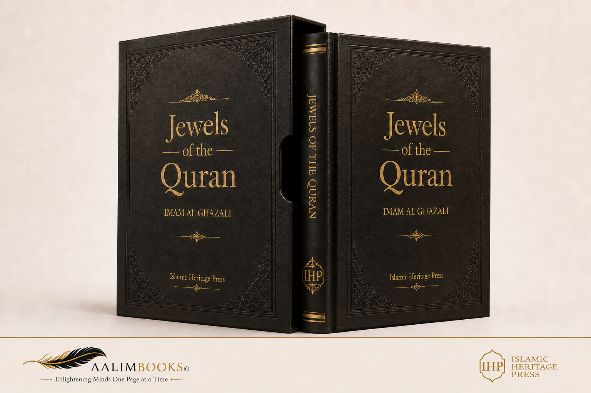

Jewels of the Qur’an (Jawāhir al-Qurʾān wa Duraruh)
Jawahir al Quran
The Jewels of the Quran
Abu Hamid al Ghazali
English translation
Source edition
Title Jawahir al Quran
Author Abū Ḥāmid Muḥammad ibn Muḥammad al-Ghazālī al-Ṭūsī (died 505 AH)
Editor Dr Shaykh Muḥammad Rashīd Riḍā al-Qabbānī
Publisher Dār Iḥyāʾ al-ʿUlūm, Beirut
Edition Second edition, 1406 AH / 1986 CE
Volumes 1
Classification Qur’anic Sciences and the Principles of Exegesis
Publication in al Shamela 8 Dhū al-Ḥijja 1431 AH
Source page references follow the numbering of the printed Arabic edition. The source includes numbered pages 5 to 211 and an unnumbered concluding section.
Contents
Editor’s Introduction5
The Life of Imam al-Ghazālī, May God Most High Have Mercy on Him6
Part One: Introductions and Preliminaries14
Chapter One On the Qur’an as the All-Encompassing Ocean, Containing Different Kinds of Jewels and Treasures14
Chapter Two On Enumerating the Purposes and Treasures of the Qur’an14
Chapter Three: An Explanation of the Purposes of the Qur’an15
Section One On Making Known the One to Whom the Call Is Directed15
Section Two On Making Known the Path of Journeying to God Most High16
Section Three On Making Known the State at the Appointed Time of Union17
Section Four On the States of Those Who Follow the Path and Those Who Turn Aside17
Section Five On Arguing and Debating with the Unbelievers, Exposing Their Disgrace by Clear Proof, and Uncovering Their Delusions and Falsehoods18
Section Six On Maintaining the Stopping Places along the Road, Preparing Provisions, and Readying the Weapons That Repel Thieves and Highwaymen18
Chapter Four19
First Discussion The Sciences of the Shells19
Second Discussion The Sciences of the Core21
Chapter Five On the Branching of All the Other Sciences from the Qur’an23
Chapter Six On the Reasons for the Names Given to the Divisions of the Qur’an25
Chapter Seven On Why the Qur’an Expresses Meanings of the Spiritual Realm through Examples from the Visible Realm27
Chapter Eight On the Way in Which the Relationship between the Two Realms Is Revealed to a Person27
Chapter Nine On Drawing Attention to the Symbols and Allusions Contained in the Qur’an28
Chapter Ten On the Benefit of These Symbols and the Reason Why the Heretics Deny the Foundations of Religion29
Chapter Eleven On How Some Qur’anic Verses Surpass Others, Although All Are the Word of God Most High30
Chapter Twelve On the Secrets of al-Fātiḥa and Some of God’s Wisdom in His Creation31
Chapter Thirteen On al-Fātiḥa as the Key to the Eight Gates of Paradise34
Chapter Fourteen On the Throne Verse as the Foremost Verse of the Qur’an, and an Explanation of the Greatest Name34
Chapter Fifteen On Why Sūrat al-Ikhlāṣ Equals One Third of the Qur’an36
Chapter Sixteen On Urging the Student to Discover through Reflection the Meaning of the Prophet’s Saying, Blessings and Peace Be upon Him: “Yā Sīn Is the Heart of the Qur’an”36
Chapter Seventeen On the Prophet’s Designation, Blessings and Peace Be upon Him, of the Throne Verse as the Foremost Verse of the Qur’an and al-Fātiḥa as the Most Excellent37
Chapter Eighteen On the State of Those Who Know God and How Their Delight Compares with That of the Heedless37
Chapter Nineteen On Dividing the Core of the Qur’an into the Category of Jewels and the Category of Pearls38
Part Two: The Purposes40
First Category: The Jewels of the Quran40
From Surat al-Anam there are forty-five verses:42
From Surat Hud there are eleven verses:46
From Surat al-Zukhruf there are sixteen verses:63
From Surat al-Rahman there are twenty-seven verses:65
The Second Category: The Pearls of the Qur’an69
Conclusion to the Two Categories102
Part Three: Supplements103
Translation notes105
Source page 5
Editor’s Introduction
Praise be to God, Lord of the worlds, and blessings and peace be upon our master Muḥammad, the seal of the prophets and messengers. To proceed:
This is the book The Jewels of the Qur’an by Imam al-Ghazālī, may God be pleased with him. In it, may God Most High have mercy on him, he brings the jewels of the Qur’an to light and calls attention to diving into its ocean, benefiting from its jewels, gathering its pearls, and obtaining its treasures, so as to attain the good of this world and the Hereafter. It is a book whose title indicates the preciousness of its subject, the nobility of its contents, and the loftiness of its aim.
My Work on This Book
When a copy of this book came into my hands, I found that most of it consisted of continuous lines, without division into paragraphs. I therefore divided the book into paragraphs, supplied the vowel markings, and arranged the presentation of the Qur’anic verses, particularly where al-Ghazālī sets out the category of the Qur’an’s Jewels and the category of its Pearls. At the beginning of a line in each category, I stated the number of verses of the Jewels from each surah, then followed this with the verses themselves, likewise beginning each group from a surah on a new line.
Source page 6
I then turned to the Prophetic traditions that al-Ghazālī mentions in the introduction to his book, indicating in the margins of this edition where they are transmitted in the books of hadith. I also identified the number of each Qur’anic verse and its location within its surah. In addition, I explained the meanings of the difficult words in the book by consulting works on the Arabic language.
I make no claim to perfection in any of this work. It is simply an attempt to present the book in a form that makes it easier for the reader to read it and benefit from its subject matter.
In establishing the text and preparing this edition, I relied on the copy printed at al-Maktaba al-Tijāriyya al-Kubrā, owned by Muṣṭafā Muḥammad, at the beginning of Muḥammad ʿAlī Street in Cairo, Egypt: the second edition, 1352 AH / 1933 CE. God is the giver of success.
Beirut, the first of blessed Rajab, 1404 AH.
Muḥammad Rashīd Riḍā al-Qabbānī
Corresponding to 1 April 1984 CE.
Source page 7
In the name of God, the Merciful, the Compassionate.
The Life of Imam al-Ghazālī, May God Most High Have Mercy on Him
Imam al-Ghazālī was Abū Ḥāmid Muḥammad ibn Muḥammad al-Ghazālī, surnamed the Proof of Islam and Zayn al-Dīn al-Ṭūsī, a Shāfiʿī jurist. He was born in Ṭūs in the year 450.
It is related that his father was a righteous man who ate only from the earnings of his own hands, spinning wool and selling it in his shop. When death approached, he entrusted al-Ghazālī and his brother Aḥmad to a friend of his, a Sufi and a good man. He told him: “I deeply regret not having learned to write, and I wish to make up, through these two sons of mine, for what I have missed. Teach them, and do not hesitate to spend on this all that I leave them.” After he died, the Sufi undertook their education until the small sum their father had left them was exhausted. He then told them: “Know that I have spent on you all that belonged to you. I am a poor man and have no money with which to support you. I think you should seek refuge in a school, for you are students of knowledge, and there you will obtain sustenance to help you devote your time to study.” They did so, and this became the cause of their good fortune and high rank. And
Source page 8
al-Ghazālī used to relate this, saying: “We sought knowledge for something other than God, but it refused to be for anything other than God.”
Al-Ghazālī’s father, may God have mercy on him, used to visit those studying jurisprudence, sit with them, devote himself to serving them, and strive to treat them kindly and spend whatever he could on them. Whenever he heard their words, he would weep and implore God to grant him a son who would preach and to make him a jurist. God answered both his prayers: Abū Ḥāmid became the most learned jurist among his peers and the leader of the people of his time; Aḥmad became a preacher whose warnings would soften solid rocks, and whose assemblies of admonition made those present tremble.
In his youth al-Ghazālī studied some jurisprudence under Aḥmad Muḥammad al-Rādhakānī. He later went to Nishapur and remained in the company of Imām al-Ḥaramayn Abū al-Maʿālī al-Juwaynī. He worked diligently until he excelled in his legal school, disputed questions, dialectical disputation, and logic. He studied wisdom and philosophy, mastered all of this, and understood the discourse of the practitioners of these sciences. He undertook to refute them and invalidate their claims, and composed well-written, skilfully arranged books in each of these fields.
Al-Ghazālī, may God be pleased with him, was exceptionally intelligent, sound in judgment, strong in memory, profound in thought, a diver for meanings, and a formidable, persuasive disputant.
When Imām al-Ḥaramayn al-Juwaynī died, al-Ghazālī set out to visit the vizier Niẓām al-Mulk, whose assembly was a gathering place for learned men. He debated the leading scholars there, prevailed over them in argument, and they acknowledged his distinction. The vizier received him with honour and reverence and appointed him to teach at his Niẓāmiyya school in Baghdad in the year 484. He arrived there
Source page 9
in great splendour. The people welcomed him, his word carried authority, and his prestige grew until it surpassed that of princes and viziers. People admired the excellence of his discourse, his consummate merit, his eloquence, his subtle observations, and his delicate allusions, and they loved him. For a time he taught and disseminated knowledge through instruction, legal opinions, and writing. He enjoyed immense prestige and high rank; his word was heeded and his name renowned. He became proverbial, and people journeyed to see him. Eventually his soul rose above all worldly standing. Leaving all of this behind, he travelled to God’s Sacred House in honoured Mecca, setting out on pilgrimage in Dhū al-Ḥijja of the year 488 AH. He appointed his brother to teach in his place in Baghdad.
After returning from the pilgrimage, he entered Damascus in the year 489 AH. He stayed there a few days, then travelled to Jerusalem, where he remained for a time in devotion to his Lord. He then returned to Damascus and secluded himself in the western minaret of the congregational mosque, making his residence there.
One day he happened to enter the Amīniyya school and found the teacher saying, “Al-Ghazālī said,” while teaching his writings. Fearing self-admiration, al-Ghazālī left Damascus and began travelling through the lands. He entered Egypt and went to Alexandria, where he stayed for a time. It is said that he intended to visit Yūsuf ibn Tāshfīn, the ruler of the Maghrib, because of what he had heard of his justice, but news of his death reached him. He continued travelling until he returned to Khurasan, and taught briefly at the Niẓāmiyya school in Nishapur. He then returned to Ṭūs and established beside his house a school for jurists and a Sufi lodge. He divided his time among completing recitations of the Qur’an, sitting with people of spiritual insight, teaching students, and continually observing prayer, fasting, and other acts of worship, until he passed into God Most High’s mercy and good pleasure. His
Source page 10
death occurred in Ṭūs on Monday, 14 Jumādā al-Ākhira, in the year 505 AH, at the age of fifty-five.
Abū al-Faraj ibn al-Jawzī said in his book Steadfastness at Death: “Aḥmad, the brother of Imam al-Ghazālī, said: When Monday came, at dawn, my brother Abū Ḥāmid performed ablution and prayed, then said, ‘Bring me the shroud.’ He took it, kissed it, placed it upon his eyes, and said, ‘I hear and obey, ready to enter the presence of the King.’ Then he stretched out his legs, faced the direction of prayer, and died before the dawn grew bright. May God sanctify his soul.”
The man of letters Abū al-Muẓaffar Muḥammad al-Abīwardī, the celebrated poet, elegized him in verses rhyming in fāʾ, including:
He has passed away; the greatest loss that has afflicted me is of oneWhose like cannot be found among people to succeed him.
After his death, Imam Ismāʿīl al-Ḥākimī quoted these lines from a celebrated poem by Abū Tammām:
I marvel at my patience now that he is dead,When I used to weep blood while he was merely absent.
Yet all these days have become such wondersThat there are no wonders left among them.
Al-Ghazālī, may God have mercy on him, was buried outside al-Ṭābarān, the principal town of Ṭūs. May God Most High have mercy on him.
Source page 11
A Bouquet of His Sayings
Among his exquisite scattered sayings, may God have mercy on him, are those that al-Zabīdī, known as Murtaḍā, quoted from al-Munāwī’s Biographical Classes in his own work A Gift to the Pious Masters: A Commentary on The Revival of the Religious Sciences. These sayings express the breadth of his knowledge, insight, and understanding:
“The lights of knowledge are not veiled from hearts because of any stinginess or withholding on the part of the Bestower—exalted is He above that—but because of impurity, turbidity, and preoccupation on the part of the hearts. Hearts are like vessels: while they are full of water, air cannot enter them. A heart occupied with something other than God cannot receive knowledge of His majesty.”
“The polishing of hearts and sight comes through remembrance, which only those who are mindful of God can attain. Mindfulness of God is the gate to remembrance; remembrance is the gate to unveiling; and unveiling is the gate to the greatest triumph.”
“The believer’s heart does not die; his knowledge is not erased at death, nor is his clarity clouded. Al-Ḥasan alluded to this when he said: ‘The earth does not consume the abode of faith.’”
“Whenever you see scholars jealous of one another, envying one another, and lacking fellowship, know that they have purchased the life of this world at the price of the Hereafter, and so are losers.”
“The most foolish person is the one most firmly convinced of his own excellence; the soundest in intellect is the one most suspicious of himself.”
“Whenever you see someone thinking ill of God and seeking out faults, know that he is corrupt within. The believer bears a sound, unresentful heart toward all creatures.”
“The reality of remembrance takes hold of the heart only after it has been cultivated through mindfulness of God and purified of blameworthy attributes. Otherwise, remembrance is merely inward talk: it has no authority over the heart and does not repel Satan.”
Source page 12
“Just as you supplicate without receiving an answer because a condition of supplication is lacking, so you remember God without Satan fleeing because the conditions of remembrance are lacking.”
“If the soul is not denied some permissible things, it covets forbidden things.”
“All happiness lies in a person mastering his soul; misery lies in his soul mastering him.”
“Whoever accustoms himself to reflecting on God’s majesty and greatness, and the spiritual dominion of His earth and heaven, finds this more delightful than every pleasure. His continual delight in the marvels of the spiritual realm exceeds the delight of someone looking upon the fruits and gardens of Paradise with the outward eye. If this is their state in this world, what do you suppose their state will be when the covering is lifted in the Hereafter?”
“Only three qualities remain with the servant at death: clarity of heart, by which I mean its purification from the world’s impurities; intimacy with the remembrance of God; and love of God. Purity of heart is attained only by restraining worldly appetites; intimacy only through abundant remembrance; love only through knowledge; and knowledge of God only through continual reflection.”
“The scholars of the Hereafter are known by their marks of tranquillity, lowliness, and humility. Grandiloquence, excessive laughter, and abruptness in movement and speech are signs of insolence and heedlessness, the habitual ways of the children of this world.”
He also has, may God have mercy on him, a remarkable supplication that people of spiritual knowledge have tried when poverty befalls them:
“O God, O Self-Sufficient One, O Praiseworthy One, O Originator, O Restorer, O Merciful One, O Loving One: make what You have permitted suffice me against what You have forbidden; make obedience to You suffice me against disobedience to You; and, by Your bounty, make me independent of all besides You.” He said: “Whoever recites this after the Friday prayer and persists in it, God will make him independent of His creatures and provide for him from where he does not expect.”
* * *
Imam al-Ghazālī wrote many works, including:
Source page 13
The Intermediate, The Extended, and The Concise, on jurisprudence; The Revival of the Religious Sciences; The Essentials, on the principles of jurisprudence; The Incoherence of the Philosophers; The Most Exalted Aim in Explaining God’s Most Beautiful Names; The Niche of Lights; Moderation in Belief; The Ascents of Holiness Concerning the States of the Soul; The Aims of the Philosophers; Vindicating the Qur’an against Attacks; Intellectual Knowledge; The Scandals of the Esotericists; Refined Gold in Counsel to Kings; The Path of the Worshippers; The Ruby of Interpretation in Explaining Revelation, a commentary of about forty volumes; Wisdom in God’s Creatures; The Unveiling of Hearts That Brings One Near to the Knower of Unseen Things; and The Jewels of the Qur’an, the book before us.
Muḥammad Rashīd Riḍā al-Qabbānī
Source page 14
Author’s Introduction
In the name of God, the Merciful, the Compassionate.
Praise be to God, Lord of the worlds, and His blessings and peace be upon His Prophet Muḥammad, his family, and all his companions. [To proceed:]
A Chapter on the Contents of the Book We Have Called The Jewels of the Qur’an
Know—may God guide you—that we have arranged this book in three parts:
1. A part on introductions and preliminaries.
2. A part on the purposes.
3. A part on supplements.
Source page 15
Part One: Introductions and Preliminaries
This part comprises nineteen chapters:
Chapter One: On the Qur’an as the all-encompassing ocean, containing different kinds of jewels and treasures.
Chapter Two: On enumerating its purposes and treasures, and how these fall into six divisions: three important foundations and three complementary supplements.
Chapter Three: An explanation of each of the six divisions, and how they branch out to become ten.
Chapter Four: On how all the sciences branch out from the ten divisions; how the sciences of the Qur’an are divided into the science of the shells and the science of the jewels; and an explanation of the ranks of the sciences.
Chapter Five: On how the knowledge of the earlier and later generations branches out from it.
Chapter Six: On the meaning of the Qur’an’s containing red sulphur, the supreme antidote, intensely fragrant musk, and other treasures and pearls; and how this is known only by someone who understands the correspondence between the visible realm and the spiritual realm.
Chapter Seven: On why the Qur’an expresses the meanings of the spiritual realm through examples drawn from the visible realm.
Chapter Eight: On how the relationship between the spiritual realm and the visible realm is apprehended.
Chapter Nine: On deciphering the symbols underlying red sulphur, the supreme antidote,
Source page 16
intensely fragrant musk, aloeswood, rubies, pearls, and other things.
Chapter Ten: On the benefit underlying these symbols.
Chapter Eleven: On how some verses of the Qur’an surpass others, although it is all the word of God Most High.
Chapter Twelve: On the secrets of al-Fātiḥa; its inclusion of eight of the ten categories of the Qur’an’s treasures; and an account of some meanings of “the Merciful, the Compassionate” in relation to the creation of animals.
Chapter Thirteen: On how the eight gates of Paradise are opened by al-Fātiḥa, which is the key to them all.
Chapter Fourteen: On the Throne Verse: why it is the foremost verse of the Qur’an, and why it is more excellent than “God bears witness,” “Say: He is God, One,” the beginning of al-Ḥadīd, the end of al-Ḥashr, and the other verses.
Chapter Fifteen: An examination of why Sūrat al-Ikhlāṣ equals one third of the Qur’an.
Chapter Sixteen: On why Yā Sīn is the heart of the Qur’an.
Chapter Seventeen: On why the Prophet, blessings and peace be upon him, singled out al-Fātiḥa as the most excellent part of the Qur’an and the Throne Verse as its foremost verse, and why this is more fitting than the reverse.
Source page 17
Chapter Eighteen: On the state of those who know God: how in this world they inhabit a garden wider than the heavens and the earth, and how the fruits of their present garden hang within reach, neither ceasing nor being withheld.
Chapter Nineteen: On the hidden reason for stringing the Jewels of the Qur’an on one thread and its Pearls on another. These, then, are nineteen chapters.
Part Two: The Purposes
It contains the core of the verses of the Qur’an, in two categories:
The first category concerns the Jewels: the verses specifically about the essence of God, mighty and majestic, His attributes, and His acts. This is the division concerned with knowledge.
The second category concerns the Pearls: the verses explaining the straight path and urging people to follow it. This is the division concerned with knowledge.
A chapter concluding the two categories: an explanation of the justification for limiting the selection of Qur’anic verses to this collection.
Part Three: Supplements
Its purpose is to enumerate the principal aims derived from these verses, referring back to the verses as a whole. It is an independent book for anyone who wishes to copy it separately. We have called it
Source page 18
The Book of Forty Principles of the World. It is divided into knowledge, whose substance comes down to ten principles, and actions, which are divided into outward actions and inward actions.
Outward actions, taken together, likewise come down to principles.
Inward actions are divided into the blameworthy attributes from which the heart must be purified—these blameworthy character traits also come down to ten principles—and the attributes and character traits from which the heart must be emptied. Praiseworthy character traits come down to ten principles [as well].
The part on supplements therefore comprises four divisions:
1. Knowledge.
2. Outward actions.
3. Blameworthy character traits.
4. Praiseworthy character traits.
The first division: knowledge, comprising ten principles:
1. A principle concerning the essence of God Most High.
2. A principle concerning declaring the divine essence holy.
3. A principle concerning power.
4. A principle concerning knowledge.
5. A principle concerning will.
6. A principle concerning hearing and sight.
7. A principle concerning speech.
8. A principle concerning the divine acts.
Source page 19
9. A principle concerning the Last Day.
10. A principle concerning prophethood.
A conclusion drawing attention to the books in which the realities of these matters may be sought.
The second division: outward actions, comprising ten principles.
1. A principle concerning prayer.
2. A principle concerning almsgiving.
3. A principle concerning fasting.
4. A principle concerning pilgrimage.
5. A principle concerning recitation of the Qur’an.
6. A principle concerning remembrances of God.
7. A principle concerning seeking lawful sustenance.
8. A principle concerning good character.
9. A principle concerning enjoining what is right and forbidding what is wrong.
10. A principle concerning following the Prophetic practice.
A conclusion referring back to all of these, on arranging regular devotions.
The third division: the principles of blameworthy character traits, from which the soul must be purified. These comprise ten principles:
1. A principle concerning gluttony.
2. A principle concerning excessive speech.
3. A principle concerning anger.
4. A principle concerning envy.
Source page 20
5. A principle concerning love of wealth.
6. A principle concerning love of status.
7. A principle concerning love of the world.
8. A principle concerning arrogance.
9. A principle concerning self-admiration.
10. A principle concerning ostentation.
A conclusion referring back to the whole, on the general categories of character traits and the points at which they give rise to delusion.
The fourth division: the principles of praiseworthy character traits, comprising ten principles:
1. A principle concerning repentance.
2. A principle concerning fear and hope.
3. A principle concerning renunciation.
4. A principle concerning patience.
5. A principle concerning gratitude.
6. A principle concerning sincerity and truthfulness.
7. A principle concerning trust in God.
8. A principle concerning love.
9. A principle concerning contentment with the divine decree.
10. A principle concerning death and its reality, the kinds of spiritual punishment, and an explanation of God’s kindled fire, which reaches the hearts.
A conclusion referring back to all of these, on reflection and self-examination. I now begin and say:
Source page 21
Part One: Introductions and Preliminaries
In the name of God, the Merciful, the Compassionate.
Chapter One On the Qur’an as the All-Encompassing Ocean, Containing Different Kinds of Jewels and Treasures
After praising God, with which every book opens, and invoking blessings upon His messengers, with which every address concludes: I call you to awaken from your slumber, you who go on heedlessly in your recitation, who make studying the Qur’an an occupation while grasping only the outward and general aspects of its meanings. How long will you wander along the seashore with your eyes closed to its wonders? Should you not venture upon its deep waters to behold its marvels, travel to its islands to gather its choicest fruits, and dive into its depths to enrich yourself by obtaining its jewels? Do you not reproach yourself for being deprived of its pearls and jewels through continually looking only at its shores and outward appearances? Has it not reached you that the Qur’an is the all-encompassing ocean? From it branches the knowledge of earlier and later generations, just as from the shores of
Source page 22
the all-encompassing ocean branch its rivers and streams? Do you not envy those who plunged amid its surging waves and obtained red sulphur; who dived into its depths and extracted red rubies, radiant pearls, and green chrysolite; who roamed its shores and gathered grey ambergris and fresh, flourishing aloeswood; and who reached its islands and drew from its animals the supreme antidote and intensely fragrant musk? Here I am, fulfilling the duty of brotherhood toward you and hoping for the blessing of your prayers, to guide you in the manner of their roaming, diving, and swimming.
Source page 23
Chapter Two On Enumerating the Purposes and Treasures of the Qur’an
The secret of the Qur’an, its purest core, and its ultimate purpose is to call God’s servants to the Most High Compeller, Lord of the Hereafter and this world, Creator of the lofty heavens, the lower earths, all that lies between them, and all that is beneath the soil. Accordingly, the surahs and verses of the Qur’an fall into six kinds:
Three are the primary matters and important foundations.
Three are the supplementary matters and enriching, completing adjuncts.
The three important kinds are:
(1) Making known the One to whom the call is directed.
(2) Making known the straight path that must be followed in journeying to Him.
(3) Making known the state upon reaching Him.
As for the three enriching and completing kinds:
The first makes known the states of those who respond to the call and the subtle kindnesses of God’s dealings
Source page 24
with them; its secret and purpose is to awaken longing and encouragement. It also makes known the states of those who turn aside and shrink from responding, and how God subdues and makes an example of them; its secret and purpose is to impart a lesson and a warning.
The second recounts the states of the deniers and exposes their disgrace and ignorance through disputation and argument in support of the truth. Its secret and purpose with respect to falsehood is exposure and deterrence; with respect to truth, clarification, confirmation, and compelling victory.
The third makes known how to maintain the stopping places along the road and how to obtain provisions, equipment, and preparedness.
These are six divisions.
Source page 25
Chapter Three: An Explanation of the Purposes of the Qur’an
Section One On Making Known the One to Whom the Call Is Directed
This is an explanation of knowledge of God Most High, which is red sulphur. This knowledge includes:
(1) Knowledge of the essence of the Real, blessed and exalted is He.
(2) Knowledge of the attributes.
(3) Knowledge of the acts.
These three are the red ruby, for they are the most distinctive benefits of red sulphur. Just as precious stones have degrees—some red, some dark blue, some yellow, and some more precious than others—so these three kinds of knowledge do not stand at a single rank. The most precious is:
Source page 26
(1) Knowledge of the essence: this is the red ruby. Next comes knowledge of the attributes, the dark-blue precious stone; then knowledge of the acts, the yellow precious stone. Just as the most precious of these stones is more exalted and rarer, so that even kings obtain only a little of it because of its rarity, while they may obtain much of the lesser kinds, so knowledge of the essence has the narrowest scope, is hardest to attain, most resistant to thought, and furthest beyond expression. For this reason the Qur’an contains only intimations and allusions concerning it. Its mention amounts to affirming absolute holiness, as in His words, exalted is He, “There is nothing like Him,” and Sūrat al-Ikhlāṣ; or absolute exaltation, as in His words, “Glory be to Him! Exalted is He above what they describe—the Originator of the heavens and the earth.”
(2) As for the attributes, their field is broader and the scope for speaking of them is wider. Hence the many verses mentioning knowledge, power, life, speech, wisdom, hearing, sight, and other attributes.
(3) As for the acts, they are an ocean of vast expanses whose limits cannot be reached by exhaustive inquiry. Indeed, nothing exists but God and His acts: everything other than Him is His act. The Qur’an, however, includes those evident acts that occur in the visible realm, such as the heavens and stars, the earth and mountains, trees and animals, seas and vegetation, the sending down of fresh water, and the other causes of growth and life that are apparent to the senses. The noblest and most wondrous of His acts, and those most indicative of their Maker’s majesty, are
Source page 27
those not apparent to the senses, belonging instead to the spiritual realm: the angels and spiritual beings, and the spirit and heart—by which I mean the part of the human being that knows God Most High. These too belong to the unseen and spiritual realm, outside the realm of dominion and visible things. Among them are the earthly angels entrusted with humankind, who prostrated before Adam, peace be upon him; the devils given power over humankind, who refused to prostrate before him; and the heavenly angels, the highest of whom are the cherubim. These remain devoted in the precinct of holiness, paying no attention to human beings—indeed, to anything other than God Most High—because they are absorbed in the beauty and majesty of the lordly presence. They direct their gaze exclusively toward Him, glorifying Him night and day without ceasing. Do not deem it unlikely that among God’s servants are those so occupied with His majesty that they pay no attention to Adam and his offspring; a human being should not be magnified to such a degree. The Messenger of God, blessings and peace be upon him, said: “God has a white land through which the sun’s journey takes thirty days, like the days of this world thirty times over, filled with creatures who do not know that God Most High is disobeyed on earth, nor that God Most High created Adam and Iblīs.” Ibn ʿAbbās, may God be pleased with him, related this. Recognize the vastness of God Most High’s kingdom.
Know that most creatures do not know most of God’s acts, or the noblest of them. Their perception is confined to the realms of sense and imagination, which are the final products of the spiritual realm: the outermost shell, furthest from the purest core. Whoever has not passed beyond this degree is like someone who has seen only the rind of a pomegranate, or only the skin among the marvels of the human being. Such is the outline of the first division, containing the different kinds of
Source page 28
precious stones. We shall recite to you together the verses specifically concerned with it, for they are the quintessence, heart, core, and secret of the Qur’an.
Section Two On Making Known the Path of Journeying to God Most High
This is through complete devotion, as God Most High says: “Devote yourself to Him entirely”—that is, cut yourself off for Him. This detachment consists in turning toward Him and turning away from everything else. His words express it: “There is no god but He, so take Him as your guardian.” Turning toward Him is achieved by constant remembrance; turning away from other things by opposing desire, cleansing oneself of the world’s impurities, and purifying the heart of them. Success is the result, as God Most High says: “Successful indeed is the one who purifies himself, remembers the name of his Lord, and prays.”
The path therefore rests upon two things: constancy and opposition—constancy in remembering God Most High, and opposition to whatever distracts from God. This is the journey to God. It involves no movement, either on the part of the traveller or on the part of the One to whom he travels, for they are together. Have you not heard His words, exalted is He, the truest of speakers: “We are nearer to him than his jugular vein”?
Source page 29
Rather, the seeker and the Sought are like an image present before a mirror but not reflected in it because its surface is rusted. Once you polish it, the image becomes manifest in it, not because the image travels to the mirror or the mirror moves toward the image, but because the veil is removed. God Most High is manifest in His essence and is not hidden: light cannot be hidden, and through light every hidden thing becomes visible. God is the light of the heavens and the earth. Light is concealed from the eye for one of two reasons: either cloudiness in the eye or weakness in it, so that it cannot bear great, dazzling light, just as bats’ eyes cannot bear sunlight. You need only cleanse the eye of the heart of its cloudiness and strengthen its sight. Then He is in it as an image is in a mirror, until, when His manifestation in it takes you unawares, you hasten to say, “He is in it; my humanity has clothed itself in divinity.” Then God makes you firm with the firm word, and you realize that the image is not in the mirror but has become manifest to it. If it actually dwelt in the mirror, one image could not conceivably appear in many mirrors at the same time: once it dwelt in one, it would depart from the others. Far from it! He manifests Himself to a whole company of those who know Him at once. Yet in some mirrors He appears more faithfully, clearly, truly, and distinctly; in others more obscurely, with a greater tendency to distortion. This depends on the mirror’s clarity and polish, the correctness of its curvature, and the evenness of its surface. For this reason he said, blessings and peace be upon him: “God Most High manifests Himself to people generally and to Abū Bakr particularly.”
Source page 30
Knowledge of the journey and of arrival is also a deep ocean among the oceans of the Qur’an. We shall gather for you the verses that guide to the path of journeying, so that you may reflect on them together. Perhaps what ought to be opened to you will then be opened. This division is the radiant pearl.
Section Three On Making Known the State at the Appointed Time of Union
This includes mention of the repose and bliss encountered by those who arrive. “Paradise” is the expression that encompasses its kinds of repose, the highest being the pleasure of beholding God Most High. It [also] includes mention of the disgrace and torment encountered by those veiled from Him because they neglected the journey. “Hellfire” is the expression encompassing its kinds of pain, the most severe being the pain of veiling and banishment—may God protect us from it. Hence He mentions this first in His words, exalted is He: “No indeed! On that day they will be veiled from their Lord. Then they will surely enter the blazing fire.” It also mentions the preliminary states of the two groups, expressed as gathering, resurrection, reckoning, the balance, and the bridge. These have clear outward aspects that serve as nourishment for people generally, and obscure secrets that serve as life for the elect. A third of the Qur’an’s verses and surahs returns to detailing these matters. We do not intend to collect them, for they are too numerous to gather and enumerate; nevertheless, there is scope for reflection and inquiry into them. This division is the green emerald.
Source page 31
Section Four On the States of Those Who Follow the Path and Those Who Turn Aside
As for the states of those who follow the path, these are the stories of the prophets and the friends of God: Adam and Noah; Abraham, Moses, and Aaron; Zechariah and John; Jesus and Mary; David and Solomon; Jonah and Lot; Idrīs and al-Khiḍr; Shuʿayb and Elijah; Muḥammad, blessings and peace be upon him; Gabriel, Michael, the angels, and others.
As for the states of those who deny and turn aside, these include the stories of Nimrod and Pharaoh, ʿĀd and the people of Lot, the people of Tubbaʿ, the people of the Thicket, the unbelievers of Mecca, idol worshippers, Iblīs, the devils, and others. The benefit of this division is warning, awakening attention, and learning lessons. It also contains secrets, symbols, and allusions requiring prolonged reflection. In these two kinds are found grey ambergris and fresh, flourishing aloeswood. The verses concerning them are numerous and need not be sought out and collected.
Section Five On Arguing and Debating with the Unbelievers, Exposing Their Disgrace by Clear Proof, and Uncovering Their Delusions and Falsehoods
[This concerns] three kinds:
The first is speaking of God Most High in ways unworthy of Him: saying that the angels are His daughters, that He has a child and a partner, or that He is the third of three.
Source page 32
The second is describing the Messenger of God, blessings and peace be upon him, as a sorcerer, soothsayer, or liar; denying his prophethood; and saying that, being human like other creatures, he does not deserve to be followed.
The third is denial of the Last Day, rejection of resurrection and rising again, Paradise and Hell, and denial of the consequences of obedience and disobedience. In God Most High’s arguments against them through proofs lie subtleties and realities; there the supreme antidote is found. Its verses, too, are numerous and evident.
Section Six On Maintaining the Stopping Places along the Road, Preparing Provisions, and Readying the Weapons That Repel Thieves and Highwaymen
Its explanation is this: the world is one of the stopping places of those journeying to God Most High, and the body is a mount. Whoever neglects the management of the stopping place and the mount will not complete his journey. Unless the affairs of livelihood in this world are properly ordered, complete devotion and detachment for God Most High—which constitute the journey—cannot be achieved. This requires that the body remain sound and the line of offspring continue. Both are secured by means that preserve their existence and means that ward off whatever corrupts or destroys them.
As for the means of preserving their existence: eating and drinking preserve
Source page 33
the body, and marriage preserves offspring. Food was created as a means of life, and females were created as a place of cultivation. Yet neither food nor spouses are allotted exclusively to particular people by natural disposition. If matters were left unregulated, without establishing a law of exclusive rights, people would neglect them and fight one another. This would distract them from following the path and even lead to their destruction. The Qur’an therefore explains the rules of exclusive entitlement to property in verses concerning sales, usurious transactions, debts, the division of inheritances, obligatory maintenance, the distribution of spoils and alms, marriages, manumission, contracts for purchasing freedom, enslavement, and captivity. It explains how such entitlement is determined when disputed, through admissions, oaths, and testimony. Exclusive marital rights concerning women are explained by the verses on marriage, divorce, taking a wife back, waiting periods, divorce at the wife’s request in return for compensation, the marriage payment, vows of sexual abstinence, repudiating a wife by likening her to one’s mother, and mutual imprecations; and by the verses on marriage prohibitions arising from blood relationship, suckling, and affinity.
As for the means of warding off what corrupts the two, these are deterrent penalties: fighting unbelievers and rebels and urging this, prescribed penalties, fines, discretionary punishments, expiations, blood money, and retaliation.
Retaliation and blood money deter attempts to destroy lives and limbs. The prescribed penalties for theft and highway robbery deter the destruction of wealth, which provides the means of subsistence. The prescribed penalties for illicit sexual intercourse, sodomy, and accusations of illicit sex deter what disrupts offspring and lineage and corrupts the means of cultivation and procreation. Striving against and fighting unbelievers wards off the disruption, caused by those who deny the truth, of livelihood and religion, through which one reaches God Most High. As for fighting
Source page 34
rebels, this wards off the disorder that appears when renegades slip from the control of religious governance, administered by the guardian of those who follow the path and the protector of those who uphold the truth, acting as deputy to the Messenger of the Lord of the worlds. The verses concerning this kind are familiar to you. Underlying them are policies, benefits, wisdoms, and advantages perceived by one who reflects on the beauties of the revealed law, which defines the limits of worldly rulings. This division includes what is called the lawful, the unlawful, and God’s prescribed bounds. In it is found intensely fragrant musk. These, then, are the principal matters contained in the Qur’an’s surahs and verses.
If you string together the [six aforementioned] divisions and their intended branches, you find ten kinds: mention of the essence; the attributes; the acts; the return; the straight path, by which I mean its two aspects of purification and adornment; the states of God’s friends; the states of His enemies; argument against unbelievers; and the bounds of legal rulings.
Source page 35
Chapter Four
On How All the Religious Sciences Branch Out from the Ten Divisions Mentioned
I think you now wish to know how all these sciences branch out from these ten divisions, and the ranks of these sciences according to their nearness to or remoteness from the purpose.
[You will understand this once you know their division into the sciences of the shells and the sciences of the jewel and the core:]
First Discussion The Sciences of the Shells
Know that the realities to which we have alluded have secrets and jewels, and they have shells. The shell is the first thing that appears. Some who reach it stop at the shell; others split it open and behold the pearl. In the same way,
Source page 36
the shell and clothing of the Qur’an’s jewels is the Arabic language. Five sciences branch out from it: the sciences of the rind, shell, and clothing. (1) From its words branches the science of language; (2) from the inflection of its words, grammar; (3) from the different forms of its inflection, the science of Qur’anic readings; and (4) from the manner of sounding its letters, the science of points of articulation. The first constituent of speech is sound; sound, when divided, becomes a letter; letters, when combined, become a word; particular combinations of letters constitute Arabic; the manner of articulating the letters gives inflection; and particular forms of inflection constitute a reading belonging to the seven readings. (5) Once there is a correctly inflected Arabic word, it signifies a meaning and calls for outward exegesis, the fifth science.
These are the sciences of the shell and rind, but they do not share a single rank. A shell has an inward face touching the pearl and closely resembling it through proximity and constant contact. It also has an outward face resembling other stones because it is distant and lacks that contact. Similarly, the outermost face of the Qur’an’s shell is sound. The scholar of letters undertakes the science of correctly articulating it in performance and pronunciation. His is therefore the science of the outer rind, distant from the inside of the shell, let alone the pearl itself. One group’s ignorance has gone so far that they have supposed the Qur’an to be the letters and sounds, and have concluded that it is created because letters and sounds are created. How fitting that these people—or their intellects—should be stoned! Should they be rebuked or treated harshly? Is it not calamity enough for them that, of the worlds of the Qur’an and the levels of
Source page 37
its heavens,
only the outermost rind has appeared to them? This makes known to you the standing of the science of the teacher of recitation, for he knows only the correctness of the points of articulation.
Next in rank is the science of the Qur’an’s language, contained, for example, in Tarjumān al-Qurʾān and comparable works on the unfamiliar words of the Qur’an.
Next in proximity comes the science of linguistic inflection, namely grammar. In one respect it follows language, since inflection comes after the word that is inflected; yet its rank is lower in relation to language, because it is subordinate to it.
Next comes the science of Qur’anic readings, through which the forms of inflection and varieties of pronunciation are known. It is more specific to the Qur’an than language and grammar, yet it is among the additional matters that can be dispensed with, whereas language and grammar are indispensable. The scholar of language and grammar therefore has a higher standing than one who knows only the readings. All of them concern themselves with the shell and rind, although their ranks differ.
Next is the science of outward exegesis, the innermost layer of the shell, close to touching the pearl. Its resemblance to the pearl is therefore so strong that people suppose it to be the pearl, with nothing more precious beyond it. Most people are content with this. How great their loss and deprivation, since they suppose there is no rank beyond their own! Yet compared with the other scholars of the shells, their rank is high and noble. Exegesis is precious in relation to those sciences: it is not pursued for their sake, but they are pursued for its sake. When all these classes fulfil the requirements of their sciences, preserve them, and transmit them properly, God rewards their striving and brightens their faces, as the Messenger of
Source page 38
God said, blessings and peace be upon him: “May God make radiant a person who hears my words, retains them, and conveys them as he heard them. Many a bearer of understanding conveys it to someone without understanding, and many a bearer of understanding conveys it to someone with greater understanding than himself.” These people have heard and conveyed; they receive the reward of bearing and conveying, whether they convey it to someone more learned or to someone without understanding. An exegete who restricts his exegesis to reporting what has been transmitted is a hearer and conveyor, just as one who memorizes the Qur’an and reports is a bearer and conveyor.
The science of hadith likewise branches into these divisions, except for Qur’anic readings and the correction of points of articulation. The rank of the memorizer and transmitter is like that of a Qur’an teacher who has memorized it; the rank of one who knows its outward meanings is like that of the exegete; and the rank of one who studies the names of transmitters is like that of scholars of grammar and language. The chain of transmission and narration are the instrument of conveyance, and the transmitters’ integrity is a condition for that instrument to be suitable. Knowing the transmitters and their circumstances thus amounts to knowing the instrument and its conditions. These are the sciences of the shells.
Second Discussion The Sciences of the Core
These have two levels:
A. The lower level of the sciences of the core consists of the sciences of the three divisions that we called the completing supplements:
The first division is knowledge of the Qur’an’s narratives: those concerning the prophets and those concerning the deniers and enemies. Storytellers and preachers undertake this science,
Source page 39
and some hadith scholars. This is a science for which the need is not universal.
The second division is arguing and debating with unbelievers. From it branches the science of theology, intended to refute errors and innovations and remove doubts, which is undertaken by theologians. We have explained this science at two levels, calling the more accessible The Jerusalem Epistle and the higher Moderation in Belief. Its purpose is to protect the common people’s creed from the confusion caused by innovators. This science is not adequate to disclose realities. To its kind belong our Incoherence of the Philosophers and our refutations of the Esotericists in the book entitled al-Mustaẓhirī, in The Proof of Truth and Crushing Blows against the Esotericists, and in The Detailed Account of Disagreement on the Foundations of Religion. This science has an instrument by which the method of disputation—indeed, the methods of argument through genuine demonstration—is known. We have set it out in The Touchstone of Reasoning and The Criterion of Knowledge in a manner without parallel among jurists and theologians. Whoever has not thoroughly mastered these two cannot be confident of distinguishing a genuine proof from a specious argument.
The third division is knowledge of the bounds established for exclusive rights to wealth and women, to assist in preserving one’s person and offspring. Jurists undertake this science. The quarter of jurisprudence devoted to transactions explains financial rights; the quarter devoted to marriage explains exclusive rights concerning the place of cultivation, namely women; and the quarter devoted to offences explains deterrence against what corrupts these rights. This science is universally needed because it concerns the well-being of this world first, and then that of the Hereafter. Its practitioner is therefore distinguished by greater fame and honour, and by precedence over
Source page 40
preachers, storytellers, and theologians. This science has accordingly received extensive investigation and elaboration in proportion to the need for it, until writings on it have multiplied, especially concerning disputed questions. Yet its differences are slight, and error in it is not far from correctness: nearly every qualified interpreter may be called correct, or it may be said that he receives one reward if mistaken while his counterpart receives two. But because it brings great prestige and standing, motives have multiplied for excessive subdivision and elaboration. We have wasted a considerable part of our life composing works on its disputed questions, and devoted a considerable part to writings on the legal school, arranging them as The Extended, The Intermediate, and The Concise, with excessive subdivision and elaboration. The amount we included in The Quintessence of the Epitome suffices; this is a fourth work and the smallest of them. The early scholars used to issue legal opinions while retaining no more than this in memory. They were either guided to a correct answer or withheld judgment and said, “We do not know.” They did not spend their entire lives on it, but occupied themselves with what mattered and referred such questions to others. This is how jurisprudence branches out from the Qur’an. From the interaction of jurisprudence, the Qur’an, and hadith arises a science called the principles of jurisprudence, concerned with defining the rules for inferring the rulings of the revealed law from verses and reports.
It is clear to you that storytellers and preachers rank below jurists and theologians as long as they confine themselves to mere stories and similar matters. Jurists and theologians are close in rank, but the need for jurists is more widespread, while the need for theologians is more pressing and urgent. Both are needed for worldly welfare: the jurist preserves the rules of exclusive rights concerning food and marriage, while the theologian wards off
Source page 41
the harm of innovators through argument and debate, so that their sparks do not spread and their harm does not become general. As for their relation to the path and the destination, jurists are like those who build and maintain lodgings and facilities on the road to Mecca in relation to the pilgrimage; theologians are like the escorts and guards of the pilgrimage road in relation to the pilgrims. If these people add to their profession the journey to God Most High—crossing the soul’s obstacles, renouncing the world, and turning toward God—their excellence over others is like that of the sun over the moon. If they confine themselves to their profession, however, their rank is very low.
B. The Higher Level of the Sciences of the Core
The higher level of the sciences of the core consists of the primary and foundational branches of important knowledge. The noblest is knowledge of God and the Last Day, because it is knowledge of the destination. Below it is knowledge of the straight path and the way of journeying: how to purify the soul, cross the obstacles of destructive qualities, and adorn it with saving qualities. We have set out these sciences in the books of The Revival of the Religious Sciences. Its quarter on destructive qualities contains those things of which the soul must be purified: voracity, anger, arrogance, ostentation, self-admiration, envy, love of status, love of wealth, and others. Its quarter on saving qualities explains the praiseworthy attributes with which the heart is adorned: renunciation, trust in God, contentment, love, truthfulness, sincerity, and others.
In all, The Revival comprises forty books. Each guides you to one of the soul’s obstacles and how it is crossed, or to one of its veils and how it is lifted. This knowledge stands above jurisprudence, theology, and the sciences preceding them,
Source page 42
because it is knowledge of the path of journeying, whereas those concern its instruments, the maintenance of its stopping places, and the removal of its impediments, as is evident. The highest and noblest knowledge is knowledge of God Most High. All the other sciences are sought for it and for its sake, while it is not sought for anything else. Gradual progress in it consists in ascending from the acts to the attributes, then from the attributes to the essence. These are three levels:
The highest is knowledge of the essence, which most understandings cannot bear. Hence they were told: “Reflect upon God’s creation, but do not reflect upon God’s essence.” This gradual ascent is indicated by the progression of the Messenger of God, blessings and peace be upon him, in his contemplation and regard. He said: “I seek refuge in Your pardon from Your punishment”—a regard toward the act. Then he said: “I seek refuge in Your pleasure from Your displeasure”—a regard toward the attributes. Then he said: “I seek refuge in You from You”—a regard toward the essence. He continued ascending toward nearness, degree by degree; then at the end he acknowledged his inability: “I cannot encompass praise of You; You are as You have praised Yourself.” This is the noblest of the sciences.
Source page 43
Next in nobility is knowledge of the Hereafter, the knowledge of the return mentioned among the three divisions. It is connected with knowledge of God; its reality is knowing the servant’s relation to God Most High when he attains true knowledge, or his becoming veiled through ignorance. Of these four sciences—(1) knowledge of the essence, (2) the attributes, (3) the acts, and (4) the return—we have committed to certain writings whatever we have been granted of their beginnings and principal matters, despite the brevity of life, numerous distractions and afflictions, and scarcity of helpers and companions. We have not, however, made these writings public. Most understandings fall short of them, and the weak are harmed by them; these constitute most of those who bear the outward appearance of learning. They should be disclosed only to someone who has mastered outward knowledge and followed the ways of striving to suppress the soul’s blameworthy attributes until his soul is disciplined and upright on the even path, retaining no worldly interest and seeking nothing but the Truth. Along with this, he must have been granted burning discernment, a responsive natural aptitude, penetrating intelligence, and clear understanding. Anyone into whose hands that book falls is forbidden to disclose it except to someone possessing all these attributes. These are the principal branches of knowledge that stem from the Qur’an, and their ranks.
Source page 44
Chapter Five On the Branching of All the Other Sciences from the Qur’an
Perhaps you will say: there are many sciences beyond these, such as medicine, the science of the stars, the structure of the universe, the form of animal bodies and the anatomy of their organs, magic, talismans, and others.
Know that we have referred only to the religious sciences whose foundations must exist in the world so that following the path of God Most High and travelling to Him may be possible. As for the sciences I have mentioned, they are indeed sciences, but well-being in this life and the return does not depend upon knowing them; hence we have not mentioned them. Beyond those you have enumerated are other sciences whose names are known, and the world is never without people who know them. There is no need to mention them.
Indeed, I say: through clear insight admitting no dispute, it has become apparent to us that there are kinds of knowledge existing in possibility and potentiality that have not yet come into existence, although human beings have the capacity to attain them. There are also sciences that once existed but have now disappeared, so that in these times no one on the face of the earth can be found who
Source page 45
knows them; and other sciences that human beings have no capacity at all to apprehend or encompass, but that some of the angels brought near to God enjoy. Human capacity is limited; angelic capacity is limited at a degree of relative perfection, just as an animal’s capacity is limited at a degree of deficiency. God alone, glorified is He, is unlimited in knowledge. The knowledge of the Real, blessed and exalted is He, differs from ours in two respects: first, it has no limit; second, His knowledge is not potential or possible, awaiting actual existence, but is actual and present. Every perfection possible for Him is present and actual.
The foundations of these sciences, whether we have enumerated them or not, do not lie outside the Qur’an. They are all drawn from a single ocean among the oceans of knowledge of God Most High: the ocean of the acts. We have said that it is a shoreless ocean, and that if the ocean were ink for His words, it would be exhausted before they were exhausted. Among God Most High’s acts—in the ocean of the acts—are, for example, healing and illness. God Most High says, relating the words of Abraham, peace be upon him: “When I fall ill, He heals me.” This single act is known only to someone who knows medicine completely, for medicine means nothing other than knowledge of
Source page 46
illness in its entirety and its signs, and knowledge of healing and its causes. Among His acts, blessed and exalted is He, is the measured determination of the sun and moon and their stations. God Most High says: “The sun and moon follow a reckoning”; “He determined stations for it, so that you might know the number of years and the reckoning”; “The moon is eclipsed, and the sun and moon are brought together”; “He causes the night to enter the day and the day to enter the night”; and “The sun runs to its appointed resting place: that is the determination of the Mighty, the Knowing.”
The reality of the sun’s and moon’s measured motion, their eclipses, the entry of night into day, and the manner in which one wraps over the other is known only by someone who knows the configurations of the heavens and earth. This is a science in its own right.
The full meaning of His words, exalted is He—“O human being, what has deluded you concerning your generous Lord, who created you, fashioned you, and proportioned you, composing you in whatever form He willed?”—is known only to someone who knows the anatomy of the human organs, outward and inward, their number, kinds, wisdom, and benefits. The Qur’an refers to these in various places. They belong to the knowledge of earlier and later generations, and the Qur’an contains the principal matters of the knowledge of earlier and later generations.
Source page 47
Likewise, the full meaning of His words, exalted is He, “I have fashioned him and breathed into him of My spirit,” is not known to someone who does not know fashioning, breathing, and spirit. Behind these lie obscure sciences that most people neglect to seek; they may not understand them even if they hear them from someone who knows them. Were I to detail all that the Qur’an’s verses indicate concerning the particulars of the acts, the account would be long. Only their principal matters can be indicated. We have indicated this by saying that knowledge of God Most High includes knowledge of His acts: that general statement comprises these particulars. Similarly, every division we have summarized would branch into many particulars if elaborated. Reflect, then, upon the Qur’an and seek its marvels, that you may find in it the principal matters and foundations of the knowledge of earlier and later generations. Reflection upon it serves to reach its particulars through its general statements. It is the ocean without a shore.
Source page 48
Chapter Six On the Reasons for the Names Given to the Divisions of the Qur’an
Perhaps you will say: “You indicated that in some divisions of knowledge the supreme antidote is found, in others intensely fragrant musk, in others red sulphur, and so on through the treasures. These are conventional metaphors with hidden symbols and allusions beneath them.”
Know that affectation and formal pretence are hateful to earnest people. There is no obscure expression here without symbols and allusions to a hidden meaning, apprehended by whoever understands the correspondence and affinity between the realm of dominion and visible things and the unseen, spiritual realm. Nothing in the visible realm of dominion is without a counterpart to some spiritual reality in the spiritual realm: it is as though identical with it in spirit and meaning, though not in shape and form. The bodily example in the visible realm leads to the spiritual meaning in that other realm. Hence this world is one of the necessary stopping places on
Source page 49
the path to God for human beings. Just as the core cannot be reached except through the shell, so the realm of spirits cannot be reached except through an example from the realm of bodies. This correspondence is understood only through an example. Consider what is disclosed to a sleeper in a true dream, which is one of the forty-six parts of prophethood, and how it is disclosed through imaginal examples. Someone who teaches wisdom to those unfit for it sees himself in a dream hanging pearls upon swine. One man dreamed that he held a signet ring with which he sealed women’s private parts and men’s mouths. Ibn Sīrīn told him: “You are a man who gives the call to prayer in Ramadan before dawn.” He answered, “Yes.” Another dreamed that he was pouring oil into olives. Ibn Sīrīn told him: “If you have a slave woman with whom you have intercourse, she is your mother. She was taken captive and sold, and you bought her without knowing.” And so it proved.
Consider how sealing mouths and private parts with a signet shares with the call to prayer before dawn the essential meaning of sealing—prevention—although its outward form differs. Infer what I have not mentioned from what I have mentioned.
Know that the Qur’an and transmitted reports contain much of this kind. Consider his saying, blessings and peace be upon him: “The believer’s heart is between two fingers of the Merciful.” The essential meaning of a finger is the power to turn something quickly. The believer’s heart lies between the prompting of the angel and the prompting of Satan: one misleads him and the other guides him. Through these two, God Most High
Source page 50
turns the hearts of His servants, just as you turn things with your two fingers. Consider how the relation of the two subservient angels to God Most High corresponds to your two fingers in the essential meaning of fingers, while differing in outward form.
From this, derive the meaning of his saying, blessings and peace be upon him, “God Most High created Adam in His image,” and the other verses and reports that suggest anthropomorphic likeness to the ignorant.
Source page 51
A single example suffices for the intelligent; multiplying examples only increases the dull person’s bewilderment. Once you understand the meaning of “finger,” you can advance to “pen,” “hand,” “right hand,” “face,” and “image,” taking all of them in a spiritual rather than bodily sense. You will know that the spirit and reality of a pen, which must be established when defining it, is “that by which one writes.” If something exists through whose agency the inscription of knowledge is traced upon the tablets of hearts, how fitting that it should be the pen! God Most High taught by the pen; He taught the human being what he did not know. This pen is spiritual, since it possesses the spirit and reality of a pen and lacks only its physical shape and form. Being made of wood or reed is not part of a pen’s reality, and therefore does not appear in its true definition. Everything has a definition and reality that is its spirit. When you are guided to these spirits, you become spiritual: the gates of the spiritual realm are opened to you, and you become fit for the company of the highest assembly—excellent companions indeed. It is not unlikely that the Qur’an contains allusions of this kind. If you cannot bear to hear something of this kind unless its interpretation is traced to the Companions, and reliance on authority dominates you, consider the exegetes’ interpretation of His words, exalted is He: “He sends down water from the sky, and valleys flow according to their capacity. The flood carries swelling foam; and from what they heat in the fire, seeking ornaments or utensils, comes similar foam”—the verse. Consider how knowledge is compared to water, hearts to valleys and springs, and error to foam. He then draws your attention at its end, saying: “Thus God sets forth likenesses.” This much of this subject suffices for you; you cannot bear more.
Source page 52
In general, know that whatever your understanding can bear, the Qur’an presents to you in the form in which it would appear if, while asleep, your spirit were contemplating the Preserved Tablet: a fitting image requiring interpretation. Know that inner interpretation proceeds like the interpretation of dreams. That is why we say that the outward exegete circles around the shell: someone who explains the meanings of the signet, private parts, and mouths is not like someone who perceives that they signify the call to prayer before dawn.
Source page 53
Chapter Seven On Why the Qur’an Expresses Meanings of the Spiritual Realm through Examples from the Visible Realm
Perhaps you will say: “Why were these realities presented through such examples instead of being disclosed explicitly, so that people became entangled in the ignorance of anthropomorphic comparison and the error of imagining bodily forms?”
Know that you will understand this when you understand why the unseen is disclosed to the sleeper from the Preserved Tablet only through an example, rather than explicit disclosure, as in the examples I related. This is known by whoever knows the hidden relation between the realm of dominion and the spiritual realm. Once you know this, you will know that you are asleep in this world even when awake. People are asleep, and when they die they awaken. At their awakening through death, the realities and essential meanings of what they heard through examples are disclosed to them. They recognize those examples as rinds and shells for those meanings, and become certain of the truth of the verses of
Source page 54
the Qur’an and the words of the Messenger of God, blessings and peace be upon him, just as that caller to prayer became certain of Ibn Sīrīn’s truthfulness and the correctness of his interpretation of the dream. All this is disclosed when death arrives; some of it may be disclosed during the agonies of death. Then the denier and the heedless person say: “If only we had obeyed God and obeyed the Messenger!” And His words: “Do they await anything but its fulfilment? On the day its fulfilment comes, those who had forgotten it before will say: ‘The messengers of our Lord did indeed bring the truth. Have we any intercessors to intercede for us, or can we be sent back to act differently from the way we acted?’”—the verse. He says: “Woe to me! If only I had not taken so-and-so as a friend”; “If only I were dust”; “Alas for my neglect of my duty toward God”; “Alas for what we neglected in it”; and “Our Lord, we have seen and heard. Send us back and we will act righteously; we are now certain.” Most of the Qur’anic verses explaining the return and the Hereafter, to which we assigned green chrysolite, point to this.
Understand from this that as long as you remain in this worldly life, you are asleep; your awakening comes only after death. Then you become fit to behold explicit truth face to face. Before that, you can bear realities only when cast into the mould of imaginal examples. Because your vision remains fixed upon the senses, you suppose their meaning to be nothing beyond the imagined form. You overlook the spirit, just as you overlook your own spirit and perceive only your bodily mould.
Source page 55
Chapter Eight On the Way in Which the Relationship between the Two Realms Is Revealed to a Person
Perhaps you will say: “Disclose the nature of the relationship between the two realms: why dreams occur through examples rather than explicit disclosure, and why the Messenger of God, blessings and peace be upon him, often saw Gabriel in a form other than his own, seeing him in his own form only twice.”
Know that if you suppose this will be imparted to you all at once, without first preparing to receive it through discipline and striving, abandoning the world entirely, withdrawing from the crowds of people, and becoming absorbed in love of the Creator and the search for truth, you have become arrogant and exalted yourself greatly. Such knowledge is withheld from someone like you, and it is said:
You two have come to learn the secret of my happiness;You will find me sparing with the secret of my happiness.
Abandon the hope of obtaining this through writing and correspondence. Seek it only through the gate of striving and mindfulness of God; guidance follows these and confirms them, as God Most High says: “Those who
Source page 56
strive for Us, We shall surely guide them to Our paths.” He also said, blessings and peace be upon him: “Whoever acts upon what he knows, God bequeaths to him knowledge of what he does not know.”
Know with certainty that the secrets of the spiritual realm are veiled from hearts polluted by love of the world, whose efforts are mostly absorbed in pursuing immediate gain. We have mentioned this much to awaken longing and encouragement, and to draw attention to a secret of the Qur’an. For anyone heedless of it, the Qur’an’s shells will never open to reveal its jewels. If your desire is sincere, you will apply yourself to the search, seek the help of people of insight, and draw assistance from them. I do not see you succeeding if you rely exclusively upon your own judgment and reason. How can you understand this when you do not understand the language of states, but suppose that speech in the world occurs only through spoken words? You therefore do not understand His words, exalted is He, “There is nothing that does not glorify Him with praise,” or “They both said: ‘We come willingly,’” unless you imagine the earth to have a tongue and life. Nor do you understand the saying: “The wall said to the peg, ‘Why do you pierce me?’ It answered, ‘Ask the one hammering me, who has not left me alone and has seen the stone hammering me.’” You do not know that this statement is true, and more truthful than spoken language. How, then, can you understand the secrets beyond it?
Source page 57
Chapter Nine On Drawing Attention to the Symbols and Allusions Contained in the Qur’an
Perhaps you hope to be shown the symbols and allusions concealed beneath the jewels that we said the Qur’an contains. Know that, to people in the visible realm, red sulphur signifies the alchemy by which substances are transformed from base qualities into precious ones, so that stone becomes ruby and copper pure gold. Through it they seek worldly pleasures that are clouded and troubled in the present and soon come to an end. Consider, then, that which transforms the heart’s substance from animal baseness and the error of ignorance into the purity and spirituality of angels, raising [the heart] from the lowest of the low to the highest heights and attaining thereby nearness to the Lord of the worlds and the vision of His noble face for ever, continually and eternally. Is this not more deserving of the name “red sulphur”? That is why we have called it red sulphur.
Source page 58
Reflect, examine yourself, and be fair, so that you may know that this name is more fitting and more truthful in this sense. The most precious treasures obtained from alchemy are precious stones, the highest being the red ruby. That is why we called it knowledge of the essence.
As for the supreme antidote, among people this signifies that by which one is healed of deadly poisons entering the stomach, although the destruction they cause concerns only this fleeting world. Consider, then: if the poisons of innovations, desires, and errors entering the heart cause a destruction that erects a permanent, everlasting, eternal barrier between those poisons and the realm of holiness, the source of repose and ease, and if demonstrative argument cures those poisons and wards off their harm, is it not more deserving of being called the supreme antidote?
As for intensely fragrant musk, in the visible realm this signifies something a person carries, from which a sweet scent rises that makes him known and noticeable. Even if he wishes it to remain hidden, it will not: it spreads and diffuses. Consider whether, among acquired branches of knowledge, there is one that spreads a good name throughout the world and makes its possessor renowned—even if he wishes to hide and prefers obscurity, it makes him known and noticeable. Is the name “intensely fragrant musk” not more fitting and truthful for it? You know that jurisprudence and knowledge of the rulings of the revealed law give a good name, spread one’s reputation, and increase one’s standing. The delight that a good name and widespread standing bring to the heart is much greater than the delight that the sweet scent of musk brings to the sense of smell.
Source page 59
As for aloeswood, people understand it as a physical substance from which no benefit is obtained until it is cast into the fire and burns, sending up spreading smoke that reaches the sense of smell. Its benefit and usefulness then become great, and its arrival is pleasing. If among the hypocrites and God’s enemies there are mere shapes, like propped-up timbers without benefit, but God’s punishment and chastisement descend upon them as a thunderbolt, sinking into the earth, or an earthquake, until they burn and smoke rises from them to the hearts’ sense of smell, their benefit becomes great in urging people to seek the highest Paradise and nearness to the Real, glorified and exalted is He, and in turning them away from error, heedlessness, and following desire. Is the name “aloeswood” not more fitting and truthful for this? Let this much explanation of these symbols suffice. Infer the rest yourself and decipher its symbolism, if you can and are qualified.
I would have made myself heard had I called to someone living;But there is no life in the one I call.
Source page 60
Chapter Ten On the Benefit of These Symbols and the Reason Why the Heretics Deny the Foundations of Religion
Perhaps you will say: “It has become clear to me that these symbols are sound and truthful. Is there another benefit to be learned beyond them?” Know that the whole benefit lies beyond them. They are examples through which you may learn how spiritual meanings belonging to the spiritual realm are made known through familiar, conventional words, opening for you the gate of unveiling the Qur’an’s meanings and diving into its oceans. We have often seen groups of would-be clever people confused by outward meanings: objections occur to them, and they imagine things that contradict them. The foundation of their religious belief then collapses, leaving them with an inward denial of gathering and resurrection, Paradise and Hell, and returning to God Most High after death. They disclose this in their private thoughts; the bridle of mindfulness and the bond of scrupulousness fall away. They indulge in pursuing worldly trifles, consuming the unlawful, and following desires, confining their aspirations to status, wealth, and immediate enjoyments.
Source page 61
They look upon the scrupulous with contempt, deeming them ignorant. If they observe scrupulousness in someone they cannot dismiss because of his abundant knowledge, sound reason, and penetrating mind, they attribute it to a desire to deceive, put on appearances, win hearts, and turn people’s attention toward himself. Seeing scrupulousness in those who practise it only increases their persistence in error, although observing the scrupulousness of religious people is among the strongest confirmations of believers’ convictions. All this occurs because their intellectual vision is confined to the forms of things and their imagined moulds; it does not extend to their spirits and realities. They have not grasped the correspondence between the visible and spiritual realms. Failing to grasp it, and finding the outward aspects of questions contradictory, they go astray and mislead others. They neither apprehend anything of the realm of spirits through direct experience, as the elect do, nor believe in the unseen with the faith of ordinary people. Their cleverness destroys them. Ignorance is nearer to deliverance than truncated discernment and incomplete cleverness. We do not find this unlikely: for a time we ourselves stumbled in the trailing garments of these errors through the ill fortune of bad companions and their company, until God removed us from their slips and protected us from their pitfalls. To Him belong praise, gratitude, and credit for directing and guiding, bestowing and giving, and protecting us from the perils of destruction. This cannot be attained through effort and wishes: “Whatever mercy God opens to people, none can withhold; and whatever He withholds, none can release after Him. He is the Mighty, the Wise.”
Source page 62
Chapter Eleven On How Some Qur’anic Verses Surpass Others, Although All Are the Word of God Most High
Perhaps you will say: “In these observations you have intended to establish the superiority of some parts of the Qur’an over others, although all of it is God Most High’s speech. How can its parts differ, and how can some be nobler than others?”
Know that if the light of insight does not guide you to the difference between the Throne Verse and the verse on debts, or between Sūrat al-Ikhlāṣ and Sūrat Tabbat, and your wayward soul, absorbed in reliance on authority, recoils from believing in such a distinction, then follow the bearer of the message, God’s blessings and peace be upon him. It was to him that
Source page 63
the Qur’an was revealed. Transmitted reports indicate the excellence of certain verses and the multiplied reward attached to certain revealed surahs. He said, blessings and peace be upon him: “The Opening of the Book is the most excellent part of the Qur’an.” He said: “The Throne Verse is the foremost verse of the Qur’an.” And he said: “Yā Sīn is the heart of the Qur’an, and ‘Say: He is God, One’ equals one third of the Qur’an.” Reports about the virtues of the Qur’an’s powerful passages, singling out particular verses and surahs for excellence and abundant reward in their recitation, are beyond counting. Seek them in the books of hadith if you wish. We shall now draw your attention to the meaning of these four reports concerning the excellence of these surahs, although the arrangement we have already established of the Qur’an’s divisions, branches, and ranks will guide you—may God guide you—if you return to it and reflect upon it. We have confined its divisions and branches to ten kinds.
Source page 64
Chapter Twelve On the Secrets of al-Fātiḥa and Some of God’s Wisdom in His Creation
If you reflect, you will find that al-Fātiḥa, despite its brevity, encompasses eight paths:
(1) His words, exalted is He, “In the name of God, the Merciful, the Compassionate,” tell of the essence.
(2) His words, “the Merciful, the Compassionate,” tell of one particular attribute. Its special characteristic is that it implies all the other attributes, such as knowledge and power, and then relates to creatures, the recipients of mercy, in a way that makes them feel close to Him, awakens longing for Him, and encourages obedience to Him. This differs from the attribute of anger: if mentioned instead of mercy, it would cause sorrow and fear, constricting the heart rather than opening it.
(3) His words, “Praise be to God, Lord of the worlds,” encompass two things:
Source page 65
The first is the basis of praise, namely gratitude. This is the beginning of the straight path and, as it were, half of it. Practical faith has two halves: patience and gratitude. You can learn the reality of this with certainty, if you wish, from The Revival of the Religious Sciences, particularly its Book of Gratitude and Patience. Gratitude’s superiority to patience is like mercy’s superiority to anger: gratitude springs from delight, the stirring of longing, and the repose of love, whereas patience with God’s decree springs from fear and awe and is not free of distress and constraint. Following the straight path to God Most High through love and its works is far superior to following the path of fear. The secret of this is known from the Book of Love and Longing within The Revival. Hence the Messenger of God, blessings and peace be upon him, said: “The first to be called to Paradise are those who praise God in every state.”
The second is His phrase, exalted is He, “Lord of the worlds,” which points to all the acts and attributes them to Him in the briefest and most comprehensive expression: “Lord of the worlds.”
The best relation [of] an act to Him is that of lordship, for this is more complete and perfect in glorification than saying “the Highest of the worlds” or “the Creator of the worlds.”
(4) His second saying, “the Merciful, the Compassionate,” points once more to the attribute. Do not suppose it is repetition: there is no repetition in the Qur’an, since repetition is defined as something containing no additional benefit. Mentioning “mercy” after mentioning the worlds and before
Source page 66
mentioning “Master of the Day of Judgment” contains two great benefits in setting out the workings of mercy:
The first concerns the creation of the Lord of the worlds. He created each in its most complete and excellent form and gave it everything it needs. One of the worlds He created is the animal world, whose smallest creatures include mosquitoes, flies, spiders, and bees.
Consider the mosquito and how He created its organs. He created in it every organ He created in the elephant, even a long, sharply pointed trunk. He then guided it to its food, so that it sucks human blood: you see it insert its trunk and draw nourishment through that hollow passage. He created two wings for it as a means of escape when someone tries to drive it away.
Consider the fly: how He created its organs and its two exposed eyes without eyelids, because its small head cannot accommodate eyelids. Eyelids are needed to clear the eyes of dirt and dust. Consider how, in place of eyelids, He created two additional hands: besides its four legs it has two extra hands. When it lands, you see it constantly wiping its eyes with its hands, clearing away dust. Consider the spider: how He created its limbs and taught it the art of weaving and the means of hunting without wings. He created for it a sticky secretion by which it suspends itself in a corner and watches for flies passing nearby. It throws itself upon a fly, catches it, and binds it with its thread,
Source page 67
drawn out
from its secretion, preventing the fly from escaping until it eats it or stores it. Consider the spider’s weaving of its home: how God guided it to weave with geometrical proportion in the arrangement of warp and weft.
Consider bees and their countless marvels in gathering honey and wax. We draw your attention to the geometry of their dwelling: they build it in a hexagonal shape so that space is not restricted for their companions, since great numbers crowd into one place. If they built round cells, wasted gaps would remain outside the circles, for circles do not fit tightly together. The same applies to other shapes. Squares do fit tightly, but a bee’s shape tends toward roundness, so unused corners would remain inside the cell, just as wasted gaps remain outside round cells. No shape approximates the circle while fitting tightly together as the hexagon does; this is known through geometrical demonstration. Consider how God guided the bee to this shape’s special property. This is one example of the wonders of God’s workmanship, gentleness, and mercy toward His creatures, for the lower serves as evidence of the higher. These marvels cannot be exhausted over long lifetimes—I mean those disclosed to human beings, which are few compared with those not disclosed, whose knowledge He and the angels alone possess. You may find intimations of this kind in the Book of Gratitude and the Book of Love. Seek them if you are qualified. Otherwise, lower your gaze from the traces of God’s mercy and do not look at them; do not roam or take your delight in the field of knowledge of His workmanship. Occupy yourself instead with al-Mutanabbī’s poetry, Sībawayh’s unusual grammatical points, Ibn al-Ḥaddād’s subsidiary rulings on rare divorce cases, and the tricks of disputation in theology. That is more fitting for you, for
Source page 68
your worth is proportionate to your aspiration. “My advice will not benefit you, even if I wish to advise you, if God wills to lead you astray”; and “Whatever mercy God opens to people, none can withhold; and whatever He withholds, none can release after Him.” Let us return to the purpose: to point out an example of mercy in the creation of the worlds.
The second is its connection with His words, “Master of the Day of Judgment.” This points to mercy at the return, on the Day of Recompense, when everlasting dominion is bestowed in exchange for a word and worship. Explaining this would take long.
The point is that nothing in the Qur’an is mere repetition. If you see something that outwardly appears repeated, examine what precedes and follows it, so that the additional benefit of repeating it becomes clear to you.
(5) His words, “Master of the Day of Judgment,” point to the Hereafter and the return, one of the foundational divisions, while also indicating the meaning of dominion and kingship, among the attributes of majesty.
Source page 69
(6) His words, “You alone we worship, and You alone we ask for help,” encompass two great pillars:
The first is worship with sincerity, directed exclusively toward Him. This is the spirit of the straight path, as you learn from the Book of Truthfulness and Sincerity and the Book Condemning Status and Ostentation in The Revival.
The second is the conviction that none but He deserves worship: the core of the creed of divine unity. This consists in disclaiming one’s own might and power and knowing that God alone performs all acts, and that the servant cannot act independently without His help. “You alone we worship” points to adorning the soul with worship and sincerity; “You alone we ask for help” points to purifying it of association with God and reliance upon one’s own might and power.
We have said that following the straight path rests upon two divisions: purification by removing what ought not to be present, and adornment by acquiring what ought to be present. Two phrases within al-Fātiḥa encompass both.
(7) His words, “Guide us to the straight path,” are a request and supplication, the marrow of worship, as you learn from the Book of Remembrances and Supplications among the books of The Revival. This draws attention to the human need to implore and beseech God Most High, the spirit of servanthood. It also shows that the greatest human need is guidance to the straight path, for through it one journeys to God Most High, as already mentioned.
Source page 70
(8) His words, “The path of those upon whom You have bestowed favour,” to the end of the surah, recall His favour toward His friends and His vengeance and anger toward His enemies, stirring desire and fear from the heart’s depths. We have said that recounting the stories of the prophets and the enemies forms two great divisions of the Qur’an.
Al-Fātiḥa thus encompasses eight of the ten divisions:
(1) The essence; (2) the attributes; (3) the acts; (4) mention of the return; (5) the straight path in both its aspects, namely purification and adornment; (6) mention of the favour bestowed upon God’s friends; (7) anger against the enemies; and (8) mention of the return. Only two divisions fall outside it: (A) argument against unbelievers and (B) the rulings of jurists. These are the two disciplines from which theology and jurisprudence branch out. This makes clear that they occupy the last category in the ranks of religious knowledge. Only love of wealth and status has brought them to the fore.
Source page 71
Chapter Thirteen On al-Fātiḥa as the Key to the Eight Gates of Paradise
Here we draw your attention to a subtle point: this surah is the Opening of the Book and the key to Paradise. It is a key because Paradise has eight gates and al-Fātiḥa’s meanings come down to eight. Know with certainty that each division is the key to one gate of Paradise, as the transmitted reports attest. If you do not find faith and assent to this in your heart, and seek the correspondence, set aside what you have understood of Paradise’s outward sense. It will be clear to you that each division opens the gate to a garden of knowledge, as we indicated regarding the traces of God Most High’s mercy, the marvels of His workmanship, and other matters.
Do not suppose that the knower’s delight in the spacious meadows and gardens of knowledge is less than the delight of someone who enters the Paradise he understands and satisfies there the appetites of the belly and genitals. How could they be equal? It cannot be denied that among those who know God are people
Source page 72
whose desire to open the gates of knowledge, to behold the spiritual dominion of heaven and earth and the majesty of their Creator and Governor, exceeds their desire for sexual partners, food, and clothing. How could this desire fail to be greater and more dominant in the discerning knower, when it means sharing with the angels in the highest Paradise? Angels have no portion in food, drink, sexual union, or clothing. Animals may enjoy food, drink, and sexual union more than human beings. If you consider sharing animals’ pleasures more worth seeking than sharing the angels’ joy and delight in beholding the beauty of the lordly presence, how great your error, ignorance, and stupidity, and how low your aspiration! Your worth is proportionate to your aspiration. As for the knower, when eight gates of the Paradise of knowledge open to him and he devotes himself within it, he pays no attention at all to the Paradise of the simple-hearted. Most of the people of Paradise are simple-hearted, while the highest heights belong to people of understanding, as the report relates.
You too, who restrict your aspirations to the pleasures of belly and genitals like an animal, do not deny that the degrees of Paradise are attained through the branches of knowledge. Even if the gardens of knowledge do not deserve to be called Paradise themselves, they deserve to be the means by which Paradise is attained, and thus to be its keys. Do not, then, deny that al-Fātiḥa contains the keys to all the gates of Paradise.
Source page 73
Chapter Fourteen On the Throne Verse as the Foremost Verse of the Qur’an, and an Explanation of the Greatest Name
I say: will you reflect on the Throne Verse and why it is called the foremost of the verses? If you cannot infer this through reflection, return to the divisions we mentioned and the ranks we established. We told you that knowledge of God Most High, His essence, and His attributes is the ultimate purpose of the Qur’anic sciences. All the other divisions are sought for its sake, while it is sought for itself, not for something else. It is what is followed; everything else follows it. The title of leadership belongs to the one placed foremost, toward whom followers turn their faces and hearts, following his example and pursuing his direction and purpose. The Throne Verse contains mention of the essence, attributes, and acts alone, and nothing else:
His word, “God,” points to the essence.
His words, “There is no god but He,” point to the unity of the essence.
Source page 74
His words, “the Living, the Self-Subsisting,” point to the attribute of the essence and His majesty. The Self-Subsisting is the One who subsists through Himself and through whom others subsist. His subsistence depends on nothing, while the subsistence of everything depends on Him. This is the utmost majesty and greatness.
His words, “Neither slumber nor sleep overtakes Him,” declare Him transcendent and holy, free of the attributes of originated things that are impossible for Him. Declaring Him holy beyond what is impossible is one division of knowledge—indeed, its clearest division.
His words, “To Him belongs whatever is in the heavens and whatever is on earth,” point to them all: all originate from Him and return to Him.
His words, “Who can intercede with Him except by His permission?” point to His sole possession of dominion, judgment, and command. Whoever has the power to intercede possesses it only because He honours him and grants permission. This denies any partner with Him in dominion and command.
His words, “He knows what is before them and what is behind them, and they encompass nothing of His knowledge except what He wills,” point to the attribute of knowledge, the specification of some things known, and His exclusive possession of knowledge. No one else has knowledge from himself; whatever knowledge another possesses comes from His gift and bestowal, and to the extent of His will and pleasure.
His words, “His Seat encompasses the heavens and the earth,” point to the greatness of His dominion and the perfection of His power. Here lies a secret that present circumstances do not permit us to disclose. Knowledge of the Seat, its attributes, and the expanse of the heavens and earth is noble and obscure, and many sciences are connected with it.
Source page 75
His words, “Preserving them does not weary Him,” point to the attributes of power and its perfection, and its transcendence of weakness and deficiency.
His words, “He is the Most High, the Magnificent,” point to two great principles among the attributes. Explaining these two descriptions would take long. We have explained as much of them as admits explanation in The Most Exalted Aim Concerning God’s Most Beautiful Names; seek it there.
Now, if you consider all these meanings and then recite all the Qur’an’s verses, you will not find this combination of divine unity, holiness, and explanation of the sublime attributes gathered in any other single verse. Hence the Prophet, blessings and peace be upon him, called it “the foremost verse of the Qur’an.” “God bears witness” contains only divine unity; “Say: He is God, One” contains only unity and holiness; “Say: O God, Master of dominion” contains only the acts and perfection of power. Al-Fātiḥa contains allusions to these attributes without explanation, whereas they are explained in the Throne Verse. The passages nearest to it in gathering these meanings are the end of al-Ḥashr and the beginning of al-Ḥadīd, since they contain many names and attributes. But they consist of several verses, not one
Source page 76
single verse, whereas this [the Throne Verse] is one verse. If you compare it with any one of those verses, you find it more comprehensive in its purposes. It therefore deserves precedence over the verses. He said, blessings and peace be upon him: “It is the foremost of the verses.” How could it not be, when it contains “the Living, the Self-Subsisting,” the Greatest Name? A secret lies beneath this. It is attested by the report that the Greatest Name is in the Throne Verse, the beginning of Āl ʿImrān, and His words, “Faces are humbled before the Living, the Self-Subsisting.”
Source page 77
Chapter Fifteen On Why Sūrat al-Ikhlāṣ Equals One Third of the Qur’an
As for his saying, peace be upon him, “‘Say: He is God, One’ equals one third of the Qur’an,” I do not see that you understand why. Sometimes you say: “He said this to encourage recitation; an actual proportion was not intended”—far be the station of prophethood from that! At other times you say: “This lies beyond understanding and interpretation. The Qur’an contains more than six thousand verses; how can this small amount be a third of it?” This comes from your scant knowledge of the Qur’an’s realities and your attention to its outward words. You suppose that their worth increases with the length of the wording and decreases with its brevity, like someone who prefers many dirhams to a single jewel because of their number.
Source page 78
Know that [Sūrat] al-Ikhlāṣ certainly equals one third of the Qur’an. Return to the three divisions we mentioned among its essential purposes: knowledge of God Most High, knowledge of the Hereafter, and knowledge of the straight path. These three kinds of knowledge are the important matters; the rest are supplementary. Sūrat al-Ikhlāṣ includes one of the three: knowledge of God, His unity, and His holiness beyond sharing a genus or species with anything. This is meant by denying an origin, offspring, or equal. Describing Him as al-Ṣamad indicates that He alone is the one to whom needs are directed: no other object of recourse exists for them. It contains no discussion of the Hereafter or the straight path. We have said that the foundations of the Qur’an’s essential purposes are knowledge of God Most High, of the Hereafter, and of the straight path. It therefore equals one third of the Qur’an—that is, one third of its foundations—just as he said, peace be upon him, “The pilgrimage is ʿArafa,” meaning that this is its foundation and the rest are supplementary.
Source page 79
Chapter Sixteen On Urging the Student to Discover through Reflection the Meaning of the Prophet’s Saying, Blessings and Peace Be upon Him: “Yā Sīn Is the Heart of the Qur’an”
Perhaps you now wish to know the meaning of his saying, blessings and peace be upon him, “Yā Sīn is the heart of the Qur’an.” I think it best to leave this to your understanding, so that you may infer it yourself by analogy with the similar matters to which your attention has been drawn. Perhaps you will discover its meaning. The energy and awakening that arise within you are greater than the joy of having something pointed out by another; discovering something yourself increases your energy more than being told. I hope that if you discover one secret yourself, your motivation will grow and your eagerness for continual reflection will be aroused, in the hope of insight and the discovery of secrets. Through this, the realities of the Qur’an’s powerful verses will open to you. We shall gather them for you, making it easier to examine them and infer their secrets.
Source page 80
Chapter Seventeen On the Prophet’s Designation, Blessings and Peace Be upon Him, of the Throne Verse as the Foremost Verse of the Qur’an and al-Fātiḥa as the Most Excellent
Perhaps you will ask: “Why was the Throne Verse singled out as ‘foremost’ and al-Fātiḥa as ‘most excellent’? Is there a secret in this, or is it coincidental, as when one expression comes readily to the tongue in praising a person and another in praising someone similar?”
I say: far from it! That would suit you, me, and those who speak from desire, but not one who speaks from revelation revealed. Do not suppose that a single word issued from him, blessings and peace be upon him, in his various states of anger or pleasure, except with truth and veracity. The secret of this distinction is that one who combines many kinds and varieties of excellence is called excellent; one who combines more kinds is called more excellent. Excellence signifies increase, so “more excellent” means “more abundant.” Leadership, however, signifies firmly established nobility that calls for being followed and refuses subordinate status. If you return to the meanings we mentioned in the two passages, you will know that al-Fātiḥa draws attention to many different meanings, and is therefore most excellent. The Throne Verse contains the supreme knowledge, which is followed and sought as the goal, and which is followed by
Source page 81
all other kinds of knowledge. The title “foremost” is therefore more appropriate to it. Attend to this manner of examining the Qur’an’s powerful passages and what is recited to you, so that your knowledge may grow and your thought open, allowing you to see wonders and signs and delight in the Paradise of knowledge. That Paradise has no limit to its bounds, for knowledge of God’s majesty and acts has no end. The Paradise you know is created from bodies; however vast its expanses, it is finite, since creating an infinite body is not possible but impossible. Beware of exchanging what is better for what is lower, lest you become one of the simple-hearted, even if you are among the people of Paradise. He said, blessings and peace be upon him: “Most of the people of Paradise are simple-hearted; the highest heights belong to people of understanding.”
Source page 82
Chapter Eighteen On the State of Those Who Know God and How Their Delight Compares with That of the Heedless
Know that if a longing to meet God and a desire to know His majesty were created in you more sincere and stronger than your appetite for food and sexual union, you would prefer the Paradise of knowledge, its meadows and gardens, to the Paradise in which sensory appetites are fulfilled.
Know that this desire has been created in those who know God and has not been created in you, just as the desire for status has been created in you but not in children, who desire only play. You marvel at children’s absorption in the pleasure of play and their lack of the pleasure of leadership. The knower marvels at your absorption in the pleasures of status and leadership, for to him the whole world is amusement and play.
Since this desire was created in those who know God, their delight in knowledge is proportionate to their desire. That delight bears no comparison to the pleasure of sensory appetites, for it is a pleasure that
Source page 83
does not pass away or become altered by weariness. Rather, it continually multiplies and follows upon itself, increasing as knowledge and longing increase, unlike other desires. Yet this desire is created in a person only after maturity—by which I mean reaching the stature of true men. Someone in whom it has not been created is either a child whose nature is not yet complete enough to receive such desires, or an impotent person whose original nature has been corrupted by the world’s impurities and appetites. Those who know God have been granted the desire for knowledge and the pleasure of beholding His majesty. In contemplating the beauty of the lordly presence, they therefore inhabit a Paradise as wide as the heavens and the earth—indeed, wider. It is a lofty Paradise whose fruits hang within reach, for its fruits are attributes of their own being, neither ceasing nor being withheld, since knowledge is not subject to crowding.
Source page 84
Chapter Nineteen On Dividing the Core of the Qur’an into the Category of Jewels and the Category of Pearls
Those who know God look upon people absorbed in the depths of appetites as rational adults look upon children absorbed in the pleasures of play. You therefore see them estranged from people, preferring solitude and seclusion, the things dearest to them. They flee status and wealth because these distract them from the pleasure of intimate communion. They turn away from family and children, rising above being occupied with them to the exclusion of God Most High. People laugh at them, saying of anyone they see among them: “He is afflicted by obsessive thoughts—indeed, he is an unfortunate man showing the beginnings of madness.” They, in turn, laugh at people for being content with worldly enjoyment and say: “If you mock us, we shall mock you as you mock us; soon you will know.”
The knower is occupied with preparing the ship of salvation for others and himself, because he knows the peril of the return. He laughs at the heedless as a rational adult laughs at children engrossed in play and polo when a conquering ruler looms over the town, intending to raid it, kill some inhabitants, and strip others of their position. How strange you are, poor man, occupied with your important yet troubled standing and your meagre, unsettled wealth, content with these instead of
Source page 85
beholding the beauty and majesty of the lordly presence, despite its radiance and manifestness! It is too manifest to need seeking, too clear to need intellectual apprehension. Once hearts have been purified of worldly appetites, nothing prevents them from attending to that beauty except the intensity of its radiance and the weakness of their eyes. Glory be to Him who is hidden from creatures’ insight by His light, and veiled from them by the intensity of His manifestation.
We shall now string the Jewels of the Qur’an on one thread and its Pearls on another. Both may occur together within a single verse that cannot be divided; in that case, we consider which meanings predominate.
The first half of the Opening Chapter consists of jewels, and its second half of pearls. Therefore God Most High said, "I have divided the Opening Chapter between Me and My servant," as related in the hadith. We draw your attention to the fact that the purpose of the string of jewels is solely to receive the lights of knowledge, while the purpose of the pearls is to remain upright on the straight path through action. The first concerns knowledge, the second practice; the foundation of faith is knowledge and action.
Source page 86
Part Two: The Purposes
First Category: The Jewels of the Quran
These comprise seven hundred and sixty-three verses.
Their first is the Opening of the Book:
{In the name of God, the All-Merciful, the Compassionate}, to its end.
From Surat al-Baqarah there are fourteen verses:
His saying, Most High: {He who made the earth a resting place for you and the sky a structure, and sent down water from the sky, bringing forth fruits thereby as provision for you. So do not set up equals to God while you know.}
And His saying: {He is the One who created for you everything on earth. Then He turned to the heaven and fashioned them as seven heavens; and He knows all things.}
And His saying: {They said, "Glory be to You! We have no knowledge except what You have taught us. Truly You are the All-Knowing, the Wise."}
Source page 87
And His saying: {Do you not know that to God belongs the dominion of the heavens and the earth, and that apart from God you have neither protector nor helper?}
And His saying: {To God belong the east and the west. Wherever you turn, there is the face of God. Truly God is All-Encompassing, All-Knowing. * They say, "God has taken a son." Glory be to Him! Rather, to Him belongs whatever is in the heavens and the earth; all are obedient to Him. * Originator of the heavens and the earth: when He decrees a matter, He only says to it, "Be," and it is.}
And His saying: {God will suffice you against them; He is the All-Hearing, the All-Knowing. * The coloring of God—and whose coloring is better than God's? We worship Him.}
And His saying: {Your God is one God; there is no god except Him, the All-Merciful, the Compassionate. * In the creation of the heavens and the earth, the alternation of night and day, the ships that sail the sea with what benefits people, the water God sends down from the sky, reviving the earth with it after its death and dispersing upon it every kind of creature, the shifting of the winds, and the clouds subjected between heaven and earth, there are signs for people who understand.}
And His saying: {When My servants ask you about Me, I am near. I answer the call of the caller when he calls upon Me. So let them respond to Me and believe in Me, that they may be rightly guided.}
Source page 88
And His saying: {God: there is no god except Him, the Living, the Self-Subsisting Sustainer. Neither drowsiness nor sleep overtakes Him. To Him belongs whatever is in the heavens and whatever is on earth. Who can intercede with Him except by His permission? He knows what is before them and what is behind them; they encompass nothing of His knowledge except what He wills. His Footstool extends over the heavens and the earth, and preserving them does not weary Him. He is the Most High, the Magnificent. * There is no compulsion in religion. Right guidance has become distinct from error. Whoever rejects false gods and believes in God has grasped the firmest handle, which never breaks. God is All-Hearing, All-Knowing.}
From Surat Al Imran there are thirteen verses. His saying, Most High: {Alif. Lam. Mim. * God: there is no god except Him, the Living, the Self-Subsisting Sustainer. * He has sent down the Book to you in truth, confirming what preceded it, and He sent down the Torah and the Gospel * before, as guidance for people, and He sent down the Criterion. Those who disbelieve in God's signs will have a severe punishment. God is Mighty, Possessor of retribution. * Nothing on earth or in heaven is hidden from God. * He is the One who forms you in the wombs as He wills. There is no god except Him, the Mighty, the Wise.}
And His saying: {God bears witness that there is no god except Him, as do the angels and those possessed of knowledge, upholding justice. There is no god except Him, the Mighty, the Wise. * Truly the religion with God is submission.}
And His saying: {Say, "O God, Master of dominion, You grant dominion to whom You will and take dominion away
Source page 89
from whom You will. You honor whom You will and humble whom You will. In Your hand is all good; You have power over all things. *
You cause night to enter day and day to enter night. You bring the living out of the dead and the dead out of the living, and provide for whom You will without reckoning."}
And His saying: {Say, "Bounty is in God's hand; He gives it to whom He wills." God is All-Encompassing, All-Knowing. * He singles out for His mercy whom He wills, and God possesses immense bounty.}
And His saying: {To God belongs the dominion of the heavens and the earth, and God has power over all things. * In the creation of the heavens and the earth and the alternation of night and day are signs for those possessed of understanding: * those who remember God standing, sitting, and lying on their sides, and reflect on the creation of the heavens and the earth: "Our Lord, You have not created this in vain. Glory be to You! Protect us from the punishment of the Fire. * Our Lord, whoever You admit to the Fire, You have disgraced; and the wrongdoers have no helpers."}
From Surat al-Nisa there are two verses:
His saying, Most High: {People of the Book, do not go to excess in your religion, and say nothing about God except the truth. The Messiah, Jesus son of Mary, was only God's messenger and His word which He cast to Mary, and a spirit from Him. So believe in God and His messengers, and do not say, "Three." Desist; it is better for you. God is only one God. Glory be to Him, beyond having a son! To Him belongs whatever is in the heavens and whatever is in
Source page 90
the earth, and God suffices as Trustee. *
The Messiah will never disdain to be a servant of God, nor will the angels brought near. Whoever disdains His worship and is arrogant, He will gather them all to Himself.}
From Surat al-Maidah there are ten verses. His saying, Most High: {Those who say, "God is the Messiah, son of Mary," have certainly disbelieved. Say, "Who could avail anything against God if He wished to destroy the Messiah, son of Mary, his mother, and everyone on earth?" To God belongs the dominion of the heavens and the earth and all between them. He creates what He wills, and God has power over all things.}
And His saying: {Do you not know that to God belongs the dominion of the heavens and the earth? He punishes whom He wills and forgives whom He wills, and God has power over all things.}
And His saying: {That is so you may know that God knows whatever is in the heavens and whatever is on earth, and that God knows all things. * Know that God is severe in punishment and that God is Forgiving, Compassionate. * The messenger's duty is only to convey the message, and God knows what you disclose and what you conceal.}
And His saying: {When God said, "Jesus, son of Mary, did you tell people, 'Take me and my mother as two gods apart from God'?" He said, "Glory be to You! It is not for me to
Source page 91
say what I have no right to say. If I had said it, You would have known it. You know what is within me, and I do not know what is within You. You alone know the unseen. * I told them only what You commanded me: 'Worship God, my Lord and your Lord.' I was a witness over them while I remained among them; when You took me, You were their Watcher. You are Witness over all things. * If You punish them, they are Your servants; if You forgive them, You are the Mighty, the Wise." * God said, "This is the day when the truthful benefit from their truthfulness. Theirs are gardens beneath which rivers flow, abiding there forever. God is pleased with them, and they are pleased with Him. That is the great triumph." * To God belongs the dominion of the heavens, the earth, and everything within them, and He has power over all things.}
From Surat al-Anam there are forty-five verses:
His saying, Most High: {Praise belongs to God, who created the heavens and the earth and established darkness and light. Yet those who disbelieve set up equals to their Lord. * He is the One who created you from clay, then decreed a term; and a specified term is with Him. Yet you doubt. * He is God in the heavens and on earth. He knows your secrets and what you make public, and He knows what you earn.}
And His saying: {To Him belongs whatever dwells in the night and the day. He is the All-Hearing, the All-Knowing. * Say, "Shall I take as protector anyone other than God, Originator of the heavens and the earth, who feeds and is not fed?" Say, "I have been commanded to be the first to submit," and do not be among the idolaters. * Say, "If I disobey my Lord, I fear the punishment of a tremendous day." * Whoever is spared it on that day has received His mercy; that is the clear triumph. * If God touches you with harm, none can remove it
Source page 92
except Him; and if He touches you with good, He has power over all things. *
He is the Irresistible above His servants; He is the Wise, the All-Aware.}
And His saying: {There is no creature on earth, nor any bird flying with its two wings, but they are communities like you. We have neglected nothing in the Book. Then they will be gathered to their Lord.}
And His saying: {Say, "Consider: if God took away your hearing and your sight and sealed your hearts, what god other than God could restore them to you?" See how We vary the signs, yet they turn away. * Say, "Consider: if God's punishment came upon you suddenly or openly, would any but the wrongdoing people be destroyed?"}
And His saying: {With Him are the keys of the unseen; none knows them except Him. He knows what is on land and in the sea. No leaf falls without His knowing it; no grain in the darkness of the earth, nor anything fresh or dry, but it is in a clear Book. * He is the One who takes you by night and knows what you have done by day, then raises you in it so that an appointed term may be fulfilled. Then to Him is your return, and He will tell you what you used to do. * He is the Irresistible above His servants and sends guardians over you, until, when death comes to one of you, Our messengers take him, neglecting nothing. * Then they are returned to God, their true Master. Surely judgment belongs to Him, and He is the swiftest of reckoners. * Say, "Who saves you from the darkness of land and sea, when you call upon Him humbly and secretly: 'If He saves us from this, we will certainly be grateful'?" * Say, "God saves you
Source page 93
from it and from every distress; yet you associate partners with Him." *
Say, "He has power to send punishment upon you from above you or from beneath your feet, or to confound you into factions and make some of you taste the violence of others." See how We vary the signs, so that they may understand.}
And His saying: {He is the One who created the heavens and the earth in truth. On the day He says, "Be," it is. His word is the truth, and His is the dominion on the day the Trumpet is blown. Knower of the unseen and the visible, He is the Wise, the All-Aware. * When Abraham said to his father Azar, "Do you take idols as gods? I see you and your people in manifest error." * Thus We showed Abraham the dominion of the heavens and the earth, that he might be among those possessed of certainty. * When night covered him, he saw a star and said, "This is my Lord." When it set, he said, "I do not love those that set." * When he saw the moon rising, he said, "This is my Lord." When it set, he said, "Unless my Lord guides me, I shall be among the people who go astray." * When he saw the sun rising, he said, "This is my Lord; this is greater." When it set, he said, "My people, I am free of what you associate with God. * I have turned my face toward the One who originated the heavens and the earth, inclining to the truth; I am not one of the idolaters."}
And His saying: {God splits the grain and the fruit stone. He brings the living out of the dead and brings the dead out of the living. That is God: how then are you turned away? * Splitter of the dawn, He made night for rest and the sun and moon for reckoning. That is the determination of the Mighty, the All-Knowing. * He is the One who made the stars for you, that you may navigate by them through the darkness of land and sea. We have explained the signs for people who know. * He is the One who brought you forth from a single soul:
Source page 94
then there is a place of settlement and a place of deposit. We have explained the signs for people who understand. *
He is the One who sent down water from the sky; with it We brought forth the growth of all things. From it We brought forth greenery, from which We bring forth closely packed grain; and from the date palm, from its spathes, low-hanging clusters, and gardens of grapes, olives, and pomegranates, alike and unlike. Look at its fruit when it bears fruit and at its ripening. In these are signs for people who believe. * They made the jinn partners of God, though He created them, and falsely attributed sons and daughters to Him without knowledge. Glory be to Him, exalted above what they describe! * Originator of the heavens and the earth: how could He have a child when He has no consort? He created all things and knows all things. * That is God, your Lord; there is no god except Him, Creator of all things. Worship Him; He is Trustee over all things. * Eyes do not perceive Him, but He perceives all eyes. He is the Subtle, the All-Aware. * Insights have come to you from your Lord. Whoever sees does so for his own benefit; whoever is blind bears its consequence. I am not a guardian over you.}
And His saying: {The word of your Lord has been fulfilled in truth and justice. None can change His words. He is the All-Hearing, the All-Knowing.}
And His saying: {Your Lord is Self-Sufficient, Possessor of mercy. If He wills, He will remove you and appoint after you whatever He wills, just as He brought you forth from the descendants of another people.}
And His saying: {He is the One who brought forth gardens, trellised and untrellised,
Source page 95
date palms and crops of different kinds of produce, olives and pomegranates, alike and unlike. Eat of their fruit when they bear, give what is due from them on the day of harvest, and do not be wasteful. He does not love the wasteful. *
And among livestock are animals for carrying burdens and smaller animals. Eat of what God has provided you, and do not follow Satan's footsteps. He is a manifest enemy to you.}
And His saying: {Say, "My prayer, my sacrifice, my life, and my death belong to God, Lord of the worlds. * He has no partner. This I have been commanded, and I am the first of those who submit." * Say, "Shall I seek a lord other than God, when He is Lord of all things? Every soul earns only against itself; no bearer of burdens bears another's burden. Then to your Lord is your return, and He will inform you of that over which you differed." * He is the One who made you successors on earth and raised some of you above others in degrees, to test you through what He has given you. Your Lord is swift in punishment, and He is Forgiving, Compassionate.}
From Surat al-Araf there are ten verses:
His saying, Most High: {We established you on earth and made means of livelihood for you upon it. Little thanks you give! * We created you, then formed you, then said to the angels, "Prostrate before Adam." They prostrated, except Iblis; he was not among those who prostrated.}
And His saying: {They said, "Praise belongs to God, who guided us to this. We would never have been guided had God not guided us. The messengers of our Lord truly came with the truth." They were called: "This is the Garden you have been made to inherit because of what you used to do."}
Source page 96
And His saying: {Your Lord is God, who created the heavens and the earth in six days, then established Himself upon the Throne. He covers day with night, which pursues it swiftly; and the sun, moon, and stars are subjected to His command. Surely creation and command belong to Him. Blessed is God, Lord of the worlds. * Call upon your Lord humbly and secretly. He does not love transgressors. * Do not cause corruption on earth after it has been set right, and call upon Him in fear and hope. God's mercy is near to those who do good. * He is the One who sends the winds as glad tidings before His mercy. When they bear heavy clouds, We drive them to a dead land and send down water with them, bringing forth every kind of fruit. Thus We bring forth the dead, that you may remember. * The good land brings forth its vegetation by its Lord's permission, while the bad brings forth only sparsely. Thus We vary the signs for a people who give thanks.}
And His saying: {When Moses came to Our appointed meeting and his Lord spoke to him, he said, "My Lord, show Yourself to me so that I may look upon You." He said, "You will not see Me. But look at the mountain: if it remains in its place, you will see Me." When his Lord manifested Himself to the mountain, He reduced it to dust, and Moses fell unconscious. When he recovered, he said, "Glory be to You! I repent to You, and I am the first of the believers."}
And His saying: {Have they not looked into the dominion of the heavens and the earth and all that God has created, and considered that their appointed term may have drawn near? In what discourse after this will they believe?}
Source page 97
From Surat al-Tawbah there are four verses:
His saying, Most High: {They were commanded only to worship one God. There is no god except Him. Glory be to Him above what they associate with Him! * They wish to extinguish God's light with their mouths, but God refuses anything except to perfect His light, though the unbelievers dislike it. * He is the One who sent His messenger with guidance and the religion of truth to make it prevail over all religion, though the idolaters dislike it.}
And His saying: {To God belongs the dominion of the heavens and the earth. He gives life and causes death; apart from God you have neither protector nor helper.}
From Surat Yunus there are eighteen verses:
His saying, Most High: {Your Lord is God, who created the heavens and the earth in six days, then established Himself upon the Throne, governing the affair. No intercessor can intercede except after His permission. That is God, your Lord, so worship Him. Will you not remember? * To Him you will all return: God's promise in truth. He originates creation, then restores it, that He may reward with justice those who believe and do righteous deeds. Those who disbelieve will have a drink of scalding water and a painful punishment for their disbelief. * He is the One who made the sun a radiance and the moon a light and determined its phases, so that you may know the number of years and the reckoning. God created this only in truth. He explains the signs for people who know. * In the alternation of night and day, and in all God has created in the heavens and the earth, are signs for people who are mindful of Him.}
Source page 98
And His saying: {Say, "Who provides for you from heaven and earth? Who possesses hearing and sight? Who brings the living out of the dead and the dead out of the living? Who governs the affair?" They will say, "God." Then say, "Will you not be mindful of Him?" * That is God, your true Lord. What lies beyond truth except error? How then are you turned away?}
And His saying: {You engage in no affair, recite from it no Quran, and perform no deed but We witness you as you enter upon it. Not the weight of a particle on earth or in heaven escapes your Lord, nor anything smaller or greater, but it is in a clear Book.}
And His saying: {He is the One who made night for you to rest in, and day for seeing. In that are signs for people who hear. * They say, "God has taken a son." Glory be to Him! He is Self-Sufficient. To Him belongs whatever is in the heavens and whatever is on earth. You have no authority for this. Do you say about God what you do not know?}
And His saying: {Had your Lord willed, everyone on earth would have believed, all together. Will you then compel people to become believers? * No soul can believe except by God's permission. He places defilement upon those who do not understand. * Say, "Look at what is in the heavens and the earth." But signs and warnings do not benefit a people who do not believe.}
Source page 99
And His saying: {Say, "O
people, if you doubt my religion, I do not worship those you worship apart from God. Rather, I worship God, who takes you in death, and I have been commanded to be among the believers. * And: 'Set your face toward religion, inclining to the truth, and do not be among the idolaters. * Do not call upon, apart from God, what neither benefits nor harms you. If you do, you will then be among the wrongdoers. * If God touches you with harm, none can remove it except Him. If He intends good for you, none can repel His bounty. He grants it to whom He wills of His servants. He is the Forgiving, the Compassionate.'" * Say, "People, the truth has come to you from your Lord. Whoever follows guidance does so for his own benefit, and whoever strays does so to his own detriment. I am not a trustee over you." * Follow what is revealed to you, and be patient until God judges; He is the best of judges.}
From Surat Hud there are eleven verses:
His saying, Most High: {To God is your return, and He has power over all things. * Indeed, they fold their breasts to conceal themselves from Him. Even when they cover themselves with their garments, He knows what they conceal and what they disclose. He knows what is within breasts. * No creature is on earth but its provision rests with God. He knows its place of settlement and its place of deposit. All is in a clear Book.}
And His saying: {It was said, "Earth, swallow your water! Sky, cease!" The water subsided, the matter was concluded, and it came to rest upon al-Judi. It was said, "Away with the wrongdoing people!"}
Source page 100
And His saying: {I have put my trust in God, my Lord and your Lord. There is no creature but He holds it by its forelock. My Lord is upon a straight path. * If you turn away, I have conveyed to you what I was sent to you with. My Lord will appoint another people in your place, and you cannot harm Him at all. My Lord is Guardian over all things.}
And His saying: {Had your Lord willed, He would have made people one community; but they continue to differ, * except those upon whom your Lord has mercy. For that He created them. Your Lord's word is fulfilled: "I shall certainly fill Hell with jinn and people together." * All that We relate to you of the accounts of the messengers is to strengthen your heart thereby. In these has come to you the truth, and an admonition and reminder for the believers. * Say to those who do not believe, "Act according to your position; we too are acting. * Wait; we too are waiting." * To God belongs the unseen of the heavens and the earth, and to Him the whole affair is returned. Worship Him and put your trust in Him. Your Lord is not unaware of what you do.}
From Surat al-Rad there are nineteen verses:
His saying, Most High: {Alif. Lam. Mim. Ra. These are the verses of the Book. What has been sent down to you from your Lord is the truth, but most people do not believe. * God is the One who raised the heavens without pillars that you can see, then established Himself upon the Throne and subjected the sun and moon, each running for an appointed term. He governs the affair and explains the signs, that you may be certain of meeting your Lord. * He is the One who spread out the earth and placed firm mountains and rivers upon it, and made upon it two of each kind of fruit. He covers day with night. In that are signs for people who
Source page 101
reflect. *
Upon the earth are neighboring tracts, gardens of grapes, crops, and date palms, growing from a single root and from separate roots, watered with the same water; yet We favor some above others in their produce. In that are signs for people who understand.}
And His saying: {God knows what every female bears, what the wombs diminish, and what they increase. Everything with Him has a measure. * Knower of the unseen and the visible, the Great, the Most Exalted. * It is alike whether one of you conceals his speech or declares it, or hides by night or goes openly by day.}
And His saying: {God does not change the condition of a people until they change what is within themselves. When God intends harm for a people, there is no repelling it, and they have no protector apart from Him. * He is the One who shows you lightning, arousing fear and hope, and forms the heavy clouds. * Thunder glorifies Him with praise, as do the angels in awe of Him. He sends thunderbolts and strikes with them whom He wills, while they dispute about God; He is mighty in power. * To Him belongs the true invocation. Those they call upon apart from Him answer them in nothing: they are like one who stretches his two hands toward water so that it may reach his mouth, though it will not reach it. The invocation of unbelievers is only astray. * To God prostrates whoever is in the heavens and the earth, willingly or unwillingly, as do their shadows morning and evening. * Say, "Who is Lord of the heavens and the earth?" Say, "God." Say, "Have you then taken protectors apart from Him, who possess neither benefit nor harm for themselves?" Say, "Are the blind and the seeing equal? Are darkness and light equal? Or have they assigned God partners who created as He created, so that the creations seemed alike to them?" Say, "God is Creator of all things; He is the One, the Irresistible." * He sent down from
Source page 102
the sky water, and valleys flowed according to their capacity. The flood carried swelling foam. From what they heat in fire to make ornaments or utensils comes similar foam. Thus God illustrates truth and falsehood: the foam passes away as waste, while what benefits people remains upon the earth. Thus God sets forth parables. *
Those who respond to their Lord will have the finest reward. Those who do not respond to Him would ransom themselves with everything on earth, and as much again, if they possessed it. Theirs will be an evil reckoning; their abode is Hell, a wretched resting place.}
And His saying: {No messenger may bring a sign except by God's permission. For every term there is a Book. * God erases what He wills and confirms; with Him is the Mother of the Book. * Whether We show you part of what We promise them or take you in death, your duty is only to convey, and Ours is the reckoning. * Do they not see that We approach the earth, diminishing it at its edges? God judges; none can overturn His judgment. He is swift in reckoning. * Those before them plotted, but all planning belongs to God. He knows what every soul earns, and the unbelievers will know whose is the final abode. * Those who disbelieve say, "You are not a messenger." Say, "God suffices as witness between me and you, as does whoever possesses knowledge of the Book."}
From Surat Ibrahim there are nine verses:
His saying: {Alif. Lam. Ra. A Book We have sent down to you, that you may bring people out of darkness into light, by their Lord's permission, to the path of the Mighty, the Praiseworthy: * God, to whom belongs whatever is in the heavens and whatever is on earth. Woe to the unbelievers from a severe punishment!}
Source page 103
And His saying: {God is the One who created the heavens and the earth and sent down water from the sky, bringing forth fruits thereby as provision for you. He subjected the ships to you, to sail the sea by His command, and subjected the rivers to you. * He subjected to you the sun and moon, pursuing their courses, and subjected to you night and day. * He gave you of all you asked Him. If you count God's blessings, you cannot number them. The human being is indeed unjust and ungrateful.} And His saying: {On the day the earth is changed to another earth, and the heavens too, they will come forth before God, the One, the Irresistible. * You will see the criminals that day bound together in fetters. * Their garments are of pitch, and fire covers their faces, * so that God may recompense each soul for what it earned. God is swift in reckoning. * This is a message for people, that they may be warned by it, know that He is only one God, and that those possessed of understanding may take heed.}
From Surat al-Hijr there are nine verses:
His saying, Most High: {We spread out the earth, cast firm mountains upon it, and caused everything to grow upon it in due measure. * We made livelihoods upon it for you and for those whom you do not provide for. * There is nothing but its treasuries are with Us, and We send it down only in a known measure. * We sent the winds bearing fertilization and sent down water from the sky, giving it to you to drink; you are not its keepers. * It is We who give life and cause death, and We are the inheritors. * We know those among you who went before, and We know those who come after. * Your Lord is the One who gathers them. He is
Source page 104
Wise, All-Knowing. *
We created the human being from sounding clay, from molded dark mud; * and the jinn We created before from scorching fire.}
From Surat al-Nahl there are forty-nine verses:
His saying, Most High: {God's command has come, so do not seek to hasten it. Glory be to Him, exalted above what they associate with Him! * He sends down the angels with the spirit of His command to whom He wills of His servants: "Warn that there is no god except Me, so be mindful of Me." * He created the heavens and the earth in truth; exalted is He above what they associate with Him. * He created the human being from a drop, yet behold, he is an open disputant. * The livestock He created for you: in them are warmth and benefits, and from them you eat. * In them is beauty for you when you bring them home and when you take them out to pasture. * They carry your burdens to a land you could reach only with great hardship. Your Lord is Gentle, Compassionate. * And horses, mules, and donkeys, for you to ride and as adornment. He creates what you do not know. * With God rests the directing of the path; some paths deviate. Had He willed, He would have guided you all. * He is the One who sent down water from the sky: from it you have drink, and from it grows vegetation in which you pasture your animals. * With it He grows crops, olives, date palms, grapes, and every kind of fruit for you. In that is a sign for people who reflect. * He subjected to you night and day, the sun and the moon; the stars are subjected by His command. In that are signs for people who understand. * And what He has scattered for you upon the earth, varied in its colors: in that is a sign for people who remember. * He is the One who subjected the sea, so that you may eat fresh meat from it and extract ornaments from it to wear. You see the ships plowing through it, that you may seek His bounty and perhaps give thanks. * He cast firm mountains upon the earth lest it shake with you, and rivers and paths, that you may
Source page 105
find your way. *
And landmarks; and by the star they find their way. * Is one who creates like one who does not create? Will you not remember? * If you count God's blessings, you cannot number them. God is Forgiving, Compassionate. * God knows what you conceal and what you reveal. * Those they call upon apart from God create nothing; they themselves are created. * Dead, not living, they do not know when they will be raised. * Your God is one God. Those who do not believe in the Hereafter have denying hearts and are arrogant. * Without doubt, God knows what they conceal and what they reveal.}
And His saying: {Have they not looked at what God has created, whose shadows shift right and left, prostrating to God in humility? * To God prostrates whatever is in the heavens and whatever creatures are on earth, and the angels, without arrogance. * They fear their Lord above them and do what they are commanded. * God said, "Do not take two gods. He is only one God, so fear Me alone." * To Him belongs whatever is in the heavens and the earth, and to Him belongs lasting obedience. Will you then fear anyone other than God? * Whatever blessing you have is from God. Then, when harm touches you, you cry out to Him. * Yet when He removes the harm from you, a group of you associates partners with its Lord, * denying what We have given them. Enjoy yourselves, then; you will soon know.}
And His saying: {God sent down water from the sky and revived the earth with it after its death. In that is a sign for people who hear. * There is a lesson for you in the livestock. We give you to drink
Source page 106
from what is in its bellies, between digested matter and blood: pure milk, pleasant for those who drink. *
From the fruits of date palms and grapevines you derive intoxicant and wholesome provision. In that is a sign for people who understand. * Your Lord inspired the bees: "Make homes in the mountains, the trees, and what people build. * Then eat of every fruit and follow your Lord's paths, made easy." From their bellies emerges a drink of varying colors, in which is healing for people. In that is a sign for people who reflect. * God created you and then takes you in death. Some of you are returned to the most feeble age, so that after knowing they know nothing. God is All-Knowing, All-Powerful. * God has favored some of you above others in provision. Those favored do not hand over their provision to those their right hands possess, so as to be equal in it. Do they then deny God's blessing? * God made spouses for you from among yourselves, and from your spouses made sons and grandchildren for you, and provided you with good things. Do they believe in falsehood and disbelieve in God's blessing?}
And His saying: {To God belongs the unseen of the heavens and the earth. The affair of the Hour is only like the blink of an eye, or nearer. God has power over all things. * God brought you out of your mothers' wombs knowing nothing, and gave you hearing, sight, and hearts, that you may give thanks. * Have they not seen the birds subjected in the air of the sky? None holds them aloft except God. In that are signs for people who believe. * God made your houses places of rest for you, and made dwellings for you from livestock skins, light to carry on the day you travel and on the day you stay; and from their wool, fur, and hair He made furnishings and goods
Source page 107
for a time. * God made shade for you from what He created, and shelters in the mountains, and garments protecting you from heat and garments protecting you in your fighting. Thus He completes His blessing upon you, that you may submit.}
And His saying: {Had God willed, He would have made you one community. But He lets whom He wills go astray and guides whom He wills. You will certainly be questioned about what you used to do.}
From Surat Bani Israil there are nine verses:
His saying, Most High: {We made night and day two signs. We effaced the sign of night and made the sign of day illuminating, that you may seek bounty from your Lord and know the number of years and the reckoning. We have explained everything in detail. * Every human being's fate We have fastened to his neck. On the Day of Resurrection We will bring forth for him a book that he finds spread open. * "Read your book. Your own self suffices today as a reckoner against you." * Whoever follows guidance does so for his own benefit; whoever strays does so to his own detriment. No bearer of burdens bears another's burden. We do not punish until We send a messenger.}
And His saying: {Say, "If there were other gods with Him, as they claim, they would seek a way to the Possessor of the Throne." * Glory be to Him, exalted far above what they say! * The seven heavens, the earth, and all within them glorify Him. There is nothing but glorifies Him with praise, though you do not understand their glorification. He is Forbearing, Forgiving.}
Source page 108
And His saying: {We have honored the children of Adam, carried them on land and sea, provided them with good things, and greatly favored them above many of those We created.}
And His saying: {Say, "Praise belongs to God, who has not taken a son, has no partner in dominion, and has no protector from weakness." Magnify Him greatly.}
From Surat Maryam there are three verses:
His saying, Most High: {Everyone in the heavens and the earth comes to the All-Merciful only as a servant. * He has encompassed them and numbered them precisely. * Every one of them comes to Him on the Day of Resurrection alone.}
From Surat Ta Ha there are nine verses:
His saying, Most High: {Ta. Ha. * We have not sent down the Quran to you to cause you distress, * but as a reminder for whoever fears, * a revelation from the One who created the earth and the lofty heavens. * The All-Merciful established Himself upon the Throne. * To Him belongs whatever is in the heavens, whatever is on earth, whatever is between them, and whatever is beneath the soil. * Whether you speak aloud, He knows the secret and what is more hidden. * God: there is no god except Him. To Him belong the most beautiful names.}
And His saying: {He said, "Who, then, is the Lord of you two, Moses?" * He said, "Our Lord is the One who gave everything its creation, then guided it." * He said, "What, then, of the former generations?" * He said, "Knowledge of them is with
Source page 109
my Lord in a Book. My Lord neither errs nor forgets." *
He is the One who made the earth a cradle for you, laid out paths upon it for you, and sent down water from the sky. With it We brought forth diverse kinds of vegetation. * Eat and pasture your livestock. In that are signs for those possessed of reason. * From it We created you; to it We return you; and from it We bring you forth once more. * We showed him all Our signs, but he denied and refused.}
And His saying: {On that day they follow the caller, with no deviation from him. Voices are humbled before the All-Merciful, and you hear nothing but a whisper. * On that day intercession benefits none except one whom the All-Merciful permits and whose speech He approves. * He knows what is before them and what is behind them, while they cannot encompass Him in knowledge. * Faces are humbled before the Living, the Self-Subsisting Sustainer. Whoever bears wrongdoing has failed.}
From Surat al-Anbiya there are twenty-one verses:
His saying, Most High: {We did not create heaven, earth, and what lies between them in play. * Had We wished to take an amusement, We would have taken it from Our presence, if We were to do so. * Rather, We hurl truth against falsehood, crushing it, and behold, it vanishes. Woe to you for what you describe! * To Him belongs whoever is in the heavens and the earth. Those in His presence do not disdain His worship and do not weary. * They glorify Him night and day without ceasing. * Or have they taken gods from the earth who raise the dead? * If there were gods in them other than God, both would fall into ruin. Glory be to God, Lord of the Throne, above what they describe! * He is not questioned about what He does, but they are questioned. * Or have they taken gods apart from Him? Say, "Bring your proof. This is the remembrance of those
Source page 110
with me and the remembrance of those before me." Yet most of them do not know the truth, and turn away. * We sent no messenger before you without revealing to him: "There is no god except Me, so worship Me." * They say, "The All-Merciful has taken a son." Glory be to Him! Rather, they are honored servants. * They do not precede Him in speech, and act by His command. * He knows what is before them and what is behind them. They intercede only for those He approves, and tremble in awe of Him. * Whoever among them says, "I am a god apart from Him," We recompense with Hell. Thus We recompense wrongdoers. * Have those who disbelieve not seen that the heavens and the earth were joined, and We split them apart, and made every living thing from water? Will they not believe? * We placed firm mountains on earth lest it shake with them, and made broad passes as paths, that they may find their way. * We made the sky a protected roof, yet they turn away from its signs. * He is the One who created night and day, the sun and the moon; each swims in an orbit. * We did not grant everlasting life to any human before you. If you die, will they live forever? * Every soul will taste death. We test you with evil and good as a trial, and to Us you will be returned.}
From Surat al-Hajj there are sixteen verses:
His saying, Most High: {People, if you doubt resurrection, We created you from dust, then from a drop, then from a clinging clot, then from a lump of flesh, formed and unformed, to make things clear to you. We establish in the wombs what We will until an appointed term, then bring you forth as infants, then allow you to reach maturity. Some of you die, while some are returned to the most feeble age, so that after knowing they know nothing. You see the earth lifeless; when We send water down upon it, it stirs, swells, and produces every delightful kind. * That is
Source page 111
because God is the Truth, because He gives life to the dead, and because He has power over all things, *
and because the Hour is coming, without any doubt, and God raises those in the graves.}
And His saying: {Do you not see that to God prostrates whoever is in the heavens and whoever is on earth, the sun, moon, stars, mountains, trees, animals, and many people? Yet many have deserved punishment. Whoever God humiliates has none to honor him. God does what He wills.}
And His saying: {That is because God causes night to enter day and day to enter night, and because God is All-Hearing, All-Seeing. * That is because God is the Truth, what they call upon apart from Him is falsehood, and God is the Most High, the Great. * Do you not see that God sends water down from the sky, and the earth becomes green? God is Subtle, All-Aware. * To Him belongs whatever is in the heavens and whatever is on earth. God is the Self-Sufficient, the Praiseworthy. * Do you not see that God has subjected to you whatever is on earth, and the ships sail the sea by His command? He holds back the sky from falling upon the earth except by His permission. God is Gentle and Compassionate toward people. * He is the One who gave you life, then causes you to die, then gives you life again. The human being is indeed ungrateful.}
And His saying: {Do you not know that God knows whatever is in heaven and earth? It is in a Book; that is easy for God.}
Source page 112
And His saying: {O
people, a parable is set forth, so listen to it: those you call upon apart from God could never create a fly, even if they joined together to do so. If the fly takes something from them, they cannot recover it. Weak are both seeker and sought. * They have not esteemed God as He deserves. God is Strong, Mighty. * God chooses messengers from the angels and from people. God is All-Hearing, All-Seeing. * He knows what is before them and what is behind them, and to God all matters are returned.}
From Surat al-Muminun there are twenty-nine verses:
His saying, Most High: {We created the human being from an extract of clay. * Then We placed him as a drop in a secure resting place. * Then We made the drop a clinging clot, the clot a lump of flesh, the lump bones, and clothed the bones with flesh. Then We brought him forth as another creation. Blessed is God, the best of creators! * After that you will certainly die. * Then on the Day of Resurrection you will be raised. * We created above you seven paths, and We are not heedless of creation. * We sent down water from the sky in due measure and lodged it in the earth; We are certainly able to remove it. * With it We produced for you gardens of date palms and grapes, in which are many fruits for you and from which you eat; * and a tree growing from Mount Sinai, producing oil and a relish for those who eat. * In the livestock is a lesson for you. We give you to drink from what is in their bellies; in them are many benefits for you, and from them you eat. * On them and on ships you are carried.}
Source page 113
And His saying, Most High: {He is the One who produced hearing, sight, and hearts for you. Little thanks you give! * He is the One who scattered you upon the earth, and to Him you will be gathered. * He is the One who gives life and causes death, and His is the alternation of night and day. Will you not understand? * Rather, they said the same as the earlier peoples. * They said, "When we have died and become dust and bones, will we really be raised? * We and our fathers were promised this before. These are only tales of the ancients." * Say, "To whom belong the earth and everyone upon it, if you know?" * They will say, "To God." Say, "Will you not remember?" * Say, "Who is Lord of the seven heavens and Lord of the tremendous Throne?" * They will say, "To God." Say, "Will you not be mindful?" * Say, "In whose hand is the dominion of all things, who grants protection but against whom no protection can be granted, if you know?" * They will say, "To God." Say, "How then are you bewitched?" * Rather, We brought them the truth, and they are liars. * God has not taken a son, nor is any god with Him. Otherwise each god would have taken away what he created, and some would have risen above others. Glory be to God above what they describe! * Knower of the unseen and the visible, exalted is He above what they associate with Him.}
And His saying, Most High: {Did you suppose that We created you aimlessly and that you would not be returned to Us? * Exalted is God, the true King. There is no god except Him, Lord of the noble Throne. * Whoever calls upon another god with God, without any proof for it, his reckoning rests only with his Lord. The unbelievers will not prosper. * Say, "My Lord, forgive and have mercy; You are the best of the merciful."}
Source page 114
From Surat al-Nur there are nine verses:
His saying, Most High: {God is the Light of the heavens and the earth. The likeness of His light is a niche containing a lamp. The lamp is in glass; the glass is like a brilliant star, lit from a blessed olive tree, neither eastern nor western. Its oil would almost shine even without fire touching it. Light upon light. God guides to His light whom He wills. God sets forth parables for people, and God knows all things. * In houses God has permitted to be raised and His name remembered therein, He is glorified morning and evening * by men whom neither trade nor sale distracts from remembering God, establishing prayer, and giving alms. They fear a day when hearts and eyes will be overturned.}
And His saying, Most High: {Do you not see that whoever is in the heavens and the earth glorifies God, as do the birds with wings outspread? Each knows its prayer and glorification. God knows what they do. * To God belongs the dominion of the heavens and the earth, and to God is the destination. * Do you not see that God drives the clouds, then joins them together, then heaps them up, and you see rain emerging from within them? He sends down hail from mountains in the sky, striking with it whom He wills and turning it away from whom He wills. The brilliance of its lightning almost takes away sight. * God alternates night and day. In that is a lesson for those with sight. * God created every creature from water: some move upon their bellies, some walk on two legs, and some on four. God creates what He wills. God has power over all things.}
Source page 115
And His saying: {Indeed, to God belongs whatever is in the heavens and the earth. He knows your condition. On the day they are returned to Him, He will inform them of what they did. God knows all things.}
From Surat al-Furqan there are fourteen verses:
His saying, Most High: {Blessed is the One who sent down the Criterion upon His servant, that he may be a warner to the worlds; * He to whom belongs the dominion of the heavens and the earth, who has taken no son and has no partner in dominion. He created everything and determined it precisely.}
And His saying, Most High: {Have you not considered your Lord, how He stretches out the shadow? Had He willed, He could have made it stationary. Then We made the sun its guide. * Then We draw it back to Us gently. * He is the One who made night a garment for you and sleep a rest, and made day a rising. * He is the One who sent the winds as glad tidings before His mercy. We sent down purifying water from the sky, * to revive a dead land thereby and give it to drink to many of the livestock and people We created.}
And His saying, Most High: {He is the One who let the two seas flow: this one sweet and refreshing, that one salty and bitter. He placed between them a barrier and an inviolable separation. * He is the One who created a human being from water and established relations of lineage and marriage. Your Lord is All-Powerful.}
And His saying, Most High: {Put your trust in the Living who does not die, and glorify Him with praise. He suffices as One fully aware of His servants' sins. * He who created the heavens, the earth, and what
Source page 116
lies between them in six days, then established Himself upon the Throne: the All-Merciful. Ask one well informed about Him. *
When they are told, "Prostrate to the All-Merciful," they say, "What is the All-Merciful? Shall we prostrate to whatever you command us?" It increases their aversion. * Blessed is the One who placed constellations in the sky and placed in it a lamp and an illuminating moon. * He is the One who made night and day succeed each other for whoever wishes to remember or wishes to give thanks.}
From Surat al-Shuara there are twelve verses:
His saying, Most High: {He who created me is the One who guides me, * and the One who feeds me and gives me drink. * When I am ill, He heals me, * and He is the One who causes me to die, then brings me to life, * and the One whom I hope will forgive my wrongdoing on the Day of Judgment. * My Lord, grant me sound judgment and join me with the righteous. * Grant me an honorable remembrance among later generations. * Make me one of the inheritors of the Garden of Bliss. * Forgive my father, for he was among those astray. * Do not disgrace me on the day they are raised, * the day when neither wealth nor children benefit, * except one who comes to God with a sound heart.}
From Surat al-Naml there are thirteen verses:
His saying, Most High: {That they should not prostrate to God, who brings forth what is hidden in the heavens and the earth and knows what you conceal and what you reveal. * God: there is no god except Him, Lord of the tremendous Throne.}
Source page 117
And His saying: {Or who
created the heavens and the earth and sent down water for you from the sky, with which We produced delightful gardens whose trees you could never cause to grow? Is there a god alongside God? Rather, they are a people who set up equals. * Or who made the earth a settled place, placed rivers within it, set firm mountains upon it, and placed a barrier between the two seas? Is there a god alongside God? Rather, most of them do not know. * Or who answers the distressed when he calls upon Him, removes harm, and makes you successors on earth? Is there a god alongside God? Little do you remember! * Or who guides you through the darkness of land and sea and sends the winds as glad tidings before His mercy? Is there a god alongside God? Exalted is God above what they associate with Him. * Or who originates creation, then restores it, and provides for you from heaven and earth? Is there a god alongside God? Say, "Bring your proof, if you are truthful." * Say, "None in the heavens and the earth knows the unseen except God." They do not know when they will be raised.}
And His saying: {Your Lord possesses bounty toward people, but most of them do not give thanks. * Your Lord knows what their breasts conceal and what they disclose. * Nothing hidden in heaven or earth is absent from a clear Book.}
And His saying: {Your Lord decides between them by His judgment. He is the Mighty, the All-Knowing. * Put your trust in God; you stand upon manifest truth.}
Source page 118
From Surat al-Qasas there are seven verses:
His saying, Most High: {Your Lord creates what He wills and chooses; the choice does not belong to them. Glory be to God, exalted above what they associate with Him! * Your Lord knows what their breasts conceal and what they disclose. * He is God; there is no god except Him. Praise belongs to Him in the first life and the Hereafter. Judgment belongs to Him, and to Him you will be returned. * Say, "Consider: if God made night unending for you until the Day of Resurrection, what god other than God could bring you light? Will you not hear?" * Say, "Consider: if God made day unending for you until the Day of Resurrection, what god other than God could bring you a night in which to rest? Will you not see?" * From His mercy He made night and day for you, so that you may rest in it and seek His bounty, and perhaps give thanks.}
And His saying: {Do not call upon another god alongside God. There is no god except Him. Everything perishes except His face. Judgment belongs to Him, and to Him you will be returned.}
From Surat al-Ankabut there are nine verses:
His saying, Most High: {Have they not seen how God originates creation, then restores it? That is easy for God. * Say, "Travel through the earth and see how He originated creation. Then God brings forth the latter creation. God has power over all things." * He punishes whom He wills and has mercy on whom He wills, and to Him you will be returned. * You cannot escape Him on earth or in heaven, and apart from God you have neither protector nor helper.}
Source page 119
And His saying: {How many a creature does not carry its provision! God provides for it and for you. He is the All-Hearing, the All-Knowing. * If you ask them who created the heavens and the earth and subjected the sun and moon, they will certainly say, "God." How then are they turned away? * God expands provision for whom He wills of His servants and restricts it for him. God knows all things. * If you ask them who sent water down from the sky and revived the earth with it after its death, they will certainly say, "God." Say, "Praise belongs to God." But most of them do not understand. * This worldly life is only amusement and play. The abode of the Hereafter is truly life, if only they knew.}
From Surat al-Rum there are seventeen verses:
His saying, Most High: {Glory be to God when you enter the evening and when you enter the morning. * Praise belongs to Him in the heavens and the earth, in the late afternoon and when you reach noon. * He brings the living out of the dead and the dead out of the living, and revives the earth after its death. Thus you will be brought forth. * Among His signs is that He created you from dust; then, behold, you are human beings spreading out. * Among His signs is that He created spouses for you from among yourselves, so that you may find rest in them, and placed affection and mercy between you. In that are signs for people who reflect. * Among His signs are the creation of the heavens and the earth and the diversity of your languages and colors. In that are signs for those who know. * Among His signs are your sleep by night and day and your seeking His bounty. In that are signs for people who hear. * Among His signs is that He shows you lightning, arousing fear and hope, and sends water down from the sky, reviving the earth with it after its death. In that are signs for people who understand. * Among His signs is that heaven and earth stand by His command. Then, when He calls you with a call from the earth, behold, you come forth. * To Him belongs whoever is in
Source page 120
the heavens and the earth. All are obedient to Him. *
He is the One who originates creation, then restores it, and that is easier for Him. His is the highest likeness in the heavens and the earth. He is the Mighty, the Wise.}
And His saying: {God is the One who created you, then provided for you, then causes you to die, then brings you to life. Is there any of your partners who does any of these things? Glory be to Him, exalted above what they associate with Him!}
And His saying: {Among His signs is that He sends the winds as bearers of glad tidings, to let you taste His mercy, so that ships may sail by His command, that you may seek His bounty, and that you may give thanks.}
And His saying: {God is the One who sends the winds, which stir up clouds. He spreads them through the sky as He wills and forms them into pieces, and you see rain emerging from within them. When He causes it to fall on whom He wills of His servants, behold, they rejoice, * though before it was sent down upon them they had despaired. * Look at the effects of God's mercy: how He revives the earth after its death! That same One will bring the dead to life, and He has power over all things.}
And His saying: {God is the One who created you from weakness, then after weakness gave strength, then after strength gave weakness and gray hair. He creates what He wills. He is the All-Knowing, the All-Powerful.}
Source page 121
From Surat Luqman there are eight verses:
His saying, Most High: {He created the heavens without pillars that you can see, cast firm mountains upon the earth lest it shake with you, and scattered every kind of creature upon it. We sent down water from the sky and caused every noble kind to grow upon it.}
And His saying: {Do you not see that God has subjected to you whatever is in the heavens and whatever is on earth and lavished His blessings upon you, outwardly and inwardly? Yet among people are those who dispute about God without knowledge, guidance, or an illuminating Book.}
And His saying: {To God belongs whatever is in the heavens and the earth. God is the Self-Sufficient, the Praiseworthy. * If all the trees upon the earth were pens and the sea, supplemented by seven more seas, were their supply, God's words would not be exhausted. God is Mighty, Wise. * Your creation and your resurrection are only like those of a single soul. God is All-Hearing, All-Seeing. * Do you not see that God causes night to enter day and day to enter night, and has subjected the sun and moon, each running to an appointed term, and that God is fully aware of what you do? * That is because God is the Truth, what they call upon apart from Him is falsehood, and God is the Most High, the Great. * Do you not see that ships sail the sea by God's blessing, so that He may show you some of His signs? In that are signs for everyone patient and grateful.}
Source page 122
From Surat al-Sajdah there are seven verses:
His saying, Most High: {God is the One who created the heavens, the earth, and what lies between them in six days, then established Himself upon the Throne. Apart from Him you have neither protector nor intercessor. Will you not remember? * He governs the affair from heaven to earth, then it ascends to Him in a day whose measure is a thousand years of your reckoning. * That is the Knower of the unseen and the visible, the Mighty, the Compassionate, * who made everything He created well and began the creation of the human being from clay. * Then He made his offspring from an extract of humble fluid. * Then He formed him and breathed into him of His spirit, and gave you hearing, sight, and hearts. Little thanks you give!}
And His saying: {Have they not seen that We drive water to barren land, bringing forth crops thereby from which their livestock and they themselves eat? Will they not see?}
From Surat Saba there are five verses:
His saying, Most High: {Praise belongs to God, to whom belongs whatever is in the heavens and whatever is on earth. Praise belongs to Him in the Hereafter. He is the Wise, the All-Aware. * He knows what enters the earth and what emerges from it, what descends from the sky and what ascends into it. He is the Compassionate, the Forgiving. * Those who disbelieve say, "The Hour will not come upon us." Say, "Yes, by my Lord, it will certainly come upon you, by the Knower of the unseen." Not the weight of a particle in the heavens or the earth escapes Him, nor anything smaller or greater, but it is in a clear Book.}
Source page 123
And His saying: {Have they not seen what is before them and behind them of heaven and earth? If We will, We can cause the earth to swallow them or drop fragments of the sky upon them. In that is a sign for every servant who turns back.}
And His saying: {Say, "My Lord expands provision for whom He wills and restricts it, but most people do not know."}
From Surat Fatir there are thirteen verses:
His saying, Most High: {Praise belongs to God, Originator of the heavens and the earth, who makes the angels messengers with wings, two, three, and four. He adds to creation whatever He wills. God has power over everything. * Whatever mercy God opens for people, none can withhold; and whatever He withholds, none can release after Him. He is the Mighty, the Wise. * O people, remember God's blessing upon you. Is there any creator other than God who provides for you from heaven and earth? There is no god but He. How, then, are you turned away?}.
And His saying: {God is He who sends the winds, which stir up clouds; then We drive them to a dead land and thereby revive the earth after its death. Such is the resurrection. * Whoever desires might—all might belongs to God. To Him good words ascend, and righteous action raises them. Those who devise evil deeds will have a severe punishment, and their plotting will perish. * God created you from dust, then from a drop, then made you pairs. No female carries or gives birth except with His knowledge. No long-lived person is granted a long life, nor is anything diminished from
Source page 124
his life, except that it is in a Book. That is easy for God. *
The two bodies of water are not alike: this one is fresh, sweet, and pleasant to drink, while that one is salty and bitter. From each you eat fresh flesh and bring forth ornaments that you wear. You see the ships plowing through it, so that you may seek of His bounty and perhaps give thanks. * He causes the night to enter the day and the day to enter the night, and He has subjected the sun and the moon, each running for an appointed term. That is God, your Lord; sovereignty belongs to Him. Those you call upon apart from Him do not possess even the membrane of a date stone.}.
And His saying: {Have you not seen that God sends down water from heaven, and with it We bring forth fruits of different colors? In the mountains are streaks of white and red, of different colors, and intensely black ones. * Likewise, people, animals, and livestock are of different colors. Of His servants, only those with knowledge fear God. God is Mighty, Forgiving.}.
And His saying: {God holds the heavens and the earth lest they pass away. If they were to pass away, no one after Him could hold them. He is Forbearing, Forgiving.}.
And His saying: {Have they not traveled through the earth and seen how those before them ended? They were stronger than these in power. Nothing in the heavens or the earth can frustrate God. He is All-Knowing, All-Powerful. * If God were to take people to task for what they have earned, He would leave no creature upon its surface. But He defers them to an appointed term; when their term comes, God sees His servants.}.
Source page 125
From Surat Ya Sin there are twenty-five verses:
His saying, Most High: {A sign for them is the dead earth: We revive it and bring forth grain from it, and from it they eat. * We place in it gardens of date palms and grapevines and cause springs to gush forth in it, * so that they may eat of its fruit, though their hands did not make it. Will they not give thanks? * Glory be to Him who created all the pairs, from what the earth grows, from themselves, and from what they do not know. * A sign for them is the night: We strip the day from it, and behold, they are in darkness. * The sun runs to its resting place: that is the determination of the Mighty, the All-Knowing. * For the moon We have determined phases until it returns like an old date stalk. * The sun cannot overtake the moon, nor can the night outstrip the day. Each swims in an orbit. * A sign for them is that We carried their offspring in the laden ship. * And We created for them the like of it, on which they ride. * If We will, We drown them; then none can come to their aid, nor are they rescued, * except through mercy from Us and enjoyment for a time.}.
And His saying: {Have they not seen that We created livestock for them from what Our hands have made, and they possess them? * We made them submissive to them: some they ride and some they eat. * They have benefits and drinks in them. Will they not give thanks? * They have taken gods apart from God, hoping to be helped. * They cannot help them, although they are troops brought before them. * So do not let their words grieve you. We know what they conceal and what they proclaim. * Has the human being not seen that We created him from a drop, and behold, he is an open disputant? * He offers Us a comparison and forgets his own creation, saying, 'Who will give life to bones when they have crumbled?' * Say, 'He who brought them into being the first time will give them life; He knows every creation— * He who made fire for you from the green tree, and behold,
Source page 126
you kindle from it.' * Is not
He who created the heavens and the earth able to create the like of them? Indeed He is, and He is the All-Creating, the All-Knowing. * His command, when He wills a thing, is only to say to it, 'Be,' and it is. * Glory be to Him in whose hand is the dominion of everything, and to Him you will be returned.}.
From Surat al-Saffat there are fourteen verses:
His saying, Most High: {By those ranged in ranks, * those driving forcefully, * and those reciting the reminder: * your God is One, * Lord of the heavens and the earth and what is between them, and Lord of the points of sunrise. * We have adorned the lowest heaven with the adornment of the stars, * and as a protection against every rebellious devil. * They cannot listen to the highest assembly and are pelted from every side, * driven away; and theirs is an enduring punishment— * except one who snatches a fragment, and is pursued by a piercing flame. * So ask them: are they stronger in creation, or those We have created? We created them from sticky clay.}.
And His saying: {Glory be to your Lord, the Lord of Might, above what they ascribe. * Peace be upon the messengers. * Praise belongs to God, Lord of the worlds.}.
From Surat Sad there are four verses:
His saying, Most High: {Say, 'I am only a warner, and there is no god but God, the One,
Source page 127
the All-Subduing, *
Lord of the heavens and the earth and what is between them, the Mighty, the Oft-Forgiving.' * Say, 'It is a tremendous announcement, * from which you turn away.'}.
From Surat al-Zumar there are sixteen verses:
His saying, Most High: {Had God willed to take a child, He would have chosen whatever He willed from what He creates. Glory be to Him! He is God, the One, the All-Subduing. * He created the heavens and the earth in truth. He wraps the night over the day and wraps the day over the night. He has subjected the sun and the moon, each running for an appointed term. Truly, He is the Mighty, the Oft-Forgiving. * He created you from a single soul, then made its mate from it, and sent down for you eight pairs of livestock. He creates you in your mothers' wombs, creation after creation, in threefold darkness. That is God, your Lord; sovereignty belongs to Him. There is no god but He. How, then, are you turned away?}.
And His saying: {Have you not seen that God sends down water from heaven and channels it into springs in the earth, then brings forth with it crops of different colors? Then they wither, and you see them turn yellow; then He makes them debris. In that is a reminder for people of understanding. * Is one whose breast God has opened to Islam, so that he stands in light from his Lord—? Woe, then, to those whose hearts are hardened against the remembrance of God! They are in manifest error.}.
And His saying: {Is God not sufficient for His servant? Yet they frighten you with those apart from Him. Whomever God leads astray has no guide, * and whomever God guides has none to lead him astray. Is God not
Source page 128
Mighty, Possessor of Retribution? *
If you ask them who created the heavens and the earth, they will certainly say, 'God.' Say, 'Have you considered those you call upon apart from God? If God wills harm for me, can they remove His harm? Or if He wills mercy for me, can they withhold His mercy?' Say, 'God is sufficient for me; in Him those who trust place their trust.'}.
And His saying: {God takes souls at the time of their death, and those that have not died during their sleep. He retains those for which He has decreed death and releases the others until an appointed term. In that are signs for people who reflect.}.
And His saying: {Say, 'O God, Originator of the heavens and the earth, Knower of the unseen and the witnessed, You judge between Your servants concerning that over which they used to differ.'}.
And His saying: {They have not esteemed God with the esteem due to Him. The whole earth will be in His grasp on the Day of Resurrection, and the heavens will be rolled up in His right hand. Glory be to Him, and exalted is He above what they associate with Him. * The trumpet will be blown, and all in the heavens and all on the earth will fall stricken, except those God wills. Then it will be blown again, and behold, they will stand looking on. * The earth will shine with the light of its Lord, the Book will be set down, and the prophets and witnesses will be brought. Judgment will be passed between them in truth, and they will not be wronged. * Every soul will be repaid in full for what it has done, and He knows best what they do.}.
Source page 129
And His saying: {They will say, 'Praise belongs to God, who has fulfilled His promise to us and made us inherit the earth, so that we may settle wherever we will in the Garden. Excellent is the reward of those who work!' * You will see the angels encircling the Throne, glorifying their Lord with praise. Judgment will be passed between them in truth, and it will be said, 'Praise belongs to God, Lord of the worlds.'}.
From Surat al-Mu'min there are nineteen verses:
His saying, Most High: {Ha Mim. * The sending down of the Book is from God, the Mighty, the All-Knowing, * Forgiver of sin and Accepter of repentance, Severe in punishment, Possessor of bounty. There is no god but He; to Him is the return.}.
And His saying: {Those who bear the Throne and those around it glorify their Lord with praise, believe in Him, and ask forgiveness for those who believe: 'Our Lord, You encompass everything in mercy and knowledge. Forgive those who repent and follow Your way, and protect them from the punishment of the blazing Fire.'}.
And His saying: {He is the One who shows you His signs and sends down provision for you from heaven. Only those who turn back take heed. * So call upon God, devoting religion sincerely to Him, even if the unbelievers dislike it. * Exalted in degrees, Possessor of the Throne, He casts the Spirit by His command upon whomever He wills of His servants, to warn of the Day of Meeting— * the day when they emerge, with nothing about them hidden from God. 'To whom does sovereignty belong today?' 'To God, the One, the All-Subduing.' * Today every soul is repaid for what it has earned. There is no injustice today. God is swift in reckoning.}.
Source page 130
And His saying: {God is He who made the night for you to rest in, and the day for seeing. God is bountiful toward people, but most people do not give thanks. * That is God, your Lord, Creator of everything. There is no god but He. How, then, are you turned away? * Thus are those turned away who deny God's signs. * God is He who made the earth a resting place for you and heaven a structure. He formed you, made your forms beautiful, and provided you with good things. That is God, your Lord. Blessed is God, Lord of the worlds. * He is the Living; there is no god but He. So call upon Him, devoting religion sincerely to Him. Praise belongs to God, Lord of the worlds.}.
And His saying: {He is the One who created you from dust, then from a drop, then from a clinging clot; then He brings you forth as children, then lets you reach your full strength, then become old. Some of you are taken in death before that, and so that you may reach an appointed term and perhaps understand. * He is the One who gives life and causes death. When He decrees a matter, He only says to it, 'Be,' and it is.}.
And His saying: {God is He who made livestock for you, so that you may ride some and eat some. * You have benefits in them, and through them you may attain a need in your breasts; on them and on ships you are carried. * He shows you His signs. Which of God's signs, then, do you deny?}.
From Surat al-Sajdah there are twelve verses:
His saying, Most High: {Say, 'Do you indeed disbelieve in Him who created the earth in two days, and set up equals to Him? That is the Lord of the worlds.' * He placed firm mountains upon it, blessed it, and determined its provisions in four days, equally for those who ask. * Then
Source page 131
He turned toward heaven while it was smoke, and said to it and to the earth, 'Come, willingly or unwillingly.' They said, 'We come willingly.' *
He completed them as seven heavens in two days and revealed to each heaven its command. We adorned the lowest heaven with lamps and made it a protection. That is the determination of the Mighty, the All-Knowing.}.
And His saying: {Do not prostrate to the sun or to the moon, but prostrate to God, who created them, if it is Him you worship. * If they are arrogant, those with your Lord glorify Him by night and day and never tire. * Among His signs is that you see the earth humbled, but when We send down water upon it, it stirs and swells. He who revives it will surely give life to the dead. He has power over everything.}.
And His saying: {Had it not been for a word that had already gone forth from your Lord, judgment would have been passed between them. They are in disquieting doubt about it. * Whoever acts righteously does so for his own soul, and whoever does evil does so against it. Your Lord is never unjust to His servants. * To Him knowledge of the Hour is referred. No fruits emerge from their sheaths, and no female carries or gives birth, except with His knowledge. On the day He calls to them, 'Where are My partners?' they will say, 'We declare to You: none of us bears witness.'}.
And His saying: {We will show them Our signs on the horizons and in themselves until it becomes clear to them that it is the truth. Is it not sufficient that your Lord is witness over everything? * Truly, they are in doubt about meeting their Lord. Truly, He encompasses everything.}.
Source page 132
From Surat al-Shura there are sixteen verses:
His saying, Most High: {Ha Mim. * Ayn Sin Qaf. * Thus God, the Mighty, the Wise, reveals to you and to those before you. * To Him belongs all that is in the heavens and all that is on the earth. He is the Most High, the Magnificent. * The heavens almost split apart from above them, while the angels glorify their Lord with praise and ask forgiveness for those on earth. Truly, God is the Forgiving, the Compassionate.}.
And His saying: {Originator of the heavens and the earth, He made mates for you from among yourselves and pairs among livestock; by this He multiplies you. Nothing is like Him, and He is the All-Hearing, the All-Seeing. * To Him belong the keys of the heavens and the earth. He expands provision for whomever He wills and restricts it. He knows everything.}.
And His saying: {He is the One who sends down rain after they have despaired and spreads His mercy. He is the Protector, the Praiseworthy. * Among His signs is the creation of the heavens and the earth and the creatures He has spread throughout them. He has power to gather them whenever He wills.}.
And His saying: {Among His signs are the ships in the sea like mountains. * If He wills, He stills the wind, and they remain motionless upon its surface. In that are signs for everyone steadfast and thankful.}.
Source page 133
And His saying: {To God belongs the sovereignty of the heavens and the earth. He creates whatever He wills. He gives daughters to whomever He wills and sons to whomever He wills, * or gives them both sons and daughters; and He makes whomever He wills barren. He is All-Knowing, All-Powerful. * It is not for a human being that God should speak to him except by revelation, from behind a veil, or by sending a messenger to reveal, by His permission, whatever He wills. He is Most High, Wise. * Thus We revealed to you a spirit by Our command. You did not know what the Book was, nor faith; but We made it a light by which We guide whomever We will of Our servants. You indeed guide to a straight path, * the path of God, to whom belongs all that is in the heavens and all that is on the earth. Truly, to God all matters return.}.
From Surat al-Zukhruf there are sixteen verses:
His saying, Most High: {If you ask them who created the heavens and the earth, they will certainly say, 'The Mighty, the All-Knowing created them'— * He who made the earth a cradle for you and made paths in it for you, so that you might be guided; * He who sent down water from heaven in due measure, with which We revived a dead land. Thus will you be brought forth; * and He who created all pairs and made for you ships and livestock on which you ride, * so that you may settle upon their backs, then remember your Lord's blessing when you have settled upon them and say, 'Glory be to Him who subjected this to us; we could not have mastered it. * To our Lord we shall surely return.'}.
And His saying: {Or do they think We do not hear their secrets and their private conversations? Indeed We do, and Our messengers are with them, recording. * Say, 'If the All-Merciful had a child, I would be the first of the worshippers.' * Glory be to the Lord of the heavens and the earth, Lord of the Throne, above what they ascribe. * So leave them to plunge into idle talk
Source page 134
and play until they meet the day they are promised. *
He is God in heaven and God on earth, and He is the Wise, the All-Knowing. * Blessed is He to whom belongs the sovereignty of the heavens and the earth and what is between them. With Him is knowledge of the Hour, and to Him you will be returned. * Those they call upon apart from Him possess no power of intercession, except those who testify to the truth knowingly. * If you ask them who created them, they will certainly say, 'God.' How, then, are they turned away? * And his saying, 'My Lord, these are a people who do not believe.' * So turn away from them and say, 'Peace.' They will come to know.}.
From Surat al-Dukhan there are four verses:
His saying, Most High: {Lord of the heavens and the earth and what is between them, if you are certain. * There is no god but He; He gives life and causes death—your Lord and the Lord of your forefathers.}.
And His saying: {We did not create the heavens and the earth and what is between them in play. * We created them only in truth, but most of them do not know.}.
From Surat al-Jathiyah there are nine verses:
His saying, Most High: {Ha Mim. * The sending down of the Book is from God, the Mighty, the Wise. * In the heavens and the earth are signs for the believers. * In your creation and the creatures He spreads abroad are signs for people who are certain. * In the alternation of night and day, in the provision God sends down from heaven, thereby reviving the earth after its death, and in the directing of the winds are signs for people who understand.}.
Source page 135
And His saying: {God is He who subjected the sea to you, so that ships may sail upon it by His command, so that you may seek of His bounty, and perhaps give thanks. * He has subjected to you all that is in the heavens and all that is on the earth, all from Him. In that are signs for people who reflect.}.
And His saying: {Praise belongs to God, Lord of the heavens and Lord of the earth, Lord of the worlds. * To Him belongs greatness in the heavens and the earth, and He is the Mighty, the Wise.}.
From Surat al-Ahqaf there are four verses:
His saying, Most High: {Ha Mim. * The sending down of the Book is from God, the Mighty, the Wise. * We created the heavens and the earth and what is between them only in truth and for an appointed term. Those who disbelieve turn away from what they are warned of.}.
And His saying: {Have they not seen that God, who created the heavens and the earth and was not wearied by their creation, is able to give life to the dead? Indeed He is; He has power over everything.}.
From Surat al-Fath there is one verse:
His saying, Most High: {To God belongs the sovereignty of the heavens and the earth. He forgives whomever He wills and punishes whomever He wills. God is Forgiving, Compassionate.}.
Source page 136
From Surat Qaf there are seven verses:
His saying, Most High: {Have they not looked at heaven above them—how We built it and adorned it, and it has no cracks? * The earth We spread out, cast firm mountains upon it, and caused every delightful kind to grow in it, * as insight and a reminder for every servant who turns back. * We sent down blessed water from heaven and with it caused gardens and grain for harvest to grow, * and tall date palms with closely arranged clusters, * as provision for the servants. With it We revived a dead land. Such is the coming forth.}.
And His saying: {We created the human being and know what his soul whispers to him. We are nearer to him than his jugular vein.}.
From Surat al-Dhariyat there are seven verses:
His saying, Most High: {On earth are signs for those who are certain, * and in yourselves. Will you not see? * In heaven is your provision and what you are promised. * By the Lord of heaven and earth, it is indeed true, just as surely as you speak.}.
And His saying: {Heaven We built with strength, and We are indeed possessed of vast power. * The earth We spread out; how excellent are We at spreading it! * Of everything We created pairs, so that you might take heed.}.
Source page 137
From Surat al-Najm there are eight verses:
His saying, Most High: {To your Lord is the ultimate end; * it is He who makes laugh and makes weep; * it is He who causes death and gives life; * He created the pair, male and female, * from a drop when it is emitted; * upon Him rests the other bringing into being; * it is He who enriches and grants possessions; * and it is He who is Lord of Sirius.}.
From Surat al-Qamar there are seven verses:
His saying, Most High: {We created everything according to a measure. * Our command is but one, like the blink of an eye. * We have destroyed those like you; is there anyone who will take heed? * Everything they have done is in the records. * Everything small and great is written down. * The God-fearing will be amid gardens and rivers, * in a seat of truth, with a Sovereign of perfect power.}.
From Surat al-Rahman there are twenty-seven verses:
His saying, Most High: {The All-Merciful * taught the Quran, * created the human being, * and taught him clear expression. * The sun and the moon follow a reckoning. * The plants and the trees prostrate. * Heaven He raised, and He set up the balance, * so that you should not transgress in the balance. * Establish weight with justice, and do not give short measure in the balance. * The earth He laid down for creatures. * In it are fruit and date palms with sheathed clusters, * grain with husks, and fragrant plants. * Which, then, of your Lord's favors will you both deny? * He created the human being from sounding clay like pottery, * and created the jinn from a mingled flame of fire. * Which, then, of your Lord's favors will you both deny? * Lord of the two easts and Lord of the two wests. * Which, then, of your Lord's favors
Source page 138
will you both deny? *
He released the two seas to meet; * between them is a barrier they do not overstep. * Which, then, of your Lord's favors will you both deny? * From them come forth pearls and coral. * Which, then, of your Lord's favors will you both deny? * To Him belong the ships raised upon the sea like mountains. * Which, then, of your Lord's favors will you both deny? * Everyone upon it will perish, * while the Face of your Lord, Possessor of Majesty and Honor, will remain.}.
From Surat al-Waqi'ah there are seventeen verses:
His saying, Most High: {Have you considered what you emit? * Do you create it, or are We the Creator? * We have determined death among you, and We cannot be outstripped * in replacing you with others like you and bringing you into being in a form you do not know. * You already know the first bringing into being; why, then, do you not take heed? * Have you considered what you cultivate? * Do you make it grow, or are We the Grower? * If We willed, We would make it debris, and you would be left lamenting, * 'We are burdened with loss; * indeed, we are deprived.' * Have you considered the water you drink? * Did you send it down from the rain clouds, or are We the Sender? * If We willed, We would make it bitter. Why, then, do you not give thanks? * Have you considered the fire you kindle? * Did you bring its tree into being, or are We the One who brings it into being? * We made it a reminder and a benefit for travelers in the wilderness. * So glorify the name of your Lord, the Magnificent.}.
From Surat al-Hadid there are six verses:
His saying, Most High: {All that is in the heavens and the earth glorifies God, and He is the Mighty, the Wise. * To Him belongs the sovereignty of the heavens and the earth. He gives life and causes death, and He has power over every
Source page 139
thing. *
He is the First and the Last, the Manifest and the Hidden, and He knows all things. * He is the One who created the heavens and the earth in six days, then established Himself over the Throne. He knows what enters the earth and what emerges from it, what descends from heaven and what ascends into it. He is with you wherever you are, and God sees what you do. * To Him belongs the dominion of the heavens and the earth, and to God all matters are returned. * He causes the night to enter the day and the day to enter the night, and He knows what is within the breasts.}
From Surat al Mujadala, one verse:
His words, exalted is He: {Have you not seen that God knows what is in the heavens and what is on earth? There is no secret conversation among three without His being their fourth, nor among five without His being their sixth, nor among fewer or more than that without His being with them wherever they are. Then, on the Day of Resurrection, He will inform them of what they did. God knows all things.}
From Surat al Hashr, four verses:
His words: {Had We sent down this Quran upon a mountain, you would have seen it humbled and split apart from fear of God. These parables We set forth for people so that they may reflect. * He is God, other than whom there is no god, Knower of the unseen and the seen. He is the All Merciful, the Merciful. * He is God, other than whom there is no god, the King, the Holy, the Source of Peace, the Giver of Security, the Guardian, the Mighty, the Compeller, the Supremely Great. Glory be to God above what they associate with Him! * He is God, the Creator, the Originator, the Fashioner. To Him belong the most beautiful names. All that is in the heavens and the earth glorifies Him. He is the Mighty, the Wise.}
Source page 140
From Surat al Jumua, four verses:
His words, exalted is He: {All that is in the heavens and all that is on earth glorifies God, the King, the Holy, the Mighty, the Wise. * He is the One who raised among the unlettered a messenger from themselves, reciting His signs to them, purifying them, and teaching them the Book and wisdom, although before that they were in clear error; * and others among them who have not yet joined them. He is the Mighty, the Wise. * That is God's bounty, which He gives to whomever He wills. God possesses immense bounty.}
From Surat al Taghabun, four verses:
His words, exalted is He: {All that is in the heavens and all that is on earth glorifies God. To Him belongs dominion and to Him belongs praise, and He has power over all things. * He is the One who created you; among you is a disbeliever and among you a believer. God sees what you do. * He created the heavens and the earth in truth and fashioned you, making your forms beautiful. To Him is the final destination. * He knows what is in the heavens and the earth and knows what you conceal and what you disclose. God knows what is within the breasts.}
From Surat al Talaq, one verse:
His words, exalted is He: {God is the One who created seven heavens, and of the earth their like. The command descends between them, so that you may know that God has power over all things and that God encompasses all things in knowledge.}
Source page 141
From Surat al Mulk, thirteen verses:
His words, exalted is He: {Blessed is the One in whose hand is dominion, and He has power over all things; * who created death and life to test you as to which of you is best in deeds. He is the Mighty, the Forgiving; * who created seven heavens in layers. You see no disparity in the creation of the All Merciful. Look again: do you see any fissure? * Then look again, twice over; your gaze will return to you humbled and exhausted. * We have adorned the lowest heaven with lamps and made them missiles against the devils, and We have prepared for them the punishment of the Blaze.}
And His words: {Whether you conceal your speech or speak it openly, He knows what is within the breasts. * Does the One who created not know, when He is the Subtle, the Fully Aware? * He is the One who made the earth tractable for you. Walk upon its slopes and eat of His provision. To Him is the resurrection.}
And His words: {Have they not seen the birds above them, spreading and folding their wings? None holds them up except the All Merciful. He sees all things.}
And His words: {Say, “He is the One who brought you into being and gave you hearing, sight, and hearts. Little are you grateful!” * Say, “He is the One who scattered you upon the earth, and to Him you will be gathered.”}
Source page 142
And His words: {Say, “He is the All Merciful. We believe in Him and place our trust in Him. You will come to know who is in clear error.” * Say, “Consider: if your water were to sink deep into the earth, who would bring you flowing water?”}
From Surat Nuh, ten verses:
His words, exalted is He: {He will send the sky upon you in abundant rain, * supply you with wealth and sons, and grant you gardens and rivers. * What is the matter with you that you do not accord God due reverence, * when He created you in stages? * Have you not seen how God created seven heavens in layers, * made the moon a light within them, and made the sun a lamp? * God caused you to grow from the earth like plants. * Then He returns you into it and brings you forth again. * God made the earth a spread for you, * so that you might travel its broad paths.}
From Surat al Jinn, five verses:
His words, exalted is He: {Exalted is the majesty of our Lord. He has taken neither a consort nor a child.}
And His words: {Say, “I do not know whether what you are promised is near, or whether my Lord will appoint a distant term for it.” * Knower of the unseen, He discloses His unseen to no one, * except a messenger whom He approves. He places watchers before him and behind him, * so that He may know that they have conveyed their Lord's messages. He encompasses what is with them and has counted everything by number.}
Source page 143
From Surat al Qiyama, four verses:
His words, exalted is He: {Does the human being suppose that he will be left without purpose? * Was he not a drop of emitted semen? * Then he became a clinging clot, and He created and fashioned him, * making from him the two sexes, male and female. * Is that One not able to bring the dead to life?}
From Surat al Insan, three verses:
His words, exalted is He: {Has there come upon the human being a period of time when he was not a thing mentioned? * We created the human being from a mingled drop, testing him, and made him hearing and seeing. * We guided him to the path, whether grateful or ungrateful.}
From Surat al Mursalat, eight verses:
His words, exalted is He: {Did We not create you from a humble fluid, * which We placed in a secure lodging, * until a known term? * We determined it, and how excellent are We in determining! * Woe that day to those who deny! * Did We not make the earth a receptacle * for the living and the dead, * and place lofty, firmly rooted mountains in it, and give you sweet water to drink?}
From Surat al Naba, sixteen verses:
His words, exalted is He: {About what do they question one another? * About the tremendous news, * concerning which they differ. * No indeed! They will come to know. * Again, no indeed! They will come to know. * Did We not make the earth a resting place, * and the mountains stakes? * We created you in pairs, * made your sleep repose, * made the night a covering, * made the day for livelihood, * and built above you
Source page 144
seven mighty ones, *
made a blazing lamp, * and sent down pouring water from the rain clouds, * to bring forth with it grain and vegetation * and gardens thick with foliage?}
From Surat Abasa, sixteen verses:
His words, exalted is He: {Perish the human being! How ungrateful he is! * From what thing did He create him? * From a drop He created him and determined his measure. * Then He made the path easy for him. * Then He caused him to die and provided him a grave. * Then, when He wills, He raises him again. * No indeed! He has not fulfilled what He commanded him. * Let the human being look at his food: * We poured down water abundantly, * then split the earth open, * and caused grain to grow in it, * grapes and fresh herbage, * olive trees and date palms, * densely wooded gardens, * fruit and pasture, * as provision for you and your livestock.}
From Surat al Infitar, three verses:
His words, exalted is He: {Human being, what has deceived you concerning your generous Lord, * who created you, fashioned you, and proportioned you, * assembling you in whatever form He willed?}
From Surat al Buruj, five verses:
His words, exalted is He: {Your Lord's seizure is severe. * He is the One who originates and restores. * He is the Forgiving, the Loving, * Possessor of the glorious Throne, * Doer of whatever He wills.}
Source page 145
From Surat al Tariq, six verses:
His words, exalted is He: {Let the human being consider from what he was created. * He was created from a gushing fluid, * emerging from between the backbone and the ribs. * He is surely able to restore him, * on the day when secrets are put to the test. * He will have neither strength nor a helper.}
From Surat al Ala, five verses:
His words, exalted is He: {Glorify the name of your Lord, the Most High, * who created and fashioned, * who determined and guided, * who brought forth pasture * and made it darkened stubble.}
From Surat al Ghashiya, four verses:
His words, exalted is He: {Do they not look at the camels, how they were created; * at the heaven, how it was raised; * at the mountains, how they were set up; * and at the earth, how it was spread out?}
From Surat al Balad, three verses:
His words, exalted is He: {Have We not given him two eyes, * a tongue and two lips, * and guided him to the two high paths?}
Source page 146
From Surat al Alaq, eight verses:
His words, exalted is He: {Recite in the name of your Lord who created, * created the human being from a clinging clot. * Recite, and your Lord is the Most Generous, * who taught by the pen, * taught the human being what he did not know. * No indeed! The human being transgresses * because he sees himself as self sufficient. * To your Lord is the return.}
And from Surat al Ikhlas, all of it.
Source page 147
The Second Category: The Pearls of the Qur’an
These comprise seven hundred and forty-one verses.
From Surat al Baqara, forty-six verses. His words, exalted is He: {In the name of God, the All Merciful, the Merciful. Alif Lam Mim. * That is the Book, in which there is no doubt, a guidance for the mindful, * who believe in the unseen, establish prayer, and spend from what We have provided them; * who believe in what has been sent down to you and what was sent down before you, and are certain of the Hereafter. * These are upon guidance from their Lord, and these are the ones who prosper.}
And His words: {Humankind, worship your Lord, who created you and those before you, so that you may become mindful of Him.}
And His words: {Children of Israel, remember My favor which I bestowed upon you, and fulfill My covenant so that I may fulfill your covenant. Fear Me alone. * Believe in what I have sent down, confirming what is with you, and do not be the first to disbelieve in it. Do not exchange My signs for a price
Source page 148
that is small, and be mindful of Me alone. *
Do not mingle truth with falsehood or knowingly conceal the truth. * Establish prayer, give the prescribed alms, and bow with those who bow. * Do you command people to righteousness and forget yourselves while you recite the Book? Will you not understand? * Seek help through patience and prayer. It is indeed burdensome, except for the humble.}
And His words: {Then your hearts hardened after that, becoming like stones or even harder. Among stones are those from which rivers gush forth; among them are those that split, so that water emerges; and among them are those that fall from fear of God. God is not heedless of what you do. * Do you hope that they will believe you, when a group of them used to hear God's words, then knowingly distort them after understanding them?}
And His words: {Establish prayer and give the prescribed alms. Then you turned away, except for a few of you, refusing to heed.}
And His words: {Rather, whoever surrenders his face to God while doing good has his reward with his Lord. They shall have no fear, nor shall they grieve.}
And His words: {Remember Me, and I will remember you. Be grateful to Me and do not be ungrateful. * You who believe, seek help through patience and prayer. God is with the patient. * Do not say of those killed in God's path, “Dead.” Rather, they are alive, but you do not perceive. *
Source page 149
We will surely test you with something of fear and hunger, and a loss of possessions, lives, and fruits. Give glad tidings to the patient, * who, when calamity befalls them, say, “We belong to God, and to Him we return.” * Upon these are blessings and mercy from their Lord, and these are the guided.}
And His words: {Humankind, eat what is lawful and good on earth, and do not follow Satan's footsteps. He is a clear enemy to you. * He commands you only to evil and indecency, and to say about God what you do not know.}
And His words: {Righteousness is not that you turn your faces toward the east or the west. Rather, righteousness is that of one who believes in God, the Last Day, the angels, the Book, and the prophets; who gives wealth, despite loving it, to relatives, orphans, the needy, the traveler, those who ask, and for freeing people from bondage; who establishes prayer and gives the prescribed alms; those who fulfill their covenant when they make it; and those who are patient in poverty, hardship, and times of conflict. These are the ones who are true, and these are the mindful.}
And His words: {Be mindful of God, and know that God is with the mindful. * Spend in God's path and do not cast yourselves with your own hands into destruction. Do good; God loves those who do good.}
Source page 150
And His words: {Those who believe, and those who emigrate and strive in God's path, hope for God's mercy. God is forgiving, merciful.}
And His words: {Know that God knows what is within yourselves, so beware of Him. Know that God is forgiving, forbearing.}
And His words: {The likeness of those who spend their wealth in God's path is a grain that grows seven ears, in each ear a hundred grains. God multiplies for whomever He wills. God is all encompassing, knowing. * Those who spend their wealth in God's path, then do not follow what they have spent with reminders of generosity or injury, have their reward with their Lord. They shall have no fear, nor shall they grieve.}
And His words: {You who believe, be mindful of God and give up what remains of usury, if you are believers. * If you do not, then be informed of war from God and His Messenger. If you repent, you may have your principal, neither wronging nor being wronged. * If someone is in hardship, grant a delay until ease. If you remit it as charity, that is better for you, if only you knew. * Fear a day when you will be returned to God, then every soul will be repaid fully for what it earned, and they will not be wronged.}
And His words: {To God belongs all that is in the heavens and all that is on earth. Whether you disclose what is within yourselves or conceal it, God will call you to account for it. He forgives whomever He wills and punishes whomever He wills,
Source page 151
and God has power over all things. *
The Messenger believes in what has been sent down to him from his Lord, as do the believers. Each believes in God, His angels, His books, and His messengers. “We make no distinction between any of His messengers.” They say, “We hear and obey. Your forgiveness, our Lord! To You is the final destination.” * God does not burden a soul beyond its capacity. It has the good it has earned, and bears the evil it has earned. “Our Lord, do not take us to task if we forget or make a mistake. Our Lord, do not lay upon us a burden like the one You laid upon those before us. Our Lord, do not burden us with what we have no strength to bear. Pardon us, forgive us, and have mercy on us. You are our patron, so help us against the disbelieving people.”}
From Surat Al Imran, thirty-four verses:
His words, exalted is He: {He is the One who sent down the Book to you. In it are clear, firm verses that are the foundation of the Book, and others that are ambiguous. Those whose hearts incline to deviation follow what is ambiguous in it, seeking discord and seeking its interpretation. None knows its interpretation except God. Those firmly grounded in knowledge say, “We believe in it; all is from our Lord.” Only people of understanding take heed. * “Our Lord, do not let our hearts deviate after You have guided us, and grant us mercy from Yourself. You are the Bestower. * Our Lord, You will gather people for a day about which there is no doubt.” God does not fail in His promise.}
And His words: {Adorned for people is the love of desired things: women, sons, heaped stores of gold and silver, marked horses, livestock, and cultivated land. That is the enjoyment of worldly life, but with God is the beautiful place of return. * Say, “Shall I inform you of something better than that?” Those who are mindful have with their Lord gardens beneath which rivers flow,
Source page 152
abiding there, purified spouses, and pleasure from God. God sees His servants: *
those who say, “Our Lord, we believe, so forgive our sins and guard us against the punishment of the Fire”; * the patient, the truthful, the devout, those who spend, and those who ask forgiveness before dawn.}
And His words: {Let not the believers take disbelievers as protecting friends instead of believers. Whoever does that has nothing to do with God, unless you guard yourselves against them as a precaution. God warns you of Himself, and to God is the final destination.}
And His words: {Say, “If you love God, follow me; God will love you and forgive your sins. God is forgiving, merciful.” * Say, “Obey God and the Messenger.” If they turn away, God does not love the disbelievers.}
And His words: {Do they seek a religion other than God's, when all who are in the heavens and the earth submit to Him willingly or unwillingly, and to Him they will be returned?}
And His words: {You will not attain righteousness until you spend from what you love. Whatever you spend, God knows it.}
And His words: {You who believe, be mindful of God as He deserves, and do not die except in submission. * Hold fast together to God's rope and do not become divided. Remember
Source page 153
God's favor upon you when you were enemies and He joined your hearts, so that through His favor you became brothers. You were on the edge of a pit of fire, and He rescued you from it. Thus God makes His signs clear to you, so that you may be guided. *
Let there be among you a community calling to good, enjoining what is right, and forbidding what is wrong. These are the ones who prosper.}
And His words: {They are not all alike. Among the People of the Book is an upright community, reciting God's signs during the hours of the night and prostrating themselves. * They believe in God and the Last Day, enjoin what is right, forbid what is wrong, and hasten to good deeds. These are among the righteous. * Whatever good they do, they will not be denied its reward. God knows the mindful. * As for those who disbelieve, neither their wealth nor their children will avail them at all against God. These are the inhabitants of the Fire, abiding there. * The likeness of what they spend in this worldly life is a wind containing bitter frost that strikes the crop of people who have wronged themselves and destroys it. God has not wronged them; rather, they wrong themselves.}
And His words: {You have no part in the matter, whether He turns to them in mercy or punishes them, for they are wrongdoers. * To God belongs all that is in the heavens and all that is on earth. He forgives whomever He wills and punishes whomever He wills. God is forgiving, merciful.}
And His words: {Hasten toward forgiveness from your Lord and a garden as wide as the heavens and the earth, prepared for the mindful: * those who spend in prosperity and adversity,
Source page 154
restrain their anger, and pardon people. God loves those who do good. *
Those who, when they commit an indecency or wrong themselves, remember God and ask forgiveness for their sins—and who forgives sins except God?—and do not knowingly persist in what they have done. * Their recompense is forgiveness from their Lord and gardens beneath which rivers flow, abiding there. How excellent is the reward of those who act!}
And His words: {No soul can die except by God's permission, at a written, appointed term. Whoever desires the reward of this world, We give him some of it; whoever desires the reward of the Hereafter, We give him some of it. We will reward the grateful.}
And His words: {Through mercy from God you were gentle with them. Had you been harsh and hardhearted, they would have dispersed from around you. Pardon them, ask forgiveness for them, and consult them in the matter. When you have resolved, put your trust in God. God loves those who trust in Him.}
And His words: {Let not those who are miserly with what God has given them from His bounty suppose that it is good for them. Rather, it is evil for them. What they withheld will be hung around their necks on the Day of Resurrection. To God belongs the inheritance of the heavens and the earth, and God is fully aware of what you do.}
And His words: {Do not suppose that those who rejoice in what they have done and love to be praised for what they have not done—do not suppose that they are safe from punishment. They will have a painful punishment.}
Source page 155
And His words: {You who believe, be patient, outdo others in patience, remain steadfast at your posts, and be mindful of God, so that you may prosper.}
From Surat al Nisa, fifty-nine verses:
His words, exalted is He: {Humankind, be mindful of your Lord, who created you from a single soul, created its spouse from it, and from the two spread many men and women. Be mindful of God, in whose name you ask one another, and of the ties of kinship. God is watchful over you.}
And His words: {God wishes to make matters clear to you, guide you in the ways of those before you, and turn to you in mercy. God is knowing, wise. * God wishes to turn to you in mercy, while those who follow desires wish you to deviate greatly. * God wishes to lighten your burden, for the human being was created weak.}
And His words: {If you avoid the grave offenses that you have been forbidden, We will remove your evil deeds from you and admit you to an honorable place. * Do not covet what God has bestowed upon some of you above others. Men have a share of what they have earned, and women have a share of what they have earned. Ask God of His bounty. God knows all things.}
And His words: {Worship God and associate nothing with Him. Treat parents well, and relatives, orphans, the needy, the neighbor who is a relative, the unrelated neighbor,
Source page 156
the companion at your side, the traveler, and those whom your right hands possess. God does not love anyone who is conceited and boastful: *
those who are miserly, command people to be miserly, and conceal what God has given them from His bounty. We have prepared a humiliating punishment for the disbelievers. * Those who spend their wealth to be seen by people and do not believe in God or the Last Day—whoever has Satan as a companion has an evil companion. * What would it cost them to believe in God and the Last Day and spend from what God has provided them? God knows them. * God does not wrong anyone by an atom's weight. If there is a good deed, He multiplies it and gives from Himself an immense reward. * How will it be when We bring a witness from every community and bring you as a witness over these?}
And His words: {God does not forgive that partners be associated with Him, but He forgives what is less than that for whomever He wills. Whoever associates partners with God has fabricated a tremendous sin. * Have you not seen those who declare themselves pure? Rather, God purifies whomever He wills, and they will not be wronged by even a thread.}
And His words: {God commands you to return trusts to their owners and, when you judge between people, to judge justly. Excellent indeed is what God admonishes you with. God is all hearing, all seeing. * You who believe, obey God, obey the Messenger, and those among you who hold authority. If you disagree over anything, refer it to God and the Messenger, if you believe in God and the Last Day. That is better and has the best outcome.}
Source page 157
And His words: {We sent no messenger except to be obeyed by God's permission. If, when they wronged themselves, they had come to you and asked God's forgiveness, and the Messenger had asked forgiveness for them, they would have found God accepting of repentance, merciful. * But no, by your Lord, they do not believe until they make you judge of what has arisen between them, then find within themselves no unease about your judgment and submit completely.}
And His words: {Whoever obeys God and the Messenger will be with those whom God has favored: the prophets, the utterly truthful, the martyrs, and the righteous. How excellent these are as companions! * That is God's bounty, and God suffices as one who knows.}
And His words: {Whatever good reaches you is from God, and whatever evil reaches you is from yourself. We have sent you to humankind as a messenger, and God suffices as witness. * Whoever obeys the Messenger has obeyed God. As for those who turn away, We have not sent you as their guardian.}
And His words: {Put your trust in God, and God suffices as trustee. * Do they not reflect upon the Quran? If it were from anyone other than God, they would find much inconsistency in it. * When a matter of security or fear reaches them, they broadcast it. Had they referred it to the Messenger and to those among them who hold authority, those among them able to draw conclusions would have understood it. Were it not for God's bounty and mercy toward you, you would have followed Satan, except for a few.}
And His words: {Whoever intercedes for a good cause will have a share in it, and whoever intercedes for an evil cause will bear a portion of it. God has power over all things. * And when
Source page 158
you are greeted with a greeting, respond with one better than it, or return it in kind. God takes account of everything. * God—there is no god
but He—will surely gather you for the Day of Resurrection, about which there is no doubt. Who is more truthful in speech than God?}
And His words: {You who believe, when you go forth in God's path, ascertain the truth, and do not say to one who offers you peace, “You are not a believer,” seeking the fleeting goods of worldly life. With God are abundant gains. You yourselves were like that before, then God bestowed His favor upon you. Therefore ascertain the truth. God is fully aware of what you do. * Those believers who remain behind, other than those with a disability, are not equal to those who strive in God's path with their possessions and their lives. God has raised those who strive with their possessions and their lives a degree above those who remain behind. To each God has promised the finest reward, but God has favored those who strive over those who remain behind with an immense reward: * degrees from Him, forgiveness, and mercy. God is forgiving, merciful.}
And His words: {When you have completed the prayer, remember God standing, sitting, and lying on your sides. When you are secure, establish the prayer. Prayer is prescribed for believers at appointed times. * Do not weaken in pursuing the people. If you suffer, they suffer as you suffer, while you hope from God for what they do not hope for. God is knowing, wise. * We have sent down the Book to you in truth so that you may judge between people by what God has shown you. Do not plead on behalf of the treacherous. * Ask God for forgiveness. God is forgiving, merciful. * Do not argue on behalf of those who betray themselves. God does not love anyone who is persistently treacherous and sinful.}
Source page 159
And His words: {Whoever does evil or wrongs himself, then asks God for forgiveness, will find God forgiving, merciful. * Whoever earns a sin earns it only against himself. God is knowing, wise. * Whoever earns an offense or a sin, then casts it upon an innocent person, has borne a slander and a manifest sin. * Were it not for God's bounty and mercy toward you, a group of them would have sought to mislead you. They mislead only themselves and cannot harm you at all. God has sent down to you the Book and wisdom and taught you what you did not know. God's bounty toward you is immense. * There is no good in much of their secret conversation, except for one who enjoins charity, a good deed, or reconciliation between people. Whoever does that seeking God's pleasure, We shall grant him an immense reward. * Whoever opposes the Messenger after guidance has become clear to him, and follows a path other than that of the believers, We will turn him toward what he has chosen and make him burn in Hell. What an evil destination! * God does not forgive that partners be associated with Him, but He forgives what is less than that for whomever He wills. Whoever associates partners with God has strayed far indeed.}
And His words: {Who is better in religion than one who surrenders his face to God, does good, and follows the creed of Abraham, inclining wholly to the truth? God took Abraham as an intimate friend. * To God belongs all that is in the heavens and all that is on earth. God encompasses all things.}
And His words: {You will never be able to treat wives with perfect equality, however eager you may be. Yet do not incline entirely to one, leaving another suspended. If you set things right and remain mindful of God, God is forgiving, merciful.}
Source page 160
And His words: {Except those who repent, set things right, hold fast to God, and devote their religion sincerely to God. These are with the believers, and God will grant the believers an immense reward. * What would God do with punishing you if you are grateful and believe? God is appreciative, knowing. * God does not love the public utterance of evil words, except by one who has been wronged. God is all hearing, knowing. * Whether you disclose a good deed or conceal it, or pardon an evil deed, God is pardoning, powerful.}
And His words: {But those among them firmly grounded in knowledge, and the believers, believe in what has been sent down to you and what was sent down before you; those who establish prayer, give the prescribed alms, and believe in God and the Last Day—to these We shall grant an immense reward.}
And His words: {Humankind, a proof has come to you from your Lord, and We have sent down to you a clear light. * As for those who believe in God and hold fast to Him, He will admit them into mercy and bounty from Him and guide them to Himself on a straight path.}
From Surat al Maida, twelve verses:
His words, exalted is He: {Help one another in righteousness and mindfulness of God, and do not help one another in sin and aggression. Be mindful of God; God is severe in punishment. * Forbidden to you are carrion, blood, swine's flesh, and that over which a name other than God's has been invoked; the strangled animal, the animal beaten to death, the animal killed by a fall, the animal gored to death, and that which a wild beast has eaten, except what you slaughter in time; and what is sacrificed upon
Source page 161
stone altars; and seeking decisions by divining arrows. That is disobedience. Today those who disbelieve have despaired of your religion, so do not fear them, but fear Me. Today I have perfected your religion for you, completed My favor upon you, and approved Islam as your religion. But whoever is compelled by hunger, without inclining toward sin—God is forgiving, merciful.}
And His words: {You who believe, stand firmly for God as witnesses with justice. Do not let hatred of a people lead you to act unjustly. Be just; that is nearer to mindfulness of God. Be mindful of God; God is fully aware of what you do. * God has promised those who believe and do righteous deeds forgiveness and an immense reward.}
And His words: {You who believe, be mindful of God, seek the means of drawing near to Him, and strive in His path, so that you may prosper.}
And His words: {Judge between them by what God has sent down, and do not follow their desires. Beware of them, lest they tempt you away from part of what God has sent down to you. If they turn away, know that God intends to afflict them for some of their sins. Many people are indeed disobedient. * Is it the judgment of ignorance that they seek? Who is better in judgment than God for people who are certain?}
And His words: {When they hear what has been sent down to the Messenger, you see their eyes overflow with tears because of the truth they recognize. They say, “Our Lord, we believe, so record us among the witnesses. *
Source page 162
Why should we not believe in God and in the truth that has come to us, when we hope that our Lord will admit us among the righteous people?” *
So God rewarded them for what they said with gardens beneath which rivers flow, where they will abide. That is the recompense of those who do good.}
And His words: {There is no blame upon those who believe and do righteous deeds for what they have consumed, provided they are mindful of God, believe, and do righteous deeds, then remain mindful and believe, then remain mindful and do good. God loves those who do good.}
And His words: {You who believe, attend to yourselves. Those who stray cannot harm you if you are guided. To God you will all return, and He will inform you of what you used to do.}
From Surat al Anam, seventeen verses:
His words, exalted is He: {Worldly life is only play and diversion. The abode of the Hereafter is better for those who are mindful of God. Will you not understand?}
And His words: {When they forgot what they had been reminded of, We opened to them the gates of everything. Then, when they rejoiced in what they had been given, We seized them suddenly, and they were left in despair. * The last remnant of the people who had done wrong was cut off. Praise belongs to God, Lord of all worlds.}
Source page 163
And His words: {Do not drive away those who call upon their Lord morning and evening, seeking His face. You are not accountable for them in any way, nor are they accountable for you in any way. Were you to drive them away, you would be among the wrongdoers. * In this way We have tested some of them through others, so that they say, “Are these the ones whom God has favored from among us?” Does God not know best those who are grateful? * When those who believe in Our signs come to you, say, “Peace be upon you. Your Lord has prescribed mercy for Himself: whoever among you does evil in ignorance, then repents afterward and sets things right—He is forgiving, merciful.”}
And His words: {When you see those who engage in idle talk about Our signs, turn away from them until they enter into another subject. If Satan causes you to forget, do not sit with the wrongdoing people after you remember. * Those who are mindful of God bear no responsibility for their reckoning, but there is a reminder, so that they may become mindful.}
And His words: {Those who believe and do not mingle their faith with wrongdoing—these have security, and they are guided.}
And His words: {Forsake outward sin and inward sin. Those who earn sin will be repaid for what they used to commit.}
And His words: {Whomever God wishes to guide, He opens his breast to Islam; and whomever He wishes to lead astray, He makes his breast narrow and constricted, as though he were climbing into the sky. Thus
Source page 164
God places defilement upon those who do not believe. * And this is
your Lord's path, straight. We have explained the signs in detail for people who take heed. * They have the abode of peace with their Lord, and He is their protecting friend because of what they used to do.}
And His words: {Do not approach indecencies, whether outward or hidden, and do not kill the soul that God has made inviolable, except by right. This He has enjoined upon you, so that you may understand. * Do not approach an orphan's property except in the best way, until he reaches maturity. Give full measure and weight with justice. We burden no soul beyond its capacity. When you speak, be just, even concerning a close relative. Fulfill God's covenant. This He has enjoined upon you, so that you may take heed. * This is My path, straight, so follow it. Do not follow other paths, lest they separate you from His path. This He has enjoined upon you, so that you may become mindful of God.}
And His words: {Whoever brings a good deed will have ten times its like, and whoever brings an evil deed will be repaid only its like. They will not be wronged.}
From Surat al Araf, eight verses:
His words, exalted is He: {Say, “My Lord has commanded justice.” Set your faces upright at every place of worship, and call upon Him, devoting religion sincerely to Him. As He began you, so you will return. * A group He guided, while a group deserved to go astray. They took devils as protecting friends instead of God, and they suppose that they are guided. * Children of Adam, wear your adornment at every place of worship,
Source page 165
and eat and drink, but do not be excessive. He does not love those who are excessive.}
And His words: {Had the people of the towns believed and been mindful of God, We would have opened to them blessings from heaven and earth. But they denied, so We seized them for what they used to earn.}
And His words: {When they forgot what they had been reminded of, We saved those who forbade evil and seized the wrongdoers with a grievous punishment because of their disobedience.}
And His words: {When you do not bring them a sign, they say, “Why have you not produced one?” Say, “I follow only what is revealed to me from my Lord.” These are insights from your Lord, and guidance and mercy for people who believe. * When the Quran is recited, listen to it and remain silent, so that you may receive mercy. * Remember your Lord within yourself, humbly and fearfully, and without loud speech, in the mornings and the evenings; do not be among the heedless. * Those who are with your Lord are not too proud to worship Him. They glorify Him and prostrate themselves before Him.}
From Surat al Anfal, eleven verses:
His words: {They ask you about the spoils. Say, “The spoils belong to God and the Messenger.” Be mindful of God, set right the relations between you, and obey God and His Messenger, if you are believers. * The believers are only those whose hearts tremble when God is mentioned, whose faith increases when His signs are recited to them, and who put their trust in their Lord; * those who establish prayer and spend from what
Source page 166
We have provided them. * These
are truly the believers. They have degrees with their Lord, forgiveness, and a generous provision.}
And His words: {You who believe, respond to God and to the Messenger when he calls you to that which gives you life. Know that God comes between a person and his heart, and that to Him you will be gathered. * Guard yourselves against a trial that will not afflict only those among you who have done wrong. Know that God is severe in punishment. * Remember when you were few and oppressed in the land, fearing that people would snatch you away. He sheltered you, strengthened you with His help, and provided you with good things, so that you might be grateful. * You who believe, do not betray God and the Messenger, or knowingly betray your trusts. * Know that your possessions and your children are a trial, and that with God is an immense reward.}
And His words: {That is because God does not change a favor He has bestowed upon a people until they change what is within themselves, and because God is all hearing, knowing.}
From Surat al Tawba, twelve verses:
His words, exalted is He: {Only those who believe in God and the Last Day, establish prayer, give the prescribed alms, and fear none but God maintain God's places of worship. These may be among the guided.}
Source page 167
And His words: {Say, “If your fathers, your sons, your brothers, your spouses, your clan, the wealth you have acquired, the trade whose decline you fear, and the homes that please you are dearer to you than God, His Messenger, and striving in His path, then wait until God brings His command.” God does not guide the disobedient people.}
And His words: {You who believe, what is the matter with you that, when you are told to go forth in God's path, you cling heavily to the earth? Are you content with worldly life instead of the Hereafter? The enjoyment of worldly life compared with the Hereafter is only a little.}
And His words: {Believing men and believing women are protecting friends of one another. They enjoin what is right, forbid what is wrong, establish prayer, give the prescribed alms, and obey God and His Messenger. These God will have mercy upon. God is mighty, wise.}
And His words: {The earliest forerunners among the Emigrants and the Helpers, and those who followed them in goodness—God is pleased with them and they are pleased with Him. He has prepared for them gardens beneath which rivers flow, where they will abide forever. That is the tremendous triumph.}
And His words: {Do they not know that it is God who accepts repentance from His servants and receives charitable offerings, and that God is the Accepter of repentance, the Merciful? * Say, “Act, and God will see your deeds, as will His Messenger and the believers. You will be returned to the Knower of the unseen and the seen, and He will inform you of what you used to do.”}
Source page 168
And His words: {God has purchased from the believers their lives and their possessions in return for Paradise. They fight in God's path, killing and being killed: a true promise binding upon Him in the Torah, the Gospel, and the Quran. Who is more faithful to his covenant than God? Rejoice, then, in the bargain you have made. That is the tremendous triumph. * Those who repent, worship, praise, fast, bow, prostrate themselves, enjoin what is right, forbid what is wrong, and observe God's limits—and give the believers glad tidings.}
And His words: {The believers should not all go forth together. Why should not a group from every division among them go forth to gain understanding in religion and warn their people when they return to them, so that they may beware?}
And His words: {A messenger has come to you from among yourselves. Your suffering weighs heavily upon him; he is deeply concerned for you, and toward the believers he is compassionate, merciful. * If they turn away, say, “God suffices me. There is no god but He. In Him I have placed my trust, and He is Lord of the tremendous Throne.”}
From Surat Yunus, eighteen verses:
His words, exalted is He: {Those who do not hope to meet Us, who are content with worldly life and feel secure in it, and those who are heedless of Our signs—* their refuge is the Fire because of what they used to earn. * Those who believe and do righteous deeds—their Lord guides them through their faith. Rivers flow beneath them in gardens of bliss. * Their invocation there is
Source page 169
“Glory be to You, O God!” Their greeting there is “Peace,” and the close of their invocation is “Praise belongs to God, Lord of all worlds.”}
And His words: {He is the One who enables you to travel on land and sea. When you are in ships, and they sail with them in a favorable wind and they rejoice in it, a stormy wind comes upon them, and waves come at them from every direction. They think they are surrounded. They call upon God, devoting religion sincerely to Him: “If You save us from this, we will surely be among the grateful.” * Yet when He saves them, they transgress in the land without right. Humankind, your transgression is only against yourselves: the enjoyment of worldly life. Then to Us you will return, and We will inform you of what you used to do. * Worldly life is only like water We send down from the sky, with which the plants of the earth mingle, supplying what people and livestock eat. When the earth takes on its finery and is adorned, and its people think they have power over it, Our command comes to it by night or day. We make it a harvested field, as though it had not flourished the day before. In this way We explain the signs in detail for people who reflect. * God calls to the abode of peace and guides whomever He wills to a straight path. * For those who do good is the finest reward and more. Neither darkness nor humiliation will cover their faces. These are the inhabitants of Paradise, abiding there.}
And His words: {Indeed, to God belongs all that is in the heavens and the earth. Indeed, God's promise is true, but most of them do not know. * He gives life and causes death, and to Him you will be returned. * Humankind, an admonition has come to you from your Lord, a healing for what is within the breasts,
Source page 170
and guidance and mercy for believers. *
Say, “In God's bounty and His mercy—in that let them rejoice. It is better than what they accumulate.”}
And His words: {Indeed, God's friends shall have no fear, nor shall they grieve: * those who believe and remain mindful of God. * For them are glad tidings in worldly life and in the Hereafter. There is no changing God's words. That is the tremendous triumph. * Do not let their speech grieve you. All might belongs to God. He is the All Hearing, the All Knowing.}
From Surat Hud, twenty verses:
His words, exalted is He: {Alif Lam Ra. A Book whose verses have been made firm, then explained in detail, from One who is wise, fully aware: * worship none but God. I am to you a warner and bearer of glad tidings from Him. * Ask your Lord for forgiveness, then turn to Him in repentance. He will grant you a good enjoyment until an appointed term and grant every person of merit his due bounty. If you turn away, I fear for you the punishment of a great day.}
And His words: {If We let the human being taste mercy from Us, then withdraw it from him, he becomes despairing, ungrateful. * If We let him taste prosperity after adversity has touched him, he will surely say, “Troubles have departed from me.” He becomes exultant and boastful. * Except those who are patient and do righteous deeds: they have forgiveness and a great reward.}
Source page 171
And His words: {If they do not
respond to you, know that it was sent down with God's knowledge, and that there is no god but He. Will you then submit? * Whoever desires worldly life and its adornment, We will repay them fully for their deeds in it, and they will not be deprived of their due therein. * These will have nothing in the Hereafter but the Fire. What they accomplished in this world has come to nothing, and what they used to do is vain.}
And His words: {And to Thamud, their brother Salih. He said, “My people, worship God; you have no god other than Him. He brought you forth from the earth and settled you in it. Ask Him for forgiveness, then turn to Him in repentance. My Lord is near, responsive.”}
And His words: {And to Midian, their brother Shuayb. He said, “My people, worship God; you have no god other than Him. Do not give short measure or weight. I see you in prosperity, and I fear for you the punishment of an all-encompassing day. * My people, give full measure and weight with justice. Do not deprive people of what is theirs, and do not spread corruption in the land. * What God leaves for you is better for you, if you are believers. I am not a guardian over you.” * They said, “Shuayb, does your prayer command you that we should abandon what our fathers worship, or that we should cease doing as we please with our possessions? You indeed are the forbearing, the rightly guided!”}
And His words: {Were it not for a word that had already gone forth from your Lord, judgment would have been made between them. They are in disquieting doubt about it. * Your Lord will surely repay every one of them fully for their deeds. He is fully aware of what they do. * Remain upright as you have been commanded, along with those who have turned in repentance with you, and do not transgress. He sees what you do
Source page 172
clearly. *
Do not incline toward those who have done wrong, lest the Fire touch you. You have no protecting friends besides God, and then you will not be helped. * Establish prayer at the two ends of the day and in the nearby hours of the night. Good deeds remove evil deeds. That is a reminder for those who remember. * Be patient, for God does not let the reward of those who do good be lost.}
From Surat al Rad, eight verses:
His words, exalted is He: {Thus God sets forth parables. * Those who respond to their Lord have the finest reward. Those who do not respond to Him, even if they possessed everything on earth and as much again, would offer it as ransom. They will have an evil reckoning, and their refuge is Hell. What an evil resting place! * Is one who knows that what has been sent down to you from your Lord is the truth like one who is blind? Only people of understanding take heed: * those who fulfill God's covenant and do not break their pledge; * those who join what God has commanded to be joined, fear their Lord, and dread an evil reckoning; * and those who are patient, seeking their Lord's face, establish prayer, spend secretly and openly from what We have provided them, and repel evil with good. These will have the final abode.}
And His words: {God expands provision for whomever He wills and restricts it. They rejoice in worldly life, yet worldly life, compared with the Hereafter, is only a passing enjoyment. * Those who disbelieve say, “Why has a sign not been sent down to him from his Lord?” Say, “God leads astray whomever He wills and guides to Himself whoever turns to Him”: * those who believe and whose hearts find rest in remembering God. Indeed, in remembering God hearts find rest. * Those who believe and do righteous deeds have blessedness and a beautiful place of return.}
Source page 173
From Surat Ibrahim, six verses:
His words, exalted is He: {Have you not seen how God sets forth the parable of a good word as a good tree, its root firm and its branches in the sky? * It gives its fruit at every season by its Lord's permission. God sets forth parables for people so that they may take heed. * The likeness of an evil word is an evil tree, uprooted from the surface of the earth, with no stability. * God makes those who believe firm with the firm word in worldly life and in the Hereafter. God leads the wrongdoers astray, and God does whatever He wills.}
And His words: {Our Lord, You know what we conceal and what we disclose. Nothing on earth or in heaven is hidden from God. * Praise belongs to God, who has granted me Ishmael and Isaac in old age. My Lord indeed hears supplication. * My Lord, make me one who establishes prayer, and likewise among my descendants. Our Lord, accept my supplication. * Our Lord, forgive me, my parents, and the believers on the day when the reckoning takes place.}
From Surat al Hijr, six verses:
His words, exalted is He: {We created the heavens and the earth and what is between them only in truth. The Hour is surely coming, so pardon with a gracious pardon. * Your Lord is the Creator, the All Knowing. * We have given you seven of the oft-repeated verses and the mighty Quran. * Do not stretch your eyes toward the enjoyment We have given to certain groups among them, nor grieve over them. Lower your wing to the believers. * Say, “I am the clear warner.”}
Source page 174
And His words: {We know that your breast is constricted by what they say. * Glorify your Lord with praise and be among those who prostrate themselves. * Worship your Lord until certainty comes to you.}
From Surat al Nahl, fourteen verses:
His words, exalted is He: {If God took people to task for their wrongdoing, He would leave no living creature upon it. But He defers them until an appointed term. When their term comes, they can neither delay it by an hour nor bring it forward.}
And His words: {We have sent down the Book to you only so that you may make clear to them what they differ about, and as guidance and mercy for people who believe.}
And His words: {We have sent down the Book to you as an explanation of everything, and as guidance, mercy, and glad tidings for those who submit. * God commands justice, doing good, and giving to relatives, and forbids indecency, wrongdoing, and oppression. He admonishes you so that you may take heed. * Fulfill God's covenant when you make a covenant, and do not break your oaths after confirming them, having made God your guarantor. God knows what you do.}
And His words: {What you possess passes away, while what is with God endures. We will surely repay those who are patient with their reward according to the best of what they used to do. * Whoever does righteous deeds, male or female, while being a believer, We will surely grant them a good life, and We will surely repay them with their reward according to the best of what they used to do. * When you recite the Quran, seek refuge in God from Satan the outcast. * Indeed,
Source page 175
he has no authority over those who believe and put their trust in their Lord. *
His authority is only over those who take him as their patron and those who associate partners through him.}
And His words: {Call to your Lord's path with wisdom and good admonition, and argue with them in the best manner. Your Lord knows best who has strayed from His path, and He knows best those who are guided. * If you retaliate, retaliate only with the like of what you have suffered. But if you are patient, that is better for those who are patient. * Be patient; your patience is only through God. Do not grieve over them or be distressed by what they plot. * God is with those who are mindful of Him and those who do good.}
From Surat Bani Israil, twenty-nine verses:
His words, exalted is He: {Your Lord has decreed that you worship none but Him and treat your parents well. If one or both of them reach old age with you, do not say even “Uff” to them, nor rebuke them, but address them with honorable words. * Lower to them the wing of humility out of mercy and say, “My Lord, have mercy on them as they raised me when I was small.” * Your Lord knows best what is within you. If you are righteous, He is forgiving toward those who return to Him. * Give the relative his due, and the needy and the traveler, and do not squander wastefully. * The squanderers are brothers of the devils, and Satan is ungrateful to his Lord. * If you turn away from them while seeking mercy from your Lord for which you hope, speak to them gently. * Do not keep your hand chained to your neck or extend it completely, leaving yourself blamed and exhausted. * Your Lord
Source page 176
expands provision for whomever He wills and restricts it. He is fully aware of His servants, seeing them clearly. *
Do not kill your children for fear of poverty. We provide for them and for you. Killing them is a great sin. * Do not approach unlawful sexual intercourse. It is an indecency and an evil path. * Do not kill the soul that God has made inviolable, except by right. Whoever is killed unjustly, We have given his heir authority; but let him not exceed the bounds in killing. He is indeed supported. * Do not approach an orphan's property except in the best way, until he reaches maturity. Fulfill the covenant, for the covenant will be questioned about. * Give full measure when you measure, and weigh with a straight balance. That is better and has the best outcome. * Do not pursue what you have no knowledge of. Hearing, sight, and the heart—each of these will be questioned. * Do not walk arrogantly upon the earth. You can neither split the earth nor reach the mountains in height. * The evil of all this is hateful in your Lord's sight. * This is among the wisdom your Lord has revealed to you. Do not set up another god alongside God, lest you be cast into Hell, blamed and banished.}
And His words: {Establish prayer from the sun's decline until the darkness of night, and the recitation at dawn. The recitation at dawn is witnessed. * During part of the night, keep vigil with it as an additional devotion for you. Your Lord may raise you to a praiseworthy station. * Say, “My Lord, cause me to enter with a truthful entry and leave with a truthful departure, and grant me from Yourself a supporting authority.” * Say, “Truth has come, and falsehood has vanished. Falsehood is bound to vanish.” * We send down from the Quran what is a healing and a mercy for believers, but it increases the wrongdoers only in loss. * When We favor the human being, he turns away and withdraws to one side; when evil touches him, he is despairing. * Say, “Each acts according to his disposition, and your Lord knows best who is most rightly guided
Source page 177
in the path.” *
They ask you about the spirit. Say, “The spirit is of my Lord's command, and you have been given only a little knowledge.”}
And His words: {Say, “Believe in it, or do not believe.” Those who were given knowledge before it, when it is recited to them, fall upon their faces in prostration. * They say, “Glory be to our Lord! Our Lord's promise is surely fulfilled.” * They fall upon their faces weeping, and it increases them in humility. * Say, “Call upon God, or call upon the All Merciful. Whichever you call upon, to Him belong the most beautiful names.” Do not raise your voice in prayer too loudly or make it too quiet; seek a way between the two.}
From Surat al Kahf, nineteen verses:
His words, exalted is He: {Keep yourself patiently with those who call upon their Lord morning and evening, seeking His face. Do not let your eyes pass beyond them in desire for the adornment of worldly life. Do not obey one whose heart We have made heedless of Our remembrance, who follows his desires, and whose affair is all excess.}
And His words: {Set forth for them the parable of two men. For one of them We made two vineyards, surrounded them with date palms, and placed crops between them. * Both gardens yielded their produce without failing in anything, and We caused a river to flow between them. * He had fruit, and he said to his companion while conversing with him, “I have more wealth than you and a stronger following.” * He entered his garden, wronging himself, and said, “I do not think this will ever perish. * Nor do I think the Hour
Source page 178
will come. If I am returned to my Lord, I will surely find a better place of return than this.” *
His companion said to him while conversing with him, “Do you disbelieve in the One who created you from dust, then from a drop, then fashioned you into a man? * As for me, He is God, my Lord, and I associate no one with my Lord. * Why, when you entered your garden, did you not say, ‘What God wills; there is no power except through God’? If you see me as having less wealth and fewer children than you, * my Lord may give me something better than your garden and send upon it a calamity from the sky, so that it becomes a bare, slippery plain; * or its water may sink deep into the earth, so that you cannot seek it out.” * His fruit was encompassed by ruin, and he began wringing his hands over what he had spent on it, while it lay collapsed upon its trellises. He said, “If only I had not associated anyone with my Lord!” * He had no party to help him besides God, nor could he defend himself. * There, protection belongs to God, the True. He is best in reward and best in outcome. * Set forth for them the likeness of worldly life: water We send down from the sky, with which the plants of the earth mingle, then become dry fragments scattered by the winds. God has power over everything. * Wealth and children are the adornment of worldly life, but enduring righteous deeds are better with your Lord in reward and better in hope.}
And His words: {Those who believe and do righteous deeds will have the gardens of Paradise as their hospitality, * abiding there, desiring no departure from them. * Say, “If the sea were ink for my Lord's words, the sea would be exhausted before my Lord's words were exhausted, even if We brought its like as replenishment.” * Say, “I am only a human being like you. It is revealed to me that your God is one God. Whoever hopes to meet his Lord, let him do righteous deeds and associate no one in the worship of his Lord.”}
Source page 179
From Surat Maryam, nine verses:
His words, exalted is He: {Warn them of the Day of Regret, when the matter will have been decided, while they are heedless and do not believe. * We shall inherit the earth and everyone upon it, and to Us they will be returned.}
And His words: {These are those whom God favored among the prophets, from the descendants of Adam, from those We carried with Noah, from the descendants of Abraham and Israel, and from those We guided and chose. When the signs of the All Merciful were recited to them, they fell in prostration and weeping. * After them came successors who neglected prayer and followed desires; they will meet with ruin. * Except those who repent, believe, and do righteous deeds: these will enter Paradise and will not be wronged in any way.}
And His words: {God increases in guidance those who are guided. Enduring righteous deeds are better with your Lord in reward and better in return.}
And His words: {Those who believe and do righteous deeds—the All Merciful will appoint affection for them. * We have made it easy in your tongue so that you may give glad tidings with it to the mindful and warn with it a contentious people. * How many generations We destroyed before them! Do you perceive a single one of them or hear even a faint sound from them?}
Source page 180
From Surat Taha, nineteen verses:
His words, exalted is He: {I have chosen you, so listen to what is revealed. * I am God; there is no god but Me. Worship Me, and establish prayer for My remembrance. * The Hour is coming; I all but conceal it, so that every soul may be repaid for what it strives for. * Do not let one who does not believe in it and follows his desires turn you away from it, lest you perish. * What is that in your right hand, Moses?}
And His words: {They said, “We will never prefer you to the clear proofs that have come to us or to the One who created us. Decree whatever you will decree; you can decree only concerning this worldly life. * We have believed in our Lord so that He may forgive our offenses and the sorcery you forced us to practice. God is better and more enduring. * Whoever comes to his Lord as a criminal will have Hell, where he neither dies nor lives. * Whoever comes to Him as a believer, having done righteous deeds—these will have the highest degrees.”}
And His words: {Whoever turns away from My remembrance will have a constricted life, and We will gather him blind on the Day of Resurrection. * He will say, “My Lord, why have You gathered me blind when I used to see?” * He will say, “Thus Our signs came to you, but you forgot them; likewise today you are forgotten.” * In this way We repay whoever is excessive and does not believe in his Lord's signs. The punishment of the Hereafter is more severe and more enduring. * Has it not become clear to them how many generations We destroyed before them, in whose dwellings they walk? In that are signs for people of understanding. * Were it not for a word that had already gone forth from your Lord, and an appointed term, it would have been inevitable. * Be patient with what they say, and glorify your Lord with praise before sunrise and before sunset. Glorify Him during the hours of the night and at the ends of the day, so that you may be content. * Do not stretch your eyes toward the enjoyment We have given to certain groups among them, the blossom of worldly
Source page 181
life, by which We test them. Your Lord's provision is better and more enduring. *
Command your family to pray, and persevere in it. We do not ask you for provision; We provide for you. The final outcome belongs to mindfulness of God.}
From Surat al Anbiya, ten verses:
His words, exalted is He: {In the name of God, the All Merciful, the Merciful. People's reckoning has drawn near, while they turn away in heedlessness. * No newly given reminder comes to them from their Lord without their listening to it while playing, * their hearts distracted. The wrongdoers hold a secret conversation: “Is this anything but a human being like you? Will you then approach sorcery while you see clearly?”}
And His words: {We wrote in the Psalms, after the Reminder, that My righteous servants shall inherit the earth. * In this is a sufficient message for a people devoted to worship. * We have sent you only as a mercy to all worlds. * Say, “It is revealed to me that your God is one God. Will you then submit?” * If they turn away, say, “I have informed you all equally. I do not know whether what you are promised is near or far. * He knows what is spoken openly, and He knows what you conceal. * I do not know; perhaps it is a trial for you and an enjoyment for a time.” * He said, “My Lord, judge in truth. Our Lord is the All Merciful, whose help is sought against what you describe.”}
From Surat al Hajj, fifteen verses:
His words, exalted is He: {Among people is one who worships God on an edge. If good befalls him, he is reassured by it; but if a trial befalls him, he turns on his face. He loses this world and the Hereafter. That is the manifest loss. * Instead of God he calls upon what neither harms nor benefits him. That is far-reaching error. * He calls upon one whose harm is closer than his benefit. What an evil
Source page 182
patron and what an evil companion! *
God admits those who believe and do righteous deeds into gardens beneath which rivers flow. God does whatever He wills.}
And His words: {That is so. Whoever honors God's sacred rites—it is from the mindfulness of hearts. * You have benefits in them until an appointed term; then their place of sacrifice is at the Ancient House. * For every community We have appointed a rite, so that they may mention God's name over the livestock He has provided them. Your God is one God, so submit to Him, and give glad tidings to the humble: * those whose hearts tremble when God is mentioned, who are patient with what befalls them, establish prayer, and spend from what We have provided them.}
And His words: {Neither their flesh nor their blood reaches God, but your mindfulness of Him reaches Him. Thus He has subjected them to you, so that you may proclaim God's greatness for having guided you. Give glad tidings to those who do good. * God defends those who believe. God does not love any treacherous, ungrateful person.}
And His words: {Those who, if We establish them in the land, establish prayer, give the prescribed alms, enjoin what is right, and forbid what is wrong. To God belongs the outcome of all matters.}
And His words: {So that those who have been given knowledge may know that it is the truth from your Lord, believe in it, and have hearts humbled before it. God surely guides those who believe to a straight path.}
Source page 183
And His words: {You
who believe, bow, prostrate yourselves, worship your Lord, and do good, so that you may prosper. * Strive for God with the striving due to Him. He has chosen you and placed no hardship upon you in religion—the creed of your father Abraham. He named you those who submit before, and in this, so that the Messenger may be a witness over you and you may be witnesses over humankind. Establish prayer, give the prescribed alms, and hold fast to God. He is your patron. What an excellent patron and what an excellent helper!}
From Surat al Muminun, twenty-two verses:
His words, exalted is He: {In the name of God, the All Merciful, the Merciful. The believers have prospered: * those who are humble in their prayer; * those who turn away from idle talk; * those who give the prescribed alms; * those who guard their private parts, * except with their spouses or those whom their right hands possess, for then they are not blameworthy; * but whoever seeks beyond that—these are the transgressors; * those who attend faithfully to their trusts and their covenant; * and those who guard their prayer. * These are the heirs, * who inherit Paradise, abiding there.}
And His words: {Messengers, eat of the good things and do righteous deeds. I know what you do. * This community of yours is one community, and I am your Lord, so be mindful of Me. * But they divided their affair among themselves into factions, each party rejoicing in what it possessed. * Leave them in their confusion for a time. * Do they think that, through what We supply them with of
Source page 184
wealth and sons, *
We are hastening good things to them? Rather, they do not perceive. * Those who tremble in fear of their Lord; * those who believe in their Lord's signs; * those who associate no partners with their Lord; * and those who give what they give while their hearts tremble because they will return to their Lord—* these hasten to good deeds and are foremost in them.}
From Surat al Nur, twelve verses:
His words, exalted is He: {Those who love that indecency should spread among the believers will have a painful punishment in this world and the Hereafter. God knows, while you do not know. * Were it not for God's bounty and mercy toward you, and that God is compassionate, merciful! * You who believe, do not follow Satan's footsteps. Whoever follows Satan's footsteps—he commands indecency and wrongdoing. Were it not for God's bounty and mercy toward you, not one of you would ever have been purified. But God purifies whomever He wills. God is all hearing, knowing. * Let not those among you who possess bounty and abundance swear not to give to relatives, the needy, and those who emigrated in God's path. Let them pardon and overlook. Do you not love that God should forgive you? God is forgiving, merciful.}
And His words, exalted is He: {In houses that God has permitted to be raised and His name remembered therein, He is glorified morning and evening * by men whom neither commerce nor sale distracts from remembering God, establishing prayer, and giving the prescribed alms. They fear a day when hearts and eyes will be overturned, * so that God may reward them according to the best of what they did and increase them from His bounty. God provides without reckoning for whomever He wills. * As for those who disbelieve, their deeds are like a mirage upon a plain,
Source page 185
which a thirsty person thinks is water, until, on reaching it, he finds it to be nothing; but he finds God there, who pays him his account in full. God is swift in reckoning. *
Or like darkness in a deep sea, covered by waves, above which are waves, above which are clouds: layers of darkness, one above another. If he stretches out his hand, he can scarcely see it. Whomever God gives no light has no light.}
And His words: {The believers' response, when called to God and His Messenger so that he may judge between them, is only to say, “We hear and obey.” These are the ones who prosper. * Whoever obeys God and His Messenger, fears God, and is mindful of Him—these are the triumphant.}
From Surat al Furqan, fifteen verses:
His words, exalted is He: {The servants of the All Merciful are those who walk gently upon the earth and, when the ignorant address them, say, “Peace”; * those who spend the night prostrating themselves and standing before their Lord; * those who say, “Our Lord, avert from us the punishment of Hell. Its punishment is an unrelenting torment. * It is an evil place of settlement and residence”; * those who, when they spend, are neither excessive nor miserly, but maintain a balance between the two; * and those who do not call upon another god alongside God, do not kill the soul that God has made inviolable except by right, and do not commit unlawful sexual intercourse. Whoever does that will meet a penalty: * the punishment will be doubled for him on the Day of Resurrection, and he will abide in it humiliated, * except one who repents, believes, and does righteous deeds. For these God will replace their evil deeds with good deeds. God is forgiving, merciful. * Whoever repents and does righteous deeds truly returns to God in repentance. * Those who do not bear false witness and, when they pass by idle talk, pass with dignity; * those who, when reminded
Source page 186
of their Lord's signs, do not fall upon them deaf and blind; *
and those who say, “Our Lord, grant us in our spouses and descendants a joy to our eyes, and make us leaders for the mindful.” * These will be rewarded with the lofty chamber because they were patient, and will be met there with greetings and peace, * abiding there. What an excellent place of settlement and residence! * Say, “My Lord would not concern Himself with you were it not for your supplication. But you have denied, so it will be inescapable.”}
From Surat al Shuara, fourteen verses:
His words, exalted is He: {Do not call upon another god alongside God, lest you become one of those punished. * Warn your nearest kin, * and lower your wing to the believers who follow you. * If they disobey you, say, “I am free of what you do.” * Put your trust in the Mighty, the Merciful, * who sees you when you stand, * and your movements among those who prostrate themselves. * He is the All Hearing, the All Knowing. * Shall I inform you upon whom the devils descend? * They descend upon every sinful liar. * They lend an ear, and most of them are liars. * As for poets, the erring follow them. * Have you not seen that they wander in every valley, * and that they say what they do not do? * Except those who believe, do righteous deeds, remember God much, and defend themselves after being wronged. Those who do wrong will know to what place of return they will return.}
From Surat al Naml, eleven verses:
His words, exalted is He: {Ta Sin. These are the verses of the Quran and a clear Book, * guidance and glad tidings for believers, * who establish prayer, give the prescribed alms, and concerning the Hereafter
Source page 187
are certain. *
Those who do not believe in the Hereafter—We have made their deeds seem fair to them, so they wander blindly. * These are the ones who will have an evil punishment, and in the Hereafter they will be the greatest losers. * You receive the Quran from One who is wise, knowing.}
And His words: {Whoever brings a good deed will have something better than it, and they will be secure from terror that day. * Whoever brings an evil deed—their faces will be cast down into the Fire. Are you repaid for anything but what you used to do? * I have been commanded only to worship the Lord of this city, who made it sacred and to whom everything belongs. I have been commanded to be among those who submit, * and to recite the Quran. Whoever is guided is guided only for his own benefit. Whoever strays, say, “I am only one of the warners.” * Say, “Praise belongs to God. He will show you His signs, and you will recognize them.” Your Lord is not heedless of what you do.}
From Surat al Qasas, five verses:
His words, exalted is He: {Whatever you have been given is the enjoyment and adornment of worldly life. What is with God is better and more enduring. Will you not understand? * Is one to whom We have made a good promise, which he will meet, like one whom We have allowed the enjoyment of worldly life, then who on the Day of Resurrection will be among those brought forth?}
And His words: {Seek the abode of the Hereafter through what God has given you, and do not forget your share of this world. Do good as God has done good to you, and do not seek corruption in the land. God does not love those who spread corruption.}
Source page 188
And His words: {That abode of the Hereafter We assign to those who desire neither exaltation upon the earth nor corruption. The final outcome belongs to the mindful. * Whoever brings a good deed will have something better than it. Whoever brings an evil deed—those who do evil deeds will be repaid only for what they used to do.}
From Surat al Ankabut, seven verses:
His words, exalted is He: {The likeness of those who take protecting friends besides God is that of the spider that makes itself a house. The frailest of houses is the spider's house, if only they knew. * God knows whatever they call upon besides Him. He is the Mighty, the Wise. * These parables We set forth for people, but none understand them except those who know. * God created the heavens and the earth in truth. In that is a sign for believers. * Recite what has been revealed to you of the Book and establish prayer. Prayer restrains indecency and wrongdoing, and remembrance of God is greater. God knows what you do.}
And His words: {My servants who believe, My earth is spacious, so worship Me alone. * Every soul shall taste death; then to Us you will be returned.}
From Surat al Rum, five verses:
His words: {Set your face toward religion, inclining wholly to the truth: God's original nature upon which He formed people. There is no changing God's creation. That is the upright religion, but most people do not
Source page 189
know. *
Turn to Him in repentance, be mindful of Him, establish prayer, and do not be among those who associate partners with Him.}
And His words: {When We let people taste mercy, they rejoice in it; but when an evil befalls them because of what their hands have sent ahead, they despair. * Have they not seen that God expands provision for whomever He wills and restricts it? In that are signs for people who believe. * Give the relative his due, and the needy and the traveler. That is best for those who seek God's face, and these are the ones who prosper.}
From Surat Luqman, nine verses:
His words, exalted is He: {My son, even if it is the weight of a mustard seed, within a rock, in the heavens, or on earth, God will bring it forth. God is subtle, fully aware. * My son, establish prayer, enjoin what is right, forbid what is wrong, and be patient with what befalls you. That belongs to matters requiring firm resolve. * Do not turn your cheek away from people in pride, nor walk arrogantly upon the earth. God does not love any conceited boaster. * Be moderate in your walk and lower your voice. The most disagreeable of voices is the voice of donkeys.}
And His words: {Whoever surrenders his face to God while doing good has grasped the firmest handhold. To God belongs the outcome of all matters.}
Source page 190
And His words: {O
humankind, be mindful of your Lord and fear a day when no parent can avail his child, nor can a child avail his parent in anything. God's promise is true, so do not let worldly life deceive you, nor let the deceiver deceive you about God. * With God is knowledge of the Hour. He sends down the rain and knows what is in the wombs. No soul knows what it will earn tomorrow, and no soul knows in what land it will die. God is knowing, fully aware.}
From Surat al Sajda, five verses:
His words, exalted is He: {Only those believe in Our signs who, when reminded of them, fall in prostration and glorify their Lord with praise, without being arrogant. * Their sides leave their beds as they call upon their Lord in fear and hope, and they spend from what We have provided them. * No soul knows what joy to the eyes has been hidden for them as recompense for what they used to do. * Is one who is a believer like one who is disobedient? They are not equal. * Those who believe and do righteous deeds will have gardens of refuge as their hospitality because of what they used to do.}
From Surat al Ahzab, ten verses:
His words, exalted is He: {Among the believers are men who have been true to their covenant with God. Some of them have fulfilled their vow, and some are still waiting; they have not changed in the least. * So that God may reward the truthful for their truthfulness and punish the hypocrites if He wills, or turn to them in mercy. God is forgiving, merciful.}
Source page 191
And His words: {Men who submit and women who submit, believing men and believing women, devout men and devout women, truthful men and truthful women, patient men and patient women, humble men and humble women, men who give charity and women who give charity, fasting men and fasting women, men who guard their private parts and women who guard theirs, and men who remember God much and women who remember Him—God has prepared for them forgiveness and an immense reward. * No believing man or believing woman, when God and His Messenger have decided a matter, has any choice in their affair. Whoever disobeys God and His Messenger has strayed into clear error.}
And His words: {You who believe, remember God abundantly, * and glorify Him morning and evening. * He is the One who blesses you, as do His angels, to bring you out of darkness into light. He is merciful toward the believers. * Their greeting on the day they meet Him will be “Peace,” and He has prepared for them a generous reward.}
And His words: {You who believe, be mindful of God and speak sound words. * He will set your deeds right for you and forgive your sins. Whoever obeys God and His Messenger has attained a tremendous triumph. * We offered the Trust to the heavens, the earth, and the mountains, but they refused to bear it and were afraid of it. The human being bore it. He is indeed unjust and ignorant.}
From Surat Saba, one verse:
His words, exalted is He: {Neither your wealth nor your children are what bring you near to Us,
Source page 192
except for one who believes and does righteous deeds. These will have a multiplied reward for what they did, and they will be secure in the lofty chambers.}
From Surat Fatir, seven verses:
His words, exalted is He: {Humankind, God's promise is true, so do not let worldly life deceive you, nor let the deceiver deceive you about God. * Satan is an enemy to you, so take him as an enemy. He calls his party only so that they may be among the inhabitants of the Blaze.}
And His words: {Humankind, you are the ones in need of God, while God is the Self Sufficient, the Praiseworthy. * If He wills, He can remove you and bring a new creation. * That is not difficult for God. * No bearer of a burden bears another's burden. If a heavily burdened soul calls for help with its load, none of it will be carried, even by a close relative. You warn only those who fear their Lord unseen and establish prayer. Whoever purifies himself does so only for his own benefit. To God is the final destination.}
And His words: {Those who recite God's Book, establish prayer, and spend secretly and openly from what We have provided them hope for a trade that will never fail, * so that He may pay them their rewards in full and increase them from His bounty. He is forgiving, appreciative.}
Source page 193
From Surat al Saffat, eight verses:
His words, exalted is He: {He said, “I am going to my Lord; He will guide me. * My Lord, grant me one of the righteous.” * We gave him glad tidings of a forbearing boy. * When he was old enough to work alongside him, he said, “My son, I see in a dream that I am slaughtering you. Consider what you think.” He said, “My father, do what you are commanded. You will find me, if God wills, among the patient.” * When they had both submitted and he laid him down upon his forehead, * We called to him, “Abraham, * you have fulfilled the vision.” In this way We reward those who do good. * This was indeed the clear trial.}
From Surat Sad, six verses:
His words, exalted is He: {David, We have made you a vicegerent on earth, so judge between people in truth, and do not follow desire, lest it lead you astray from God's path. Those who stray from God's path will have a severe punishment because they forgot the Day of Reckoning. * We did not create heaven, earth, and what is between them in vain. That is the supposition of those who disbelieve. Woe to those who disbelieve because of the Fire! * Shall We treat those who believe and do righteous deeds like those who spread corruption on earth? Or shall We treat the mindful like the wicked? * A blessed Book We have sent down to you, so that they may reflect upon its verses and people of understanding may take heed.}
And His words: {Say, “I ask you no payment for it, and I am not one of those who make pretentious claims. * It is only a reminder to all worlds, * and you will surely know its tidings after a time.”}
Source page 194
From Surat al Zumar, seven verses:
His words, exalted is He: {Is one who is devout during the hours of the night, prostrating himself and standing, fearing the Hereafter and hoping for his Lord's mercy? Say, “Are those who know equal to those who do not know?” Only people of understanding take heed. * Say, “My servants who believe, be mindful of your Lord. Those who do good in this world have good, and God's earth is spacious. The patient will be paid their reward in full without reckoning.” * Say, “I have been commanded to worship God, devoting religion sincerely to Him. * I have been commanded to be the first of those who submit.”}
And His words: {God has sent down the finest discourse: a Book whose parts resemble one another and whose themes recur. The skins of those who fear their Lord shiver at it; then their skins and hearts soften to the remembrance of God. That is God's guidance, by which He guides whomever He wills. Whomever God leads astray has no guide.}
And His words: {Say, “My servants who have been excessive against themselves, do not despair of God's mercy. God forgives all sins. He is the Forgiving, the Merciful. * Turn to your Lord and submit to Him before punishment comes upon you, then you will not be helped. * Follow the best of what has been sent down to you from your Lord before punishment comes upon you suddenly, while you are unaware.”}
From Surat al Mumin, two verses:
His words, exalted is He: {My people, this worldly life is only an enjoyment, while the Hereafter is the abode of lasting settlement. * Whoever does an evil deed will be repaid only its like. Whoever does righteous deeds,
Source page 195
male or female, while being a believer—these will enter Paradise, where they will be provided for without reckoning.}
From Surat Ha Mim al Sajda, four verses:
His words, exalted is He: {Who is better in speech than one who calls to God, does righteous deeds, and says, “I am among those who submit”? * A good deed and an evil deed are not equal. Repel with what is better, and then the one between whom and you there was enmity will be like an intimate friend. * None are granted this except those who are patient, and none are granted it except one with a great share. * If an incitement from Satan stirs you, seek refuge in God. He is the All Hearing, the All Knowing.}
From Surat Ha Mim Ayn Sin Qaf, nine verses:
His words, exalted is He: {Whoever desires the harvest of the Hereafter, We increase his harvest for him. Whoever desires the harvest of this world, We give him some of it, but he has no share in the Hereafter.}
And His words: {He is the One who accepts repentance from His servants, pardons evil deeds, and knows what you do. * He responds to those who believe and do righteous deeds and increases them from His bounty. The disbelievers will have a severe punishment. * If God expanded provision for His servants, they would transgress in the land. But He sends down in due measure whatever He wills. He is fully aware of His servants, seeing them clearly.}
Source page 196
And His words: {Whatever you have been given is the enjoyment of worldly life. What is with God is better and more enduring for those who believe and put their trust in their Lord; * those who avoid grave sins and indecencies, and forgive when they become angry; * those who respond to their Lord, establish prayer, conduct their affairs by consultation among themselves, and spend from what We have provided them; * and those who defend themselves when oppression befalls them. * The recompense for an evil deed is an evil like it, but whoever pardons and sets things right, his reward rests with God. He does not love the wrongdoers.}
From Surat al Zukhruf, five verses:
His words, exalted is He: {Do they distribute your Lord's mercy? We have distributed their livelihood among them in worldly life and raised some of them above others in degrees, so that some may employ others in service. Your Lord's mercy is better than what they accumulate. * Were it not that people would become one community, We would have given those who disbelieve in the All Merciful silver roofs for their houses and stairways upon which to ascend; * doors for their houses and couches on which to recline; * and gold adornment. All that is only the enjoyment of worldly life, while the Hereafter with your Lord belongs to the mindful. * Whoever turns a blind eye to the remembrance of the All Merciful, We appoint a devil for him as his companion.}
From Surat al Jathiya, six verses:
His words, exalted is He: {Do those who commit evil deeds suppose that We will make them like those who believe and do righteous deeds, equal in life and death? Evil is their judgment. * God created the heavens and the earth in truth, so that every soul may be repaid
Source page 197
for what it has earned, and they will not be wronged. *
Have you seen the one who takes his desire as his god, whom God leads astray with knowledge, seals his hearing and his heart, and places a covering over his sight? Who can guide him after God? Will you not take heed?}
And His words: {The evil of what they did will appear to them, and what they used to mock will encompass them. * It will be said, “Today We forget you as you forgot the meeting of this day of yours. Your refuge is the Fire, and you have no helpers. * That is because you took God's signs in mockery and worldly life deceived you.” Today they will not be brought out of it, nor will they be allowed to make amends.}
From Surat al Ahqaf, three verses:
His words, exalted is He: {Those who say, “Our Lord is God,” then remain upright, shall have no fear, nor shall they grieve.}
And His words: {Be patient as the messengers endowed with firm resolve were patient, and do not seek to hasten it for them. On the day they see what they are promised, it will be as though they had remained only an hour of a day. A sufficient message. Will any be destroyed except the disobedient people?}
From Surat Muhammad, may God bless him and grant him peace, six verses:
His words, exalted is He: {Do they not reflect upon the Quran, or are there locks upon hearts? * Those who turned back after guidance had become clear to them—Satan made things alluring
Source page 198
to them and prolonged their hopes. *
That is because they said to those who disliked what God sent down, “We will obey you in some matters.” God knows their secrets.}
And His words: {Worldly life is only play and diversion. If you believe and are mindful of God, He will give you your rewards and will not ask you for your possessions. * If He asked you for them and pressed you, you would be miserly, and He would expose your resentments. * Here you are, called to spend in God's path, but some of you are miserly. Whoever is miserly is miserly only against himself. God is the Self Sufficient, and you are the needy. If you turn away, He will replace you with another people, and they will not be like you.}
From Surat al Fath, two verses:
His words, exalted is He: {He is the One who sent His Messenger with guidance and the religion of truth, to make it prevail over all religion. God suffices as witness. * Muhammad is God's Messenger. Those with him are firm against disbelievers and merciful among themselves. You see them bowing and prostrating themselves, seeking bounty from God and His pleasure. Their mark is upon their faces from the trace of prostration. That is their description in the Torah, and their description in the Gospel is like a plant that puts forth its shoot, strengthens it, grows thick, and stands upon its stalks, delighting the sowers, so that He may enrage the disbelievers through them. God has promised those among them who believe and do righteous deeds forgiveness and an immense reward.}
From Surat al Hujurat, six verses:
His words, exalted is He: {You who believe, avoid much suspicion; some suspicion is a sin. Do not spy or backbite one another. Would any of you like
Source page 199
to eat the flesh of his dead brother? You would abhor it. Be mindful of God. God is accepting of repentance, merciful. * O
humankind, We created you from a male and a female and made you peoples and tribes so that you might know one another. The most honored of you with God is the most mindful of Him. God is knowing, fully aware.}
And His words: {The believers are only those who believe in God and His Messenger, then do not doubt, and strive with their possessions and their lives in God's path. These are the truthful. * Say, “Are you teaching God about your religion?” God knows what is in the heavens and what is on earth, and God knows all things. * They regard their submission as a favor to you. Say, “Do not regard your submission as a favor to me. Rather, God has favored you by guiding you to faith, if you are truthful.” * God knows the unseen of the heavens and the earth, and God sees what you do.}
From Surat Qaf, two verses:
His words, exalted is He: {Be patient with what they say, and glorify your Lord with praise before sunrise and before sunset. * Glorify Him during the night and after prostrations.}
From Surat al Dhariyat, three verses:
His words, exalted is He: {I created jinn and humankind only to worship Me. * I desire no provision from them, nor do I desire that they feed Me. * God is the Provider, the Possessor of power, the Firm.}
Source page 200
From Surat al Tur, two verses:
His words, exalted is He: {Be patient with your Lord's judgment, for you are under Our eyes. Glorify your Lord with praise when you rise. * Glorify Him during the night and as the stars retreat.}
From Surat al Hadid, eight verses:
His words, exalted is He: {Why do you not spend in God's path, when to God belongs the inheritance of the heavens and the earth? Those among you who spent and fought before the conquest are not equal to those who did so afterward. They are greater in degree than those who spent and fought afterward. To each God has promised the finest reward. God is fully aware of what you do.}
And His words: {Men who give charity and women who give charity, and who lend God a good loan—it will be multiplied for them, and they will have a generous reward. * Those who believe in God and His messengers—these are the utterly truthful and the witnesses with their Lord; they have their reward and their light. Those who disbelieve and deny Our signs are the inhabitants of the Blazing Fire. * Know that worldly life is only play, diversion, adornment, boasting among yourselves, and rivalry in wealth and children. It is like rain whose vegetation delights the cultivators; then it withers, and you see it turn yellow; then it becomes debris. In the Hereafter there is severe punishment, and forgiveness from God and His pleasure. Worldly life is only deceptive enjoyment. * Race toward forgiveness from your Lord and a garden as wide as heaven and earth, prepared for those who believe in God and His messengers. That is God's bounty, which He gives to whomever He wills. God possesses immense bounty. * No calamity occurs on earth or within yourselves without being in a Book before We bring it into being. That is, for God,
Source page 201
easy, * so that you may not
grieve over what has escaped you or exult in what He has given you. God does not love any conceited boaster: * those who are miserly and command people to be miserly. Whoever turns away—God is the Self Sufficient, the Praiseworthy.}
From Surat al Hashr, two verses:
His words, exalted is He: {You who believe, be mindful of God, and let every soul consider what it has sent ahead for tomorrow. Be mindful of God; God is fully aware of what you do. * Do not be like those who forgot God, so He made them forget themselves. These are the disobedient.}
From Surat al Saff, two verses:
His words, exalted is He: {You who believe, shall I direct you to a trade that will save you from a painful punishment? * Believe in God and His Messenger and strive in God's path with your possessions and your lives. That is better for you, if only you knew.}
From Surat al Jumua, four verses:
His words, exalted is He: {Say, “The death from which you flee will meet you. Then you will be returned to the Knower of the unseen and the seen, and He will inform you of what you used to do.” * You who believe, when the call to prayer is made on Friday, hasten to the remembrance of God and leave off trade. That is better for you, if only you knew. * When the prayer is completed, disperse through the land, seek God's bounty, and remember God much, so that you may
Source page 202
prosper. *
When they see trade or diversion, they scatter toward it and leave you standing. Say, “What is with God is better than diversion and trade, and God is the best of providers.”}
From Surat al Munafiqun, four verses:
His words, exalted is He: {You who believe, do not let your wealth or your children distract you from remembering God. Whoever does that—these are the losers. * Spend from what We have provided you before death comes to one of you and he says, “My Lord, if only You would defer me for a short time, so that I might give charity and be among the righteous.” * God will never defer a soul when its appointed term has come. God is fully aware of what you do.}
From Surat al Taghabun, eight verses:
His words, exalted is He: {No calamity occurs except by God's permission. Whoever believes in God, He guides his heart. God knows all things. * Obey God and obey the Messenger. If you turn away, Our Messenger's duty is only clear delivery. * God—there is no god but He. In God let the believers place their trust. * You who believe, among your spouses and children are enemies to you, so beware of them. But if you pardon, overlook, and forgive, God is forgiving, merciful. * Your possessions and children are only a trial, and with God is an immense reward. * Be mindful of God as much as you can; listen, obey, and spend for your own good. Those protected from the avarice of their own souls are the ones who prosper. * If you lend God a good loan, He will multiply it
Source page 203
for you and forgive you. God is appreciative, forbearing, *
Knower of the unseen and the seen, the Mighty, the Wise.}
From Surat al Talaq, four verses:
His words, exalted is He: {Whoever is mindful of God, He makes a way out for him * and provides for him from where he does not expect. Whoever trusts in God, He suffices him. God accomplishes His purpose. God has appointed a measure for everything.}
And His words, exalted is He: {Whoever is mindful of God, He makes his affair easy for him. * That is God's command, which He has sent down to you. Whoever is mindful of God, He removes his evil deeds from him and makes his reward great.}
From Surat al Tahrim, one verse:
His words, exalted is He: {You who believe, turn to God in sincere repentance. Your Lord may remove your evil deeds from you and admit you into gardens beneath which rivers flow, on a day when God will not disgrace the Prophet or those who believe with him. Their light runs before them and on their right. They say, “Our Lord, perfect our light for us and forgive us. You have power over all things.”}
From Surat al Maarij, seventeen verses:
His words, exalted is He: {The human being was created anxious: * fretful when evil touches him, *
Source page 204
and withholding when good touches him, *
except those who pray, * who are constant in their prayer; * those in whose wealth there is a known right * for the beggar and the deprived; * those who affirm the Day of Judgment; * those who are apprehensive of their Lord's punishment, * for their Lord's punishment is not something to feel safe from; * those who guard their private parts, * except with their spouses or those whom their right hands possess, for then they are not blameworthy; * but whoever seeks beyond that—these are the transgressors; * those who attend faithfully to their trusts and their covenant; * those who stand firm in their testimonies; * and those who guard their prayer. * These will be honored in gardens.}
From Surat al Jinn, eight verses:
His words, exalted is He: {If they remained upright upon the path, We would give them abundant water to drink, * so that We might test them through it. Whoever turns away from remembering his Lord, He will lead him into an arduous punishment. * The places of worship belong to God, so do not call upon anyone alongside God. * When God's servant stood calling upon Him, they almost crowded upon him in heaps. * Say, “I call only upon my Lord and associate no one with Him.” * Say, “I possess no power to harm you or guide you rightly.” * Say, “No one can protect me from God, nor will I find any refuge besides Him, * except to deliver from God and His messages.” Whoever disobeys God and His Messenger will have the Fire of Hell, abiding there forever.}
From Surat al Muzzammil, nine verses:
His words, exalted is He: {You who are wrapped up, * stand at night, except for a little: * half of it, or
Source page 205
reduce it a little, *
or add to it, and recite the Quran in a measured recitation. * We shall cast upon you a weighty word. * Rising at night is more forceful in its effect and more upright in speech. * During the day you have lengthy occupations. * Remember your Lord's name and devote yourself wholly to Him. * Lord of the east and the west, there is no god but He, so take Him as trustee. * Be patient with what they say, and leave them with a gracious leaving.}
From Surat al Muddaththir, seven verses:
His words, exalted is He: {You who are cloaked, * arise and warn; * magnify your Lord; * purify your garments; * shun defilement; * do not give in order to obtain more; * and be patient for your Lord.}
From Surat al Insan, seven verses:
His words, exalted is He: {We have indeed sent down the Quran to you in successive revelation. * Be patient with your Lord's judgment, and do not obey any sinful or ungrateful person among them. * Remember your Lord's name morning and evening. * During the night prostrate yourself before Him, and glorify Him through a long night. * These people love the fleeting life and leave behind them a weighty day. * We created them and strengthened their frame. When We will, We can replace them entirely with others like them. * This is a reminder, so whoever wills may take a path to his Lord. * But you do not will unless God wills. God is knowing, wise. * He admits whomever He wills into His mercy; for the wrongdoers He has prepared a painful punishment.}
Source page 206
From Surat al Naziat, seven verses:
His words, exalted is He: {The day when the human being remembers what he strove for, * and the Blazing Fire is displayed for anyone who sees. * As for one who transgressed * and preferred worldly life, * the Blazing Fire is his refuge. * As for one who feared standing before his Lord and restrained the soul from desire, * Paradise is his refuge.}
From Surat al Inshiqaq, three verses:
His words, exalted is He: {Human being, you are laboring toward your Lord with strenuous labor, and you will meet Him. * Whoever is given his record in his right hand * will be reckoned with an easy reckoning * and return to his family rejoicing.}
From Surat al Ala, six verses:
His words, exalted is He: {One who purifies himself has prospered, * remembers his Lord's name, and prays. * But you prefer worldly life, * while the Hereafter is better and more enduring. * This is in the earlier scriptures, * the scriptures of Abraham and Moses.}
From Surat al Fajr, six verses:
His words, exalted is He: {As for the human being, when his Lord tests him by honoring him and granting him ease, he says, “My Lord has honored me.” * But when He tests him by restricting his provision, he says, “My Lord has humiliated me.” *
Source page 207
No indeed! Rather, you do not honor the orphan, * nor urge one another to feed the needy; * you consume inheritance with indiscriminate consumption, * and love wealth with an intense love.}
From Surat al Balad, seven verses:
His words, exalted is He: {But he has not braved the steep ascent. * What will make you know what the steep ascent is? * Freeing a neck from bondage, * or feeding on a day of hunger * an orphan who is a relative, * or a needy person lying in the dust; * then being among those who believe, urge one another to patience, and urge one another to mercy. * These are the people of the right. * Those who disbelieve in Our signs are the people of the left. * Over them is a fire closed in.}
From Surat al Shams, four verses:
His words, exalted is He: {By the soul and the One who fashioned it, * then inspired it with its wickedness and its mindfulness, * one who purifies it has prospered, * and one who buries it has failed.}
From Surat al Layl, ten verses:
His words, exalted is He: {Your strivings are diverse. * As for one who gives and is mindful of God, * and affirms the finest promise, * We shall ease him toward ease. * As for one who is miserly and considers himself self sufficient, * and denies the finest promise, * We shall ease him toward hardship. * His wealth will not avail him when he falls. * Guidance rests with Us, * and to Us belong the Hereafter and the former life. * I have warned you of a blazing Fire.}
Source page 208
From Surat al Duha, three verses:
His words, exalted is He: {As for the orphan, do not oppress him. * As for the one who asks, do not rebuke him. * As for your Lord's favor, proclaim it.}
From Surat al Alaq, seven verses:
His words, exalted is He: {Recite in the name of your Lord who created, * created the human being from a clinging clot. * Recite, and your Lord is the Most Generous, * who taught by the pen, * taught the human being what he did not know. * No indeed! The human being transgresses * because he sees himself as self sufficient. * To your Lord is the return.}
From Surat al Zalzala, two verses:
His words, exalted is He: {Whoever does an atom's weight of good will see it, * and whoever does an atom's weight of evil will see it.}
From Surat al Adiyat, six verses:
His words, exalted is He: {The human being is ungrateful to his Lord, * and he himself is a witness to that, * and he is intense in his love of wealth. * Does he not know that, when what is in the graves is overturned * and what is in the breasts is brought out, * their Lord will on that day be fully aware of them?}
Source page 209
From Surat al Takathur, the whole surah, eight verses:
His words, exalted is He: {Rivalry in accumulation distracts you * until you visit the graves. * No indeed! You will come to know. * Again, no indeed! You will come to know. * No indeed! If you knew with certain knowledge, * you would surely see the Blazing Fire. * Then you would surely see it with the eye of certainty. * Then you will surely be questioned that day about the blessings.}
From Surat al Asr, the whole surah, three verses:
His words, exalted is He: {By time, * the human being is in loss, * except those who believe, do righteous deeds, urge one another to truth, and urge one another to patience.}
From Surat al Humaza, three verses:
His words, exalted is He: {Woe to every slanderer and faultfinder, * who gathers wealth and counts it, * thinking that his wealth will make him immortal.}
From Surat al Maun, the whole surah, seven verses:
His words, exalted is He: {Have you seen the one who denies the Judgment? * That is the one who drives the orphan away * and does not urge feeding the needy. * Woe, then, to those who pray * but are heedless of their prayer, * who make a show of their deeds * and withhold small acts of assistance.}
Source page 210
From Surat al Nasr, its three verses in full:
His words, exalted is He: {When God's help and the conquest come, * and you see people entering God's religion in crowds, * glorify your Lord with praise and ask His forgiveness. He is accepting of repentance.}
From Surat al Falaq, the whole surah, five verses:
His words, exalted is He: {Say, “I seek refuge in the Lord of daybreak, * from the evil of what He created, * from the evil of darkness when it settles, * from the evil of those who blow upon knots, * and from the evil of an envier when he envies.”}
From Surat al Nas, the whole surah, six verses:
His words, exalted is He: {Say, “I seek refuge in the Lord of humankind, * the King of humankind, * the God of humankind, * from the evil of the retreating whisperer, * who whispers in people's breasts, * from among jinn and humankind.”}
Source page 211
Conclusion to the Two Categories
Know that we have confined our citation of verses to the two categories of jewels and pearls for two reasons.
First, the remaining kinds are too numerous to enumerate.
Second, this is the indispensable concern that cannot be avoided at all. The foundation is knowledge of God Most High, followed by traveling the path to Him. As for the matter of the Hereafter, general faith suffices: the obedient knower has a return that brings felicity, while the disobedient denier has a return that brings misery. Knowing its details is not a condition of traveling the path, but it provides a further completion of encouragement and warning. You may see the jewels and pearls arranged together in some verses; we have left these aside except where mention of the two intended categories predominates. Therefore keep looking into these two categories, for through this you will attain the utmost felicity. May God make us and you among His blessed ones through His bounty, generosity, beneficence, and the breadth of His mercy. He is the Generous, the Noble, the Compassionate, the Merciful.
Source section without a printed page number
Part Three: Supplements
Its purpose is to enumerate the principal aims obtained from these verses, and it refers back to the verses as a whole. It is an independent book for anyone who wishes to copy it separately. We have called it “The Book of Forty Principles of Worldly Life,” for it is divided into forms of knowledge whose substance reduces to ten principles, and into deeds, which are divided into outward deeds and inward deeds.
Outward deeds likewise reduce, in their entirety, to ten principles.
Inward deeds are divided into the blameworthy qualities of which the heart must be purified—the blameworthy character traits also reduce to ten principles—and the qualities and character traits of which the heart must be emptied; the praiseworthy character traits reduce to ten principles [also].
The supplementary section thus comprises four divisions:
(1) Forms of knowledge
(2) Outward deeds
(3) Blameworthy character traits
(4) Praiseworthy character traits
The first division concerns forms of knowledge and comprises ten principles:
(1) A principle concerning the essence of God Most High.
(2) A principle concerning the transcendence of the divine essence.
(3) A principle concerning power.
(4) A principle concerning knowledge.
(5) A principle concerning will.
(6) A principle concerning hearing and sight.
(7) A principle concerning speech.
(8) A principle concerning acts.
(9) A principle concerning the Last Day.
(10) A principle concerning prophethood.
A conclusion directing attention to the books in which the realities of these matters should be sought.
The second division concerns outward deeds and comprises ten principles:
(1) A principle concerning prayer.
(2) A principle concerning the prescribed alms.
(3) A principle concerning fasting.
(4) A principle concerning pilgrimage.
(5) A principle concerning recitation of the Quran.
(6) A principle concerning remembrances of God.
(7) A principle concerning seeking what is lawful.
(8) A principle concerning good character.
(9) A principle concerning enjoining what is right and forbidding what is wrong.
(10) A principle concerning following the Sunna.
A conclusion referring back to all of these, concerning the arrangement of regular devotions.
The third division concerns the principles of blameworthy character traits, from which the soul must be purified. These comprise ten principles:
(1) A principle concerning excessive appetite for food.
(2) A principle concerning excessive appetite for speech.
(3) A principle concerning anger.
(4) A principle concerning envy.
(5) A principle concerning love of wealth.
(6) A principle concerning love of rank.
(7) A principle concerning love of this world.
(8) A principle concerning arrogance.
(9) A principle concerning self admiration.
(10) A principle concerning ostentation.
A conclusion referring back to the whole, concerning the comprehensive features of character and the places where delusion arises within them.
The fourth division concerns the principles of praiseworthy character traits, comprising ten principles:
(1) A principle concerning repentance.
(2) A principle concerning fear and hope.
(3) A principle concerning renunciation.
(4) A principle concerning patience.
(5) A principle concerning gratitude.
(6) A principle concerning sincerity and truthfulness.
(7) A principle concerning trust in God.
(8) A principle concerning love.
(9) A principle concerning contentment with the divine decree.
(10) A principle concerning death and its reality, the kinds of spiritual punishment, and an explanation of God's kindled Fire that rises over the hearts.
A conclusion referring back to all of these, concerning reflection and self examination.
Translation notes
These notes identify unclear or inconsistent wording in the supplied Arabic text. They are separate from the author's work.
Source page 17 describes the second category, the pearls, as the knowledge-based division. The later exposition contrasts knowledge with practice. The wording of each passage has been retained.
Source page 18 and the unnumbered concluding section give the title The Book of Forty Principles of Worldly Life. The supplied wording has been retained.
Source page 18 and the unnumbered concluding section speak of emptying the heart in a clause that leads into the praiseworthy qualities. This apparent inconsistency is present in the Arabic wording.
Source page 50 calls the two agents two angels, following a passage that distinguishes an angel from Satan. The wording is retained without harmonization.
Source page 56 contains an unclear closing clause in the anecdote of the wall and the peg. Its literal phrasing has been retained; the supplied text does not support a secure reconstruction.
Source page 58 describes a barrier between the poisons and the realm of holiness. The source explicitly repeats poisons in this position, and the translation retains that wording.
Source page 70 mentions the return in both items four and eight of the list. The repetition is present in the source.
The verse totals introducing the anthologies are translated as stated by the source. They have not been silently adjusted to match the divisions of the quoted excerpts.
“The Qur’an is the ocean from whose depths the jewels of divine gnosis and the pearls of the straight path are extracted.”